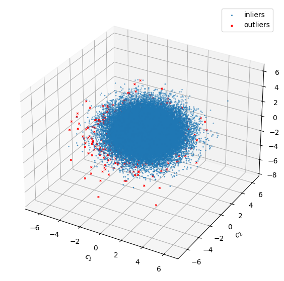
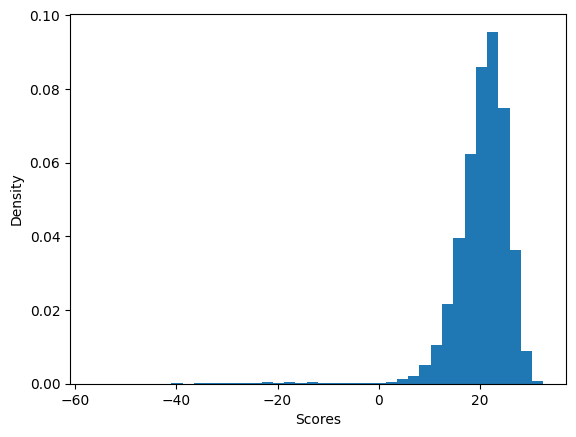
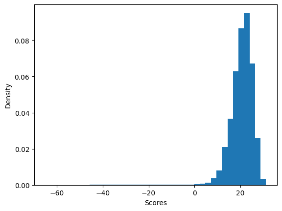
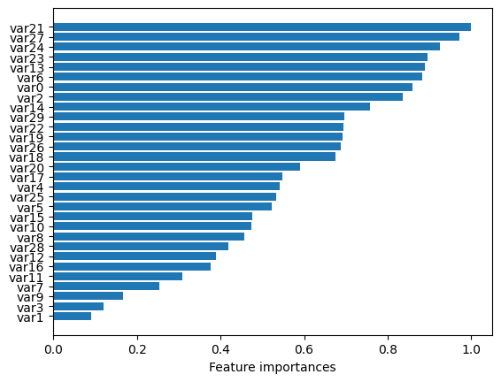

Simulated toy data example
[1]:
import numpy as np
import matplotlib.pyplot as plt
from bhad.utils import mvt2mixture
from bhad.model import BHAD
Draw from a two-component multivariate Student-t mixture distribution
Note: Anomaly class corresponds to the minority mixture component
[2]:
seed = 42
outlier_prob_true = .01 # probab. for outlier ; should be consistent with contamination rate in your model
k = 30 # feature dimension
N = 5*10**4 # sample size
# Specify first and second moments for each component
bvt = mvt2mixture(thetas = {'mean1' : np.full(k,-1), 'mean2' : np.full(k,.5),
'Sigma1' : np.eye(k)*.4, 'Sigma2' : np.eye(k)*.1,
'nu1': 3.*k, 'nu2': 3.*k}, seed = seed, gaussian = False)
# Get latent draws and observations:
#------------------------------------
y_true, dataset = bvt.draw(n_samples = N, k = k, p = outlier_prob_true)
print(dataset.shape)
(50000, 30)
[3]:
y_true.mean() # probab. latent class 1 (=anomaly)
[3]:
0.01024
Visualize your data:
Reduce dimension for visualization only:
[4]:
from sklearn.decomposition import TruncatedSVD
from sklearn.preprocessing import StandardScaler
scaler = StandardScaler()
X = scaler.fit_transform(dataset)
X_reduce = TruncatedSVD(n_components=3).fit_transform(X)
Plot all the ground truth points together with the predictions
[5]:
fig = plt.figure(figsize=(10,7))
ax = fig.add_subplot(111, projection='3d')
ax.set_xlabel(r'$c_{1}$') ; ax.set_ylabel(r'$c_{2}$') ;ax.set_zlabel(r'$c_{3}$')
# Plot the compressed inliers data points
ax.scatter(X_reduce[y_true == 0, 0], X_reduce[y_true == 0, 1], zs=X_reduce[y_true == 0, 2], s=4, lw=0, label = "inliers")
# outliers
ax.scatter(X_reduce[y_true == 1, 0], X_reduce[y_true == 1, 1], zs=X_reduce[y_true == 1, 2],
lw=1, s=6, marker="x", c="red", alpha=1, label = "outliers")
ax.legend()
plt.show();

Partition your dataset:
[6]:
from sklearn.model_selection import train_test_split
X_train, X_test, y_train, y_test = train_test_split(dataset, y_true, test_size=0.33, random_state=42)
print(X_train.shape)
print(X_test.shape)
print(np.unique(y_train, return_counts=True))
print(np.unique(y_test, return_counts=True))
(33500, 30)
(16500, 30)
(array([0, 1]), array([33147, 353]))
(array([0, 1]), array([16341, 159]))
Use another candidate anomaly detector for comparison:
[7]:
from sklearn.ensemble import IsolationForest
from sklearn.metrics import make_scorer, f1_score
from sklearn import model_selection
# Tune hyperparameters for fair comparison
param_grid = {
'contamination': [outlier_prob_true],
'max_features': [10, 20, 30],
'bootstrap': [True, False],
'n_estimators': [50, 100, 200]
}
f1sc = make_scorer(f1_score, average='macro')
grid_search = model_selection.GridSearchCV(
IsolationForest(),
param_grid,
scoring=f1sc,
refit=True,
cv=3,
return_train_score=True,
verbose=1
)
grid_search.fit(X_train, y_train)
Fitting 3 folds for each of 18 candidates, totalling 54 fits
[7]:
GridSearchCV(cv=3, estimator=IsolationForest(),
param_grid={'bootstrap': [True, False], 'contamination': [0.01],
'max_features': [10, 20, 30],
'n_estimators': [50, 100, 200]},
return_train_score=True,
scoring=make_scorer(f1_score, response_method='predict', average=macro),
verbose=1)In a Jupyter environment, please rerun this cell to show the HTML representation or trust the notebook. On GitHub, the HTML representation is unable to render, please try loading this page with nbviewer.org.
Parameters
IsolationForest(bootstrap=True, contamination=0.01, max_features=20,
n_estimators=50)Parameters
[8]:
# Best model and parameters
best_iso_forest = grid_search.best_estimator_
best_params = grid_search.best_params_
print("Best Parameters:", best_params)
# Predict anomalies
y_pred_train = best_iso_forest.predict(X_train)
y_pred_test = best_iso_forest.predict(X_test)
# -1 indicates anomalies, 1 indicates normal points
print(np.unique(y_pred_train, return_counts=True))
print(np.unique(y_pred_test, return_counts=True))
Best Parameters: {'bootstrap': True, 'contamination': 0.01, 'max_features': 20, 'n_estimators': 50}
(array([-1, 1]), array([ 335, 33165]))
(array([-1, 1]), array([ 149, 16351]))
[9]:
from sklearn.metrics import classification_report
# Make comparable to y_true encoding in DGP above
y_pred_test[y_pred_test == 1] = 0
y_pred_test[y_pred_test == -1] = 1
print(classification_report(y_test, y_pred_test, target_names=['Inlier', 'Outlier']))
precision recall f1-score support
Inlier 1.00 1.00 1.00 16341
Outlier 0.89 0.83 0.86 159
accuracy 1.00 16500
macro avg 0.94 0.91 0.93 16500
weighted avg 1.00 1.00 1.00 16500
Model training and prediction
[10]:
model = BHAD(
contamination=outlier_prob_true, # set 1% contamination as in DGP (oracle knowledge ;)
nbins=None, # step only needed if continous features are present
verbose=True
)
y_pred_train = model.fit_predict(X_train)
scores_train = model.decision_function(X_train)
print("Training predictions:", np.unique(y_pred_train, return_counts=True))
-- Bayesian Histogram-based Anomaly Detector (BHAD) --
Discretizing continuous features...
Setting maximum number of bins 184.
Input shape: (33500, 30)
Used 30 numeric feature(s) and 0 categorical feature(s).
Determining optimal number of bins for numeric features
Feature var0 using 49 bins
Determining optimal number of bins for numeric features
Feature var1 using 61 bins
Determining optimal number of bins for numeric features
Feature var2 using 42 bins
Determining optimal number of bins for numeric features
Feature var3 using 52 bins
Determining optimal number of bins for numeric features
Feature var4 using 46 bins
Determining optimal number of bins for numeric features
Feature var5 using 51 bins
Determining optimal number of bins for numeric features
Feature var6 using 51 bins
Determining optimal number of bins for numeric features
Feature var7 using 51 bins
Determining optimal number of bins for numeric features
Feature var8 using 55 bins
Determining optimal number of bins for numeric features
Feature var9 using 57 bins
Determining optimal number of bins for numeric features
Feature var10 using 45 bins
Determining optimal number of bins for numeric features
Feature var11 using 45 bins
Determining optimal number of bins for numeric features
Feature var12 using 53 bins
Determining optimal number of bins for numeric features
Feature var13 using 42 bins
Determining optimal number of bins for numeric features
Feature var14 using 60 bins
Determining optimal number of bins for numeric features
Feature var15 using 53 bins
Determining optimal number of bins for numeric features
Feature var16 using 54 bins
Determining optimal number of bins for numeric features
Feature var17 using 47 bins
Determining optimal number of bins for numeric features
Feature var18 using 49 bins
Determining optimal number of bins for numeric features
Feature var19 using 51 bins
Determining optimal number of bins for numeric features
Feature var20 using 50 bins
Determining optimal number of bins for numeric features
Feature var21 using 35 bins
Determining optimal number of bins for numeric features
Feature var22 using 55 bins
Determining optimal number of bins for numeric features
Feature var23 using 47 bins
Determining optimal number of bins for numeric features
Feature var24 using 40 bins
Determining optimal number of bins for numeric features
Feature var25 using 55 bins
Determining optimal number of bins for numeric features
Feature var26 using 42 bins
Determining optimal number of bins for numeric features
Feature var27 using 43 bins
Determining optimal number of bins for numeric features
Feature var28 using 44 bins
Determining optimal number of bins for numeric features
Feature var29 using 47 bins
Fit BHAD on discretized data.
Input shape: (33500, 30)
One-hot encoding categorical features.
Matrix dimension after one-hot encoding: (33500, 1172)
Finished training.
Score input data.
Apply fitted one-hot encoder.
Score input data.
Apply fitted one-hot encoder.
Training predictions: (array([-1, 1]), array([ 337, 33163]))
[11]:
print(np.unique(y_pred_train, return_counts=True))
(array([-1, 1]), array([ 337, 33163]))
[12]:
# Get scores first, then derive predictions (avoids processing X_test twice)
scores_test = model.decision_function(X_test)
y_pred_test = model.predict(X_test)
print(np.unique(y_pred_test, return_counts=True))
Score input data.
Apply fitted one-hot encoder.
Score input data.
Apply fitted one-hot encoder.
(array([-1, 1]), array([ 149, 16351]))
Plot score distribution:
[13]:
plt.hist(scores_train, density=True, bins=40)
plt.ylabel('Density')
plt.xlabel('Scores');

[14]:
plt.hist(scores_test, density=True, bins=40)
plt.ylabel('Density')
plt.xlabel('Scores');

[15]:
from sklearn.metrics import classification_report
# Make comparable to y_true encoding
y_pred_train[y_pred_train == 1] = 0
y_pred_train[y_pred_train == -1] = 1
print(classification_report(y_train, y_pred_train, target_names=['Inlier', 'Outlier']))
precision recall f1-score support
Inlier 1.00 1.00 1.00 33147
Outlier 0.97 0.93 0.95 353
accuracy 1.00 33500
macro avg 0.98 0.96 0.97 33500
weighted avg 1.00 1.00 1.00 33500
[16]:
# Make comparable to y_true encoding
y_pred_test[y_pred_test == 1] = 0
y_pred_test[y_pred_test == -1] = 1
print(classification_report(y_test, y_pred_test, target_names=['Inlier', 'Outlier']))
precision recall f1-score support
Inlier 1.00 1.00 1.00 16341
Outlier 0.98 0.92 0.95 159
accuracy 1.00 16500
macro avg 0.99 0.96 0.97 16500
weighted avg 1.00 1.00 1.00 16500
Model explanation:
Retrieve local model explanations. Here: Specify all numeric and categorical columns explicitly
[17]:
num_cols = list(X_train.select_dtypes(include=['float', 'int']).columns)
cat_cols = list(X_train.select_dtypes(include=['object', 'category']).columns)
[18]:
model = BHAD(
contamination = 0.01,
num_features = num_cols, cat_features = cat_cols,
nbins=50,
verbose=True
)
y_pred_train = model.fit_predict(X_train)
-- Bayesian Histogram-based Anomaly Detector (BHAD) --
Discretizing continuous features...
Setting maximum number of bins 184.
Input shape: (33500, 30)
Used 30 numeric feature(s) and 0 categorical feature(s).
Binned continous features into 50 bins.
Fit BHAD on discretized data.
Input shape: (33500, 30)
One-hot encoding categorical features.
Matrix dimension after one-hot encoding: (33500, 1205)
Finished training.
Score input data.
[19]:
from bhad import explainer
local_expl = explainer.Explainer(bhad_obj=model, discretize_obj=model._discretizer).fit()
--- BHAD Model Explainer ---
Using fitted BHAD and discretizer.
Marginal distributions estimated using train set of shape (33500, 30)
[20]:
df_train = local_expl.get_explanation(append = False)
df_train.head(5)
Create local explanations for 33500 observations.
[20]:
0 var0 (Cumul.perc.: 0.964): 6.34
1 var5 (Cumul.perc.: 0.016): -6.17\nvar18 (Cumul...
2 var17 (Cumul.perc.: 0.998): 9.28\nvar22 (Cumul...
3 var28 (Cumul.perc.: 0.987): 7.12\nvar12 (Cumul...
4 var23 (Cumul.perc.: 0.053): -4.69\nvar1 (Cumul...
Name: explanation, dtype: object
[21]:
global_feat_imp = local_expl.global_feat_imp # based on X_train
[22]:
from matplotlib import pyplot as plt
plt.barh(global_feat_imp.index, global_feat_imp.values.flatten())
plt.xlabel("Feature importances")
plt.show();

[23]:
y_pred_test = model.predict(X_test)
Score input data.
Apply fitted one-hot encoder.
[24]:
df_test = local_expl.get_explanation(thresholds = [.1]*X_test.shape[1]) # make threshold more conservative (only more extreme values are considered as outliers)
Create local explanations for 16500 observations.
Using custom thresholds.
[25]:
for obs, ex in enumerate(df_test.explanation.values):
if (obs % 10) == 0:
print(f'\nObs. {obs}:\n', ex)
Obs. 0:
var26 (Cumul.perc.: 0.002): -8.44
var4 (Cumul.perc.: 0.021): -5.5
var29 (Cumul.perc.: 0.028): -5.66
var8 (Cumul.perc.: 0.025): -4.79
var25 (Cumul.perc.: 0.952): 5.58
Obs. 10:
var26 (Cumul.perc.: 0.999): 10.05
var16 (Cumul.perc.: 0.966): 5.64
var5 (Cumul.perc.: 0.953): 5.65
Obs. 20:
var12 (Cumul.perc.: 0.997): 7.92
var18 (Cumul.perc.: 0.964): 6.13
Obs. 30:
var9 (Cumul.perc.: 0.031): -4.28
var29 (Cumul.perc.: 0.044): -4.96
var15 (Cumul.perc.: 0.97): 5.77
var22 (Cumul.perc.: 0.048): -4.37
Obs. 40:
var29 (Cumul.perc.: 0.014): -6.62
var3 (Cumul.perc.: 0.016): -5.43
Obs. 50:
var17 (Cumul.perc.: 0.967): 5.87
var5 (Cumul.perc.: 0.049): -4.64
Obs. 60:
var8 (Cumul.perc.: 0.017): -5.34
var20 (Cumul.perc.: 0.035): -4.42
var16 (Cumul.perc.: 0.96): 5.45
Obs. 70:
var25 (Cumul.perc.: 0.988): 7.5
var15 (Cumul.perc.: 0.981): 6.45
Obs. 80:
var21 (Cumul.perc.: 0.979): 7.25
var13 (Cumul.perc.: 0.036): -5.41
var22 (Cumul.perc.: 0.959): 5.61
Obs. 90:
var19 (Cumul.perc.: 0.01): -6.76
var15 (Cumul.perc.: 0.989): 7.07
Obs. 100:
None
Obs. 110:
var4 (Cumul.perc.: 0.97): 6.07
var5 (Cumul.perc.: 0.03): -5.31
var17 (Cumul.perc.: 0.956): 5.46
Obs. 120:
var20 (Cumul.perc.: 0.999): 8.89
var14 (Cumul.perc.: 0.003): -8.42
var0 (Cumul.perc.: 0.994): 8.78
var19 (Cumul.perc.: 0.963): 5.99
Obs. 130:
var20 (Cumul.perc.: 0.028): -4.69
var24 (Cumul.perc.: 0.973): 6.56
Obs. 140:
var5 (Cumul.perc.: 0.015): -6.32
var25 (Cumul.perc.: 0.022): -5.85
var28 (Cumul.perc.: 0.024): -5.47
Obs. 150:
var20 (Cumul.perc.: 0.026): -4.81
var18 (Cumul.perc.: 0.972): 6.51
var28 (Cumul.perc.: 0.048): -4.48
Obs. 160:
var12 (Cumul.perc.: 0.027): -4.78
var16 (Cumul.perc.: 0.047): -4.28
Obs. 170:
var9 (Cumul.perc.: 0.003): -6.9
var26 (Cumul.perc.: 0.022): -5.62
Obs. 180:
var17 (Cumul.perc.: 0.025): -5.39
var25 (Cumul.perc.: 0.956): 5.73
Obs. 190:
var28 (Cumul.perc.: 0.003): -7.87
var3 (Cumul.perc.: 0.004): -6.85
var6 (Cumul.perc.: 0.041): -5.37
Obs. 200:
var27 (Cumul.perc.: 0.975): 6.61
var9 (Cumul.perc.: 0.964): 5.13
Obs. 210:
var21 (Cumul.perc.: 0.968): 6.63
var2 (Cumul.perc.: 0.022): -6.07
var8 (Cumul.perc.: 0.025): -4.81
var17 (Cumul.perc.: 0.044): -4.55
Obs. 220:
var25 (Cumul.perc.: 0.979): 6.81
var21 (Cumul.perc.: 0.031): -5.82
var26 (Cumul.perc.: 0.977): 6.44
Obs. 230:
var7 (Cumul.perc.: 0.015): -5.89
var6 (Cumul.perc.: 0.032): -5.75
var22 (Cumul.perc.: 0.035): -4.79
Obs. 240:
var28 (Cumul.perc.: 0.986): 7.09
Obs. 250:
var29 (Cumul.perc.: 0.986): 7.5
var1 (Cumul.perc.: 0.966): 5.58
Obs. 260:
var7 (Cumul.perc.: 0.009): -6.45
var22 (Cumul.perc.: 0.028): -5.13
var4 (Cumul.perc.: 0.97): 6.06
Obs. 270:
var26 (Cumul.perc.: 0.032): -5.08
var9 (Cumul.perc.: 0.046): -3.84
var7 (Cumul.perc.: 0.959): 5.55
Obs. 280:
var27 (Cumul.perc.: 0.008): -6.99
var2 (Cumul.perc.: 0.024): -5.95
var18 (Cumul.perc.: 0.959): 5.94
Obs. 290:
var19 (Cumul.perc.: 0.992): 7.95
var11 (Cumul.perc.: 0.986): 7.49
var10 (Cumul.perc.: 0.964): 5.45
var18 (Cumul.perc.: 0.037): -5.07
var9 (Cumul.perc.: 0.948): 4.66
Obs. 300:
var7 (Cumul.perc.: 0.025): -5.25
Obs. 310:
var27 (Cumul.perc.: 0.99): 7.8
var4 (Cumul.perc.: 0.022): -5.47
var15 (Cumul.perc.: 0.03): -5.02
var20 (Cumul.perc.: 0.045): -4.1
var11 (Cumul.perc.: 0.956): 5.91
Obs. 320:
var1 (Cumul.perc.: 0.01): -6.27
var24 (Cumul.perc.: 0.031): -5.38
var20 (Cumul.perc.: 0.957): 5.13
var3 (Cumul.perc.: 0.038): -4.35
var5 (Cumul.perc.: 0.953): 5.62
Obs. 330:
var28 (Cumul.perc.: 0.985): 6.98
var17 (Cumul.perc.: 0.966): 5.84
var9 (Cumul.perc.: 0.039): -4.04
var15 (Cumul.perc.: 0.958): 5.33
var12 (Cumul.perc.: 0.948): 4.81
Obs. 340:
var23 (Cumul.perc.: 0.987): 7.52
var14 (Cumul.perc.: 0.015): -6.39
var26 (Cumul.perc.: 0.022): -5.59
var10 (Cumul.perc.: 0.957): 5.21
Obs. 350:
var25 (Cumul.perc.: 0.985): 7.24
var5 (Cumul.perc.: 0.967): 6.1
Obs. 360:
var13 (Cumul.perc.: 0.987): 7.78
var6 (Cumul.perc.: 0.972): 6.91
var10 (Cumul.perc.: 0.962): 5.38
Obs. 370:
var28 (Cumul.perc.: 0.994): 8.2
var24 (Cumul.perc.: 0.993): 8.18
var6 (Cumul.perc.: 0.981): 7.5
var3 (Cumul.perc.: 0.969): 5.53
var11 (Cumul.perc.: 0.978): 6.86
Obs. 380:
var8 (Cumul.perc.: 0.977): 5.8
var3 (Cumul.perc.: 0.03): -4.66
var1 (Cumul.perc.: 0.024): -5.15
Obs. 390:
var6 (Cumul.perc.: 0.006): -8.15
var29 (Cumul.perc.: 0.008): -7.34
var24 (Cumul.perc.: 0.028): -5.53
var23 (Cumul.perc.: 0.028): -5.7
var28 (Cumul.perc.: 0.033): -5.01
Obs. 400:
var10 (Cumul.perc.: 0.98): 6.15
var11 (Cumul.perc.: 0.018): -6.27
var29 (Cumul.perc.: 0.956): 5.94
Obs. 410:
var8 (Cumul.perc.: 0.01): -6.03
var9 (Cumul.perc.: 0.99): 6.43
var29 (Cumul.perc.: 0.973): 6.72
var24 (Cumul.perc.: 0.046): -4.81
Obs. 420:
var14 (Cumul.perc.: 0.006): -7.59
var2 (Cumul.perc.: 0.983): 7.47
var24 (Cumul.perc.: 0.988): 7.51
var0 (Cumul.perc.: 0.971): 6.64
var22 (Cumul.perc.: 0.958): 5.59
Obs. 430:
var3 (Cumul.perc.: 0.985): 6.37
var22 (Cumul.perc.: 0.028): -5.13
var9 (Cumul.perc.: 0.957): 4.9
var16 (Cumul.perc.: 0.05): -4.2
Obs. 440:
var10 (Cumul.perc.: 0.963): 5.42
var28 (Cumul.perc.: 0.964): 5.79
Obs. 450:
var27 (Cumul.perc.: 0.017): -6.08
var13 (Cumul.perc.: 0.022): -6.24
var7 (Cumul.perc.: 0.048): -4.37
Obs. 460:
var13 (Cumul.perc.: 0.045): -5.11
Obs. 470:
var2 (Cumul.perc.: 0.979): 7.19
var24 (Cumul.perc.: 0.031): -5.39
Obs. 480:
var24 (Cumul.perc.: 0.994): 8.26
var11 (Cumul.perc.: 0.041): -5.06
Obs. 490:
var8 (Cumul.perc.: 0.003): -7.23
var18 (Cumul.perc.: 0.997): 9.16
var16 (Cumul.perc.: 0.988): 6.9
var22 (Cumul.perc.: 0.954): 5.44
Obs. 500:
var15 (Cumul.perc.: 0.998): 8.64
var1 (Cumul.perc.: 0.051): -4.14
Obs. 510:
var18 (Cumul.perc.: 0.02): -5.94
var5 (Cumul.perc.: 0.971): 6.29
var1 (Cumul.perc.: 0.037): -4.55
Obs. 520:
var24 (Cumul.perc.: 1.0): 11.33
var18 (Cumul.perc.: 0.003): -8.09
var2 (Cumul.perc.: 0.994): 8.9
var22 (Cumul.perc.: 0.014): -5.97
var14 (Cumul.perc.: 0.017): -6.25
Obs. 530:
var4 (Cumul.perc.: 0.994): 8.1
var15 (Cumul.perc.: 0.987): 6.85
var14 (Cumul.perc.: 0.974): 6.56
var24 (Cumul.perc.: 0.043): -4.91
Obs. 540:
var17 (Cumul.perc.: 0.014): -6.12
var12 (Cumul.perc.: 0.022): -5.03
var25 (Cumul.perc.: 0.029): -5.51
Obs. 550:
var7 (Cumul.perc.: 0.993): 7.71
var27 (Cumul.perc.: 0.029): -5.35
var25 (Cumul.perc.: 0.977): 6.69
Obs. 560:
var14 (Cumul.perc.: 0.982): 7.09
var6 (Cumul.perc.: 0.969): 6.8
var21 (Cumul.perc.: 0.976): 7.13
var17 (Cumul.perc.: 0.032): -5.02
var24 (Cumul.perc.: 0.044): -4.86
Obs. 570:
var16 (Cumul.perc.: 0.05): -4.2
Obs. 580:
var14 (Cumul.perc.: 0.964): 6.11
Obs. 590:
var29 (Cumul.perc.: 0.001): -10.35
var2 (Cumul.perc.: 0.007): -7.51
var10 (Cumul.perc.: 0.987): 6.69
var9 (Cumul.perc.: 0.037): -4.08
Obs. 600:
var13 (Cumul.perc.: 0.991): 8.24
Obs. 610:
var8 (Cumul.perc.: 0.022): -4.97
var2 (Cumul.perc.: 0.972): 6.77
var23 (Cumul.perc.: 0.033): -5.45
var18 (Cumul.perc.: 0.036): -5.1
var17 (Cumul.perc.: 0.041): -4.64
Obs. 620:
var4 (Cumul.perc.: 0.003): -7.96
var24 (Cumul.perc.: 0.022): -5.88
var9 (Cumul.perc.: 0.98): 5.78
var0 (Cumul.perc.: 0.034): -5.52
Obs. 630:
var28 (Cumul.perc.: 0.993): 7.88
var29 (Cumul.perc.: 0.974): 6.73
var19 (Cumul.perc.: 0.041): -4.83
var17 (Cumul.perc.: 0.969): 5.97
Obs. 640:
var12 (Cumul.perc.: 0.004): -7.28
var6 (Cumul.perc.: 0.991): 8.46
var10 (Cumul.perc.: 0.011): -5.88
var8 (Cumul.perc.: 0.969): 5.46
var1 (Cumul.perc.: 0.045): -4.28
Obs. 650:
var10 (Cumul.perc.: 0.027): -4.95
var5 (Cumul.perc.: 0.975): 6.52
var21 (Cumul.perc.: 0.049): -5.1
var11 (Cumul.perc.: 0.049): -4.76
Obs. 660:
var6 (Cumul.perc.: 0.01): -7.42
var29 (Cumul.perc.: 0.985): 7.4
Obs. 670:
var7 (Cumul.perc.: 0.019): -5.62
var6 (Cumul.perc.: 0.964): 6.55
Obs. 680:
var20 (Cumul.perc.: 0.008): -6.21
Obs. 690:
var28 (Cumul.perc.: 0.991): 7.6
var21 (Cumul.perc.: 0.986): 7.8
Obs. 700:
var0 (Cumul.perc.: 0.014): -6.72
var3 (Cumul.perc.: 0.031): -4.61
var19 (Cumul.perc.: 0.038): -4.97
var28 (Cumul.perc.: 0.961): 5.72
Obs. 710:
var18 (Cumul.perc.: 0.024): -5.7
var1 (Cumul.perc.: 0.97): 5.75
Obs. 720:
var11 (Cumul.perc.: 0.995): 8.56
var15 (Cumul.perc.: 0.986): 6.75
var23 (Cumul.perc.: 0.985): 7.31
var8 (Cumul.perc.: 0.041): -4.22
var9 (Cumul.perc.: 0.963): 5.1
Obs. 730:
var9 (Cumul.perc.: 0.037): -4.08
Obs. 740:
var29 (Cumul.perc.: 0.989): 7.89
var10 (Cumul.perc.: 0.989): 6.88
var25 (Cumul.perc.: 0.991): 7.82
var12 (Cumul.perc.: 0.966): 5.37
Obs. 750:
var9 (Cumul.perc.: 0.99): 6.44
Obs. 760:
var26 (Cumul.perc.: 0.995): 8.21
var9 (Cumul.perc.: 0.973): 5.47
var16 (Cumul.perc.: 0.966): 5.66
var17 (Cumul.perc.: 0.034): -4.95
Obs. 770:
var25 (Cumul.perc.: 0.036): -5.17
var23 (Cumul.perc.: 0.957): 5.9
Obs. 780:
var10 (Cumul.perc.: 0.996): 7.8
var2 (Cumul.perc.: 0.969): 6.64
var16 (Cumul.perc.: 0.975): 6.02
Obs. 790:
var16 (Cumul.perc.: 0.034): -4.68
Obs. 800:
var5 (Cumul.perc.: 0.993): 8.19
var8 (Cumul.perc.: 0.011): -5.85
var25 (Cumul.perc.: 0.955): 5.69
Obs. 810:
var10 (Cumul.perc.: 0.012): -5.8
var0 (Cumul.perc.: 0.021): -6.2
var11 (Cumul.perc.: 0.026): -5.68
var28 (Cumul.perc.: 0.03): -5.17
var3 (Cumul.perc.: 0.026): -4.81
Obs. 820:
var22 (Cumul.perc.: 0.014): -6.02
var4 (Cumul.perc.: 0.988): 7.13
var14 (Cumul.perc.: 0.987): 7.49
var18 (Cumul.perc.: 0.021): -5.85
var11 (Cumul.perc.: 0.017): -6.35
Obs. 830:
var3 (Cumul.perc.: 0.992): 7.03
var19 (Cumul.perc.: 0.975): 6.56
var23 (Cumul.perc.: 0.025): -5.86
Obs. 840:
var27 (Cumul.perc.: 0.977): 6.72
var3 (Cumul.perc.: 0.027): -4.78
var16 (Cumul.perc.: 0.033): -4.74
var20 (Cumul.perc.: 0.032): -4.52
var17 (Cumul.perc.: 0.049): -4.41
Obs. 850:
var17 (Cumul.perc.: 0.003): -8.09
var1 (Cumul.perc.: 0.013): -5.96
var8 (Cumul.perc.: 0.963): 5.23
var26 (Cumul.perc.: 0.954): 5.56
Obs. 860:
var20 (Cumul.perc.: 0.998): 8.73
var24 (Cumul.perc.: 0.031): -5.39
var13 (Cumul.perc.: 0.967): 6.48
var4 (Cumul.perc.: 0.972): 6.15
var11 (Cumul.perc.: 0.046): -4.85
Obs. 870:
var21 (Cumul.perc.: 0.025): -6.17
Obs. 880:
var24 (Cumul.perc.: 0.009): -7.0
var3 (Cumul.perc.: 0.016): -5.42
var22 (Cumul.perc.: 0.023): -5.37
var19 (Cumul.perc.: 0.036): -5.04
var11 (Cumul.perc.: 0.042): -4.99
Obs. 890:
var4 (Cumul.perc.: 0.987): 7.05
var20 (Cumul.perc.: 0.987): 6.53
var9 (Cumul.perc.: 0.015): -5.14
var27 (Cumul.perc.: 0.979): 6.78
var0 (Cumul.perc.: 0.975): 6.89
Obs. 900:
var27 (Cumul.perc.: 0.96): 5.93
Obs. 910:
var29 (Cumul.perc.: 0.993): 8.4
var25 (Cumul.perc.: 0.972): 6.48
var8 (Cumul.perc.: 0.039): -4.29
var27 (Cumul.perc.: 0.039): -4.96
Obs. 920:
var18 (Cumul.perc.: 0.996): 8.84
var17 (Cumul.perc.: 0.01): -6.58
var23 (Cumul.perc.: 0.017): -6.33
var7 (Cumul.perc.: 0.043): -4.52
Obs. 930:
var26 (Cumul.perc.: 0.991): 7.65
var7 (Cumul.perc.: 0.971): 6.04
var10 (Cumul.perc.: 0.045): -4.21
Obs. 940:
var16 (Cumul.perc.: 0.997): 8.29
var26 (Cumul.perc.: 0.995): 8.19
var21 (Cumul.perc.: 0.014): -6.98
var3 (Cumul.perc.: 0.017): -5.36
var15 (Cumul.perc.: 0.955): 5.22
Obs. 950:
var13 (Cumul.perc.: 0.016): -6.59
var16 (Cumul.perc.: 0.989): 7.01
var17 (Cumul.perc.: 0.985): 6.9
var23 (Cumul.perc.: 0.973): 6.52
var25 (Cumul.perc.: 0.039): -5.06
Obs. 960:
var8 (Cumul.perc.: 0.989): 6.56
var1 (Cumul.perc.: 0.018): -5.51
var4 (Cumul.perc.: 0.967): 5.94
Obs. 970:
var5 (Cumul.perc.: 0.994): 8.27
var26 (Cumul.perc.: 0.009): -6.72
var11 (Cumul.perc.: 0.972): 6.52
var23 (Cumul.perc.: 0.05): -4.79
var15 (Cumul.perc.: 0.05): -4.34
Obs. 980:
None
Obs. 990:
var27 (Cumul.perc.: 0.973): 6.49
var28 (Cumul.perc.: 0.98): 6.6
var0 (Cumul.perc.: 0.964): 6.33
Obs. 1000:
var7 (Cumul.perc.: 0.987): 7.04
var14 (Cumul.perc.: 0.971): 6.44
var12 (Cumul.perc.: 0.952): 4.92
Obs. 1010:
var29 (Cumul.perc.: 0.005): -7.96
var11 (Cumul.perc.: 0.99): 7.84
var9 (Cumul.perc.: 0.04): -3.99
Obs. 1020:
var19 (Cumul.perc.: 0.032): -5.22
Obs. 1030:
var23 (Cumul.perc.: 0.008): -7.44
var24 (Cumul.perc.: 0.017): -6.25
var3 (Cumul.perc.: 0.045): -4.12
Obs. 1040:
var9 (Cumul.perc.: 0.005): -6.2
var23 (Cumul.perc.: 0.013): -6.76
var10 (Cumul.perc.: 0.976): 5.97
Obs. 1050:
var25 (Cumul.perc.: 0.986): 7.3
var16 (Cumul.perc.: 0.951): 5.18
Obs. 1060:
var22 (Cumul.perc.: 0.997): 8.48
var15 (Cumul.perc.: 0.008): -6.72
var19 (Cumul.perc.: 0.986): 7.23
var17 (Cumul.perc.: 0.021): -5.61
var12 (Cumul.perc.: 0.03): -4.63
Obs. 1070:
var20 (Cumul.perc.: 0.992): 7.15
var27 (Cumul.perc.: 0.989): 7.6
var6 (Cumul.perc.: 0.044): -5.26
Obs. 1080:
var13 (Cumul.perc.: 0.019): -6.41
var14 (Cumul.perc.: 0.971): 6.41
Obs. 1090:
var6 (Cumul.perc.: 0.009): -7.51
var25 (Cumul.perc.: 0.009): -6.94
var7 (Cumul.perc.: 0.013): -6.14
var27 (Cumul.perc.: 0.972): 6.43
var29 (Cumul.perc.: 0.02): -6.12
Obs. 1100:
var8 (Cumul.perc.: 0.992): 6.92
Obs. 1110:
var14 (Cumul.perc.: 0.005): -7.87
var27 (Cumul.perc.: 0.009): -6.83
var28 (Cumul.perc.: 0.033): -5.02
var4 (Cumul.perc.: 0.037): -4.74
Obs. 1120:
var29 (Cumul.perc.: 0.048): -4.82
Obs. 1130:
var16 (Cumul.perc.: 0.005): -7.08
var18 (Cumul.perc.: 0.987): 7.49
var17 (Cumul.perc.: 0.985): 6.9
var8 (Cumul.perc.: 0.966): 5.34
Obs. 1140:
var1 (Cumul.perc.: 0.979): 6.15
var2 (Cumul.perc.: 0.96): 6.26
Obs. 1150:
var11 (Cumul.perc.: 0.037): -5.21
Obs. 1160:
var27 (Cumul.perc.: 0.026): -5.54
var26 (Cumul.perc.: 0.955): 5.59
Obs. 1170:
var15 (Cumul.perc.: 0.984): 6.65
var16 (Cumul.perc.: 0.044): -4.38
Obs. 1180:
var21 (Cumul.perc.: 0.983): 7.55
var8 (Cumul.perc.: 0.035): -4.42
var3 (Cumul.perc.: 0.045): -4.12
Obs. 1190:
var23 (Cumul.perc.: 0.041): -5.11
var20 (Cumul.perc.: 0.964): 5.35
var12 (Cumul.perc.: 0.045): -4.1
var17 (Cumul.perc.: 0.049): -4.4
Obs. 1200:
var4 (Cumul.perc.: 1.0): 12.74
var14 (Cumul.perc.: 0.998): 9.62
var11 (Cumul.perc.: 0.005): -7.95
var18 (Cumul.perc.: 0.011): -6.7
var24 (Cumul.perc.: 0.026): -5.64
Obs. 1210:
var17 (Cumul.perc.: 0.015): -6.04
var19 (Cumul.perc.: 0.973): 6.45
var25 (Cumul.perc.: 0.017): -6.19
var13 (Cumul.perc.: 0.965): 6.38
var23 (Cumul.perc.: 0.039): -5.2
Obs. 1220:
var22 (Cumul.perc.: 0.984): 6.69
Obs. 1230:
var21 (Cumul.perc.: 0.05): -5.08
Obs. 1240:
var28 (Cumul.perc.: 0.996): 8.55
var4 (Cumul.perc.: 0.975): 6.28
var24 (Cumul.perc.: 0.971): 6.48
var22 (Cumul.perc.: 0.951): 5.36
Obs. 1250:
var9 (Cumul.perc.: 0.007): -5.97
var11 (Cumul.perc.: 0.97): 6.42
Obs. 1260:
var13 (Cumul.perc.: 0.999): 10.75
var24 (Cumul.perc.: 0.991): 7.78
var25 (Cumul.perc.: 0.015): -6.29
var3 (Cumul.perc.: 0.022): -4.99
Obs. 1270:
var23 (Cumul.perc.: 0.997): 9.28
var12 (Cumul.perc.: 0.02): -5.11
var3 (Cumul.perc.: 0.968): 5.49
Obs. 1280:
var23 (Cumul.perc.: 0.999): 10.1
var11 (Cumul.perc.: 0.01): -7.03
var26 (Cumul.perc.: 0.022): -5.59
var3 (Cumul.perc.: 0.959): 5.17
var8 (Cumul.perc.: 0.952): 4.9
Obs. 1290:
var19 (Cumul.perc.: 0.979): 6.82
Obs. 1300:
var21 (Cumul.perc.: 0.996): 9.33
var12 (Cumul.perc.: 0.995): 7.39
var24 (Cumul.perc.: 0.968): 6.3
var27 (Cumul.perc.: 0.037): -5.02
Obs. 1310:
var28 (Cumul.perc.: 0.959): 5.62
var3 (Cumul.perc.: 0.948): 4.87
Obs. 1320:
var7 (Cumul.perc.: 0.004): -7.4
var20 (Cumul.perc.: 0.981): 6.09
var24 (Cumul.perc.: 0.028): -5.51
var3 (Cumul.perc.: 0.967): 5.46
Obs. 1330:
None
Obs. 1340:
var24 (Cumul.perc.: 0.014): -6.49
var4 (Cumul.perc.: 0.02): -5.57
var0 (Cumul.perc.: 0.027): -5.8
var16 (Cumul.perc.: 0.037): -4.58
var17 (Cumul.perc.: 0.047): -4.44
Obs. 1350:
var24 (Cumul.perc.: 0.991): 7.87
Obs. 1360:
var21 (Cumul.perc.: 0.011): -7.3
var14 (Cumul.perc.: 0.046): -4.81
Obs. 1370:
var13 (Cumul.perc.: 0.011): -7.15
var11 (Cumul.perc.: 0.042): -5.0
var5 (Cumul.perc.: 0.95): 5.56
Obs. 1380:
var21 (Cumul.perc.: 0.005): -8.41
var12 (Cumul.perc.: 0.994): 7.34
var22 (Cumul.perc.: 0.012): -6.21
var28 (Cumul.perc.: 0.012): -6.37
var24 (Cumul.perc.: 0.983): 7.14
Obs. 1390:
var16 (Cumul.perc.: 0.005): -7.12
var26 (Cumul.perc.: 0.024): -5.48
var25 (Cumul.perc.: 0.049): -4.7
Obs. 1400:
var27 (Cumul.perc.: 0.97): 6.34
var12 (Cumul.perc.: 0.954): 5.0
Obs. 1410:
var22 (Cumul.perc.: 0.986): 6.89
var20 (Cumul.perc.: 0.042): -4.18
var29 (Cumul.perc.: 0.959): 6.06
Obs. 1420:
var8 (Cumul.perc.: 0.991): 6.78
var16 (Cumul.perc.: 0.016): -5.63
var26 (Cumul.perc.: 0.025): -5.42
var12 (Cumul.perc.: 0.017): -5.34
var0 (Cumul.perc.: 0.031): -5.67
Obs. 1430:
var8 (Cumul.perc.: 0.991): 6.83
var1 (Cumul.perc.: 0.015): -5.73
var6 (Cumul.perc.: 0.02): -6.47
var10 (Cumul.perc.: 0.975): 5.91
Obs. 1440:
var21 (Cumul.perc.: 0.996): 9.18
var14 (Cumul.perc.: 0.965): 6.16
var7 (Cumul.perc.: 0.966): 5.86
Obs. 1450:
var29 (Cumul.perc.: 0.018): -6.28
var15 (Cumul.perc.: 0.969): 5.73
var17 (Cumul.perc.: 0.049): -4.38
var3 (Cumul.perc.: 0.044): -4.15
Obs. 1460:
None
Obs. 1470:
var11 (Cumul.perc.: 0.001): -10.35
var4 (Cumul.perc.: 0.99): 7.32
var24 (Cumul.perc.: 0.012): -6.71
var2 (Cumul.perc.: 0.968): 6.59
var7 (Cumul.perc.: 0.026): -5.2
Obs. 1480:
var16 (Cumul.perc.: 0.977): 6.08
var7 (Cumul.perc.: 0.042): -4.57
Obs. 1490:
var27 (Cumul.perc.: 0.041): -4.87
var12 (Cumul.perc.: 0.955): 5.03
var9 (Cumul.perc.: 0.971): 5.39
Obs. 1500:
var27 (Cumul.perc.: 0.013): -6.42
var9 (Cumul.perc.: 0.013): -5.3
var2 (Cumul.perc.: 0.045): -5.05
Obs. 1510:
var27 (Cumul.perc.: 0.961): 5.95
Obs. 1520:
var10 (Cumul.perc.: 0.008): -6.38
var12 (Cumul.perc.: 0.025): -4.84
var9 (Cumul.perc.: 0.036): -4.13
var23 (Cumul.perc.: 0.95): 5.65
Obs. 1530:
var8 (Cumul.perc.: 0.997): 7.8
var15 (Cumul.perc.: 0.989): 7.09
var14 (Cumul.perc.: 0.979): 6.89
var18 (Cumul.perc.: 0.019): -6.01
var7 (Cumul.perc.: 0.043): -4.53
Obs. 1540:
var0 (Cumul.perc.: 0.994): 8.7
var29 (Cumul.perc.: 0.977): 6.9
var9 (Cumul.perc.: 0.964): 5.13
var11 (Cumul.perc.: 0.957): 5.93
Obs. 1550:
var28 (Cumul.perc.: 0.009): -6.72
var4 (Cumul.perc.: 0.974): 6.22
var29 (Cumul.perc.: 0.975): 6.82
var25 (Cumul.perc.: 0.041): -4.99
Obs. 1560:
var6 (Cumul.perc.: 0.98): 7.39
Obs. 1570:
var12 (Cumul.perc.: 0.029): -4.65
Obs. 1580:
var5 (Cumul.perc.: 0.987): 7.37
Obs. 1590:
var28 (Cumul.perc.: 0.982): 6.71
Obs. 1600:
var25 (Cumul.perc.: 0.999): 10.59
var4 (Cumul.perc.: 0.004): -7.45
var6 (Cumul.perc.: 0.957): 6.26
var3 (Cumul.perc.: 0.035): -4.46
Obs. 1610:
var16 (Cumul.perc.: 0.023): -5.19
var8 (Cumul.perc.: 0.025): -4.79
var11 (Cumul.perc.: 0.976): 6.76
Obs. 1620:
var10 (Cumul.perc.: 0.045): -4.22
Obs. 1630:
var12 (Cumul.perc.: 0.004): -7.22
var10 (Cumul.perc.: 0.015): -5.6
Obs. 1640:
var9 (Cumul.perc.: 0.003): -6.6
var27 (Cumul.perc.: 0.028): -5.42
var19 (Cumul.perc.: 0.041): -4.84
var16 (Cumul.perc.: 0.023): -5.16
var4 (Cumul.perc.: 0.965): 5.83
Obs. 1650:
var19 (Cumul.perc.: 0.017): -6.11
var12 (Cumul.perc.: 0.983): 6.13
var13 (Cumul.perc.: 0.032): -5.62
var28 (Cumul.perc.: 0.96): 5.66
var26 (Cumul.perc.: 0.955): 5.59
Obs. 1660:
var15 (Cumul.perc.: 0.997): 8.31
var6 (Cumul.perc.: 0.026): -6.11
var25 (Cumul.perc.: 0.015): -6.28
var9 (Cumul.perc.: 0.986): 6.14
var26 (Cumul.perc.: 0.966): 5.91
Obs. 1670:
var14 (Cumul.perc.: 0.035): -5.22
var12 (Cumul.perc.: 0.034): -4.45
Obs. 1680:
var11 (Cumul.perc.: 0.01): -7.04
var2 (Cumul.perc.: 0.033): -5.53
var4 (Cumul.perc.: 0.961): 5.68
Obs. 1690:
var1 (Cumul.perc.: 0.032): -4.75
var16 (Cumul.perc.: 0.969): 5.73
Obs. 1700:
var7 (Cumul.perc.: 0.026): -5.18
var5 (Cumul.perc.: 0.96): 5.87
Obs. 1710:
var25 (Cumul.perc.: 0.965): 6.12
var15 (Cumul.perc.: 0.043): -4.53
Obs. 1720:
None
Obs. 1730:
var27 (Cumul.perc.: 0.046): -4.68
Obs. 1740:
None
Obs. 1750:
var9 (Cumul.perc.: 0.001): -7.78
var21 (Cumul.perc.: 0.962): 6.37
var26 (Cumul.perc.: 0.031): -5.13
var12 (Cumul.perc.: 0.949): 4.83
Obs. 1760:
var11 (Cumul.perc.: 0.97): 6.4
Obs. 1770:
var6 (Cumul.perc.: 0.004): -8.65
var2 (Cumul.perc.: 0.995): 9.11
var26 (Cumul.perc.: 0.993): 7.83
var20 (Cumul.perc.: 0.99): 6.85
var27 (Cumul.perc.: 0.977): 6.68
Obs. 1780:
var18 (Cumul.perc.: 0.991): 7.88
var19 (Cumul.perc.: 0.016): -6.12
var11 (Cumul.perc.: 0.966): 6.26
Obs. 1790:
var20 (Cumul.perc.: 0.993): 7.21
var23 (Cumul.perc.: 0.026): -5.79
Obs. 1800:
var8 (Cumul.perc.: 0.004): -7.2
var6 (Cumul.perc.: 0.01): -7.38
var25 (Cumul.perc.: 0.974): 6.56
Obs. 1810:
var28 (Cumul.perc.: 0.978): 6.46
var6 (Cumul.perc.: 0.953): 6.16
Obs. 1820:
var24 (Cumul.perc.: 0.98): 6.96
var23 (Cumul.perc.: 0.974): 6.56
Obs. 1830:
var8 (Cumul.perc.: 0.993): 7.03
var4 (Cumul.perc.: 0.03): -5.06
var15 (Cumul.perc.: 0.021): -5.49
Obs. 1840:
var21 (Cumul.perc.: 0.012): -7.21
var6 (Cumul.perc.: 0.044): -5.26
var18 (Cumul.perc.: 0.039): -5.02
Obs. 1850:
var8 (Cumul.perc.: 0.036): -4.38
Obs. 1860:
var19 (Cumul.perc.: 0.037): -4.99
var15 (Cumul.perc.: 0.96): 5.4
var18 (Cumul.perc.: 0.046): -4.77
var23 (Cumul.perc.: 0.951): 5.67
Obs. 1870:
None
Obs. 1880:
var25 (Cumul.perc.: 0.998): 9.64
var16 (Cumul.perc.: 0.033): -4.72
var10 (Cumul.perc.: 0.04): -4.37
Obs. 1890:
var21 (Cumul.perc.: 0.022): -6.38
var29 (Cumul.perc.: 0.984): 7.34
var27 (Cumul.perc.: 0.975): 6.61
Obs. 1900:
var0 (Cumul.perc.: 0.991): 8.17
var17 (Cumul.perc.: 0.012): -6.28
var8 (Cumul.perc.: 0.035): -4.4
var27 (Cumul.perc.: 0.958): 5.86
Obs. 1910:
None
Obs. 1920:
var15 (Cumul.perc.: 0.002): -8.7
var13 (Cumul.perc.: 0.997): 9.71
var1 (Cumul.perc.: 0.996): 7.89
var4 (Cumul.perc.: 0.01): -6.32
var5 (Cumul.perc.: 0.959): 5.82
Obs. 1930:
var28 (Cumul.perc.: 0.003): -7.86
var17 (Cumul.perc.: 0.01): -6.46
var26 (Cumul.perc.: 0.987): 7.18
var15 (Cumul.perc.: 0.983): 6.58
var2 (Cumul.perc.: 0.977): 7.05
Obs. 1940:
var27 (Cumul.perc.: 0.026): -5.49
var18 (Cumul.perc.: 0.021): -5.85
Obs. 1950:
var11 (Cumul.perc.: 0.995): 8.59
var23 (Cumul.perc.: 0.007): -7.51
var0 (Cumul.perc.: 0.026): -5.86
var25 (Cumul.perc.: 0.043): -4.93
var4 (Cumul.perc.: 0.04): -4.62
Obs. 1960:
var26 (Cumul.perc.: 0.005): -7.35
var25 (Cumul.perc.: 0.013): -6.5
Obs. 1970:
var27 (Cumul.perc.: 0.012): -6.47
var14 (Cumul.perc.: 0.021): -5.94
var29 (Cumul.perc.: 0.032): -5.46
Obs. 1980:
var14 (Cumul.perc.: 0.993): 8.22
var15 (Cumul.perc.: 0.991): 7.28
var10 (Cumul.perc.: 0.023): -5.12
var9 (Cumul.perc.: 0.041): -3.98
Obs. 1990:
var20 (Cumul.perc.: 0.976): 5.85
Obs. 2000:
var5 (Cumul.perc.: 0.015): -6.24
var10 (Cumul.perc.: 0.977): 6.03
var11 (Cumul.perc.: 0.979): 6.93
var17 (Cumul.perc.: 0.963): 5.7
Obs. 2010:
var19 (Cumul.perc.: 0.006): -7.51
var26 (Cumul.perc.: 0.98): 6.61
var16 (Cumul.perc.: 0.979): 6.2
Obs. 2020:
var29 (Cumul.perc.: 0.03): -5.59
var16 (Cumul.perc.: 0.037): -4.59
var15 (Cumul.perc.: 0.969): 5.75
Obs. 2030:
var28 (Cumul.perc.: 0.011): -6.48
var4 (Cumul.perc.: 0.051): -4.3
var1 (Cumul.perc.: 0.953): 5.13
Obs. 2040:
var18 (Cumul.perc.: 0.013): -6.48
var4 (Cumul.perc.: 0.974): 6.23
var9 (Cumul.perc.: 0.025): -4.59
Obs. 2050:
var27 (Cumul.perc.: 0.993): 8.16
var16 (Cumul.perc.: 0.021): -5.3
Obs. 2060:
var15 (Cumul.perc.: 0.008): -6.61
var17 (Cumul.perc.: 0.975): 6.25
var27 (Cumul.perc.: 0.952): 5.66
var23 (Cumul.perc.: 0.952): 5.72
Obs. 2070:
var15 (Cumul.perc.: 0.005): -7.26
var16 (Cumul.perc.: 0.99): 7.07
Obs. 2080:
var4 (Cumul.perc.: 0.031): -4.99
var14 (Cumul.perc.: 0.031): -5.42
var9 (Cumul.perc.: 0.98): 5.76
Obs. 2090:
None
Obs. 2100:
var0 (Cumul.perc.: 0.012): -6.98
var27 (Cumul.perc.: 0.017): -6.06
Obs. 2110:
None
Obs. 2120:
var25 (Cumul.perc.: 0.027): -5.6
Obs. 2130:
var20 (Cumul.perc.: 0.99): 6.88
var29 (Cumul.perc.: 0.019): -6.25
var28 (Cumul.perc.: 0.973): 6.17
var12 (Cumul.perc.: 0.972): 5.63
Obs. 2140:
var22 (Cumul.perc.: 0.024): -5.3
var21 (Cumul.perc.: 0.04): -5.44
var11 (Cumul.perc.: 0.031): -5.46
var28 (Cumul.perc.: 0.036): -4.91
Obs. 2150:
var6 (Cumul.perc.: 0.0): -12.94
var22 (Cumul.perc.: 0.993): 7.71
var2 (Cumul.perc.: 0.992): 8.45
var19 (Cumul.perc.: 0.972): 6.41
var5 (Cumul.perc.: 0.018): -6.03
Obs. 2160:
var3 (Cumul.perc.: 0.988): 6.63
var7 (Cumul.perc.: 0.016): -5.86
var0 (Cumul.perc.: 0.955): 5.99
Obs. 2170:
var4 (Cumul.perc.: 0.004): -7.73
var17 (Cumul.perc.: 0.976): 6.27
var24 (Cumul.perc.: 0.954): 5.79
var8 (Cumul.perc.: 0.964): 5.26
var12 (Cumul.perc.: 0.958): 5.11
Obs. 2180:
var7 (Cumul.perc.: 0.962): 5.69
Obs. 2190:
var12 (Cumul.perc.: 0.009): -6.12
var26 (Cumul.perc.: 0.015): -6.16
var10 (Cumul.perc.: 0.024): -5.07
Obs. 2200:
None
Obs. 2210:
var25 (Cumul.perc.: 0.983): 7.11
var27 (Cumul.perc.: 0.04): -4.89
Obs. 2220:
var27 (Cumul.perc.: 0.97): 6.33
var28 (Cumul.perc.: 0.974): 6.23
var22 (Cumul.perc.: 0.973): 6.09
Obs. 2230:
var15 (Cumul.perc.: 0.03): -5.03
var17 (Cumul.perc.: 0.038): -4.75
Obs. 2240:
var23 (Cumul.perc.: 0.007): -7.64
var26 (Cumul.perc.: 0.954): 5.57
Obs. 2250:
var8 (Cumul.perc.: 0.002): -7.93
var5 (Cumul.perc.: 0.018): -6.05
var23 (Cumul.perc.: 0.026): -5.78
Obs. 2260:
var26 (Cumul.perc.: 1.0): 10.52
var19 (Cumul.perc.: 0.034): -5.15
var17 (Cumul.perc.: 0.957): 5.49
var27 (Cumul.perc.: 0.963): 6.01
var21 (Cumul.perc.: 0.042): -5.36
Obs. 2270:
var23 (Cumul.perc.: 0.009): -7.21
var18 (Cumul.perc.: 0.969): 6.34
var8 (Cumul.perc.: 0.035): -4.4
var16 (Cumul.perc.: 0.969): 5.74
var20 (Cumul.perc.: 0.962): 5.28
Obs. 2280:
var5 (Cumul.perc.: 0.979): 6.8
var27 (Cumul.perc.: 0.975): 6.6
var7 (Cumul.perc.: 0.045): -4.45
Obs. 2290:
var21 (Cumul.perc.: 0.995): 9.02
var16 (Cumul.perc.: 0.007): -6.48
var23 (Cumul.perc.: 0.976): 6.71
var8 (Cumul.perc.: 0.987): 6.42
var4 (Cumul.perc.: 0.024): -5.33
Obs. 2300:
var12 (Cumul.perc.: 0.02): -5.1
var11 (Cumul.perc.: 0.019): -6.19
var21 (Cumul.perc.: 0.045): -5.25
Obs. 2310:
var12 (Cumul.perc.: 0.012): -5.73
var13 (Cumul.perc.: 0.974): 6.8
var22 (Cumul.perc.: 0.961): 5.67
Obs. 2320:
var6 (Cumul.perc.: 0.022): -6.32
var5 (Cumul.perc.: 0.045): -4.76
Obs. 2330:
var23 (Cumul.perc.: 0.006): -7.86
var15 (Cumul.perc.: 0.012): -6.21
var22 (Cumul.perc.: 0.985): 6.77
var3 (Cumul.perc.: 0.046): -4.09
var11 (Cumul.perc.: 0.954): 5.82
Obs. 2340:
var0 (Cumul.perc.: 0.011): -7.09
var28 (Cumul.perc.: 0.023): -5.57
var18 (Cumul.perc.: 0.981): 6.98
var24 (Cumul.perc.: 0.048): -4.73
var8 (Cumul.perc.: 0.049): -3.98
Obs. 2350:
var26 (Cumul.perc.: 0.006): -7.17
var20 (Cumul.perc.: 0.966): 5.42
Obs. 2360:
None
Obs. 2370:
var3 (Cumul.perc.: 0.985): 6.4
var7 (Cumul.perc.: 0.984): 6.82
var4 (Cumul.perc.: 0.973): 6.19
var28 (Cumul.perc.: 0.954): 5.45
Obs. 2380:
var28 (Cumul.perc.: 0.95): 5.35
var23 (Cumul.perc.: 0.951): 5.69
Obs. 2390:
var17 (Cumul.perc.: 0.007): -7.08
var9 (Cumul.perc.: 0.977): 5.64
var24 (Cumul.perc.: 0.051): -4.65
var5 (Cumul.perc.: 0.957): 5.75
Obs. 2400:
var7 (Cumul.perc.: 0.036): -4.76
var16 (Cumul.perc.: 0.04): -4.47
Obs. 2410:
var19 (Cumul.perc.: 0.001): -10.9
var20 (Cumul.perc.: 0.996): 7.84
var4 (Cumul.perc.: 0.011): -6.27
var11 (Cumul.perc.: 0.009): -7.23
var15 (Cumul.perc.: 0.014): -6.05
Obs. 2420:
var4 (Cumul.perc.: 0.983): 6.78
Obs. 2430:
var19 (Cumul.perc.: 0.015): -6.26
Obs. 2440:
var19 (Cumul.perc.: 0.005): -7.71
var17 (Cumul.perc.: 0.989): 7.21
var29 (Cumul.perc.: 0.026): -5.78
var21 (Cumul.perc.: 0.963): 6.44
Obs. 2450:
var10 (Cumul.perc.: 0.98): 6.19
var15 (Cumul.perc.: 0.024): -5.34
Obs. 2460:
var18 (Cumul.perc.: 0.024): -5.71
var0 (Cumul.perc.: 0.969): 6.57
var25 (Cumul.perc.: 0.958): 5.79
Obs. 2470:
var14 (Cumul.perc.: 0.009): -7.02
var26 (Cumul.perc.: 0.026): -5.4
var27 (Cumul.perc.: 0.963): 6.01
var22 (Cumul.perc.: 0.967): 5.86
Obs. 2480:
var6 (Cumul.perc.: 0.007): -7.89
var1 (Cumul.perc.: 0.009): -6.35
var23 (Cumul.perc.: 0.023): -5.95
var5 (Cumul.perc.: 0.956): 5.74
Obs. 2490:
var3 (Cumul.perc.: 0.995): 7.72
var29 (Cumul.perc.: 0.979): 7.02
Obs. 2500:
var4 (Cumul.perc.: 0.012): -6.21
var29 (Cumul.perc.: 0.031): -5.5
var8 (Cumul.perc.: 0.97): 5.5
Obs. 2510:
var25 (Cumul.perc.: 0.988): 7.5
var18 (Cumul.perc.: 0.022): -5.81
var15 (Cumul.perc.: 0.046): -4.45
Obs. 2520:
var19 (Cumul.perc.: 0.992): 7.9
var7 (Cumul.perc.: 0.008): -6.55
var4 (Cumul.perc.: 0.034): -4.87
var17 (Cumul.perc.: 0.04): -4.7
var15 (Cumul.perc.: 0.043): -4.53
Obs. 2530:
var12 (Cumul.perc.: 0.977): 5.86
Obs. 2540:
var8 (Cumul.perc.: 0.981): 5.98
var15 (Cumul.perc.: 0.977): 6.2
var29 (Cumul.perc.: 0.961): 6.12
Obs. 2550:
var8 (Cumul.perc.: 0.017): -5.34
var16 (Cumul.perc.: 0.963): 5.55
Obs. 2560:
var15 (Cumul.perc.: 0.033): -4.87
var11 (Cumul.perc.: 0.041): -5.04
var9 (Cumul.perc.: 0.953): 4.81
Obs. 2570:
var8 (Cumul.perc.: 0.998): 8.28
var28 (Cumul.perc.: 0.986): 7.03
var10 (Cumul.perc.: 0.986): 6.58
Obs. 2580:
var4 (Cumul.perc.: 0.968): 5.98
var1 (Cumul.perc.: 0.037): -4.56
Obs. 2590:
var14 (Cumul.perc.: 0.003): -8.27
Obs. 2600:
var12 (Cumul.perc.: 0.988): 6.56
Obs. 2610:
var13 (Cumul.perc.: 0.027): -5.92
var22 (Cumul.perc.: 0.046): -4.42
Obs. 2620:
var5 (Cumul.perc.: 0.03): -5.3
Obs. 2630:
var7 (Cumul.perc.: 0.035): -4.8
Obs. 2640:
var8 (Cumul.perc.: 0.979): 5.89
var6 (Cumul.perc.: 0.03): -5.83
var26 (Cumul.perc.: 0.043): -4.71
Obs. 2650:
var10 (Cumul.perc.: 0.008): -6.31
var28 (Cumul.perc.: 0.966): 5.89
var23 (Cumul.perc.: 0.957): 5.88
Obs. 2660:
var15 (Cumul.perc.: 0.987): 6.82
var12 (Cumul.perc.: 0.047): -4.06
var8 (Cumul.perc.: 0.049): -3.97
Obs. 2670:
var13 (Cumul.perc.: 0.001): -10.08
var4 (Cumul.perc.: 0.993): 7.86
var3 (Cumul.perc.: 0.993): 7.3
var14 (Cumul.perc.: 0.972): 6.48
var2 (Cumul.perc.: 0.952): 5.98
Obs. 2680:
var25 (Cumul.perc.: 0.987): 7.44
var14 (Cumul.perc.: 0.983): 7.16
var6 (Cumul.perc.: 0.036): -5.56
var4 (Cumul.perc.: 0.048): -4.38
Obs. 2690:
var0 (Cumul.perc.: 0.998): 10.02
var19 (Cumul.perc.: 0.979): 6.79
var22 (Cumul.perc.: 0.968): 5.9
var14 (Cumul.perc.: 0.04): -5.02
var2 (Cumul.perc.: 0.96): 6.24
Obs. 2700:
var29 (Cumul.perc.: 0.992): 8.24
var1 (Cumul.perc.: 0.984): 6.49
var9 (Cumul.perc.: 0.975): 5.55
var20 (Cumul.perc.: 0.032): -4.51
Obs. 2710:
var25 (Cumul.perc.: 0.003): -8.43
var16 (Cumul.perc.: 0.986): 6.73
var27 (Cumul.perc.: 0.952): 5.66
var15 (Cumul.perc.: 0.962): 5.47
Obs. 2720:
var3 (Cumul.perc.: 0.95): 4.92
Obs. 2730:
var26 (Cumul.perc.: 0.019): -5.83
var29 (Cumul.perc.: 0.965): 6.32
var14 (Cumul.perc.: 0.964): 6.12
Obs. 2740:
var1 (Cumul.perc.: 0.015): -5.72
var13 (Cumul.perc.: 0.041): -5.24
var9 (Cumul.perc.: 0.947): 4.64
var7 (Cumul.perc.: 0.966): 5.85
Obs. 2750:
var0 (Cumul.perc.: 0.019): -6.3
Obs. 2760:
var10 (Cumul.perc.: 0.006): -6.63
var23 (Cumul.perc.: 0.97): 6.38
Obs. 2770:
None
Obs. 2780:
var0 (Cumul.perc.: 0.007): -7.68
var17 (Cumul.perc.: 0.016): -5.9
var27 (Cumul.perc.: 0.013): -6.41
var3 (Cumul.perc.: 0.02): -5.16
var9 (Cumul.perc.: 0.038): -4.08
Obs. 2790:
None
Obs. 2800:
var5 (Cumul.perc.: 0.005): -7.84
var13 (Cumul.perc.: 0.952): 5.94
Obs. 2810:
var2 (Cumul.perc.: 0.011): -7.08
var27 (Cumul.perc.: 0.953): 5.69
var25 (Cumul.perc.: 0.028): -5.52
var12 (Cumul.perc.: 0.964): 5.3
Obs. 2820:
var6 (Cumul.perc.: 0.998): 10.11
var22 (Cumul.perc.: 0.005): -7.28
var17 (Cumul.perc.: 0.993): 7.79
var16 (Cumul.perc.: 0.05): -4.19
Obs. 2830:
var0 (Cumul.perc.: 0.022): -6.1
var14 (Cumul.perc.: 0.043): -4.92
var12 (Cumul.perc.: 0.039): -4.25
Obs. 2840:
var15 (Cumul.perc.: 0.981): 6.45
var8 (Cumul.perc.: 0.033): -4.46
Obs. 2850:
var8 (Cumul.perc.: 0.99): 6.71
var27 (Cumul.perc.: 0.041): -4.86
var9 (Cumul.perc.: 0.962): 5.06
Obs. 2860:
var6 (Cumul.perc.: 0.967): 6.7
var4 (Cumul.perc.: 0.038): -4.68
Obs. 2870:
var10 (Cumul.perc.: 0.999): 9.06
var27 (Cumul.perc.: 0.002): -8.98
var26 (Cumul.perc.: 0.002): -8.3
var8 (Cumul.perc.: 0.998): 8.25
var6 (Cumul.perc.: 0.997): 9.89
Obs. 2880:
var0 (Cumul.perc.: 0.022): -6.13
var16 (Cumul.perc.: 0.025): -5.07
Obs. 2890:
var8 (Cumul.perc.: 0.98): 5.94
var7 (Cumul.perc.: 0.027): -5.13
Obs. 2900:
var12 (Cumul.perc.: 0.953): 4.96
Obs. 2910:
var16 (Cumul.perc.: 0.954): 5.27
Obs. 2920:
var13 (Cumul.perc.: 0.026): -5.96
var11 (Cumul.perc.: 0.971): 6.44
var25 (Cumul.perc.: 0.965): 6.09
var24 (Cumul.perc.: 0.962): 6.07
var2 (Cumul.perc.: 0.964): 6.42
Obs. 2930:
var20 (Cumul.perc.: 0.03): -4.59
Obs. 2940:
var22 (Cumul.perc.: 1.0): 11.84
var16 (Cumul.perc.: 0.013): -5.9
var9 (Cumul.perc.: 0.034): -4.21
var10 (Cumul.perc.: 0.956): 5.15
Obs. 2950:
var25 (Cumul.perc.: 0.991): 7.84
var13 (Cumul.perc.: 0.014): -6.8
var14 (Cumul.perc.: 0.988): 7.58
var12 (Cumul.perc.: 0.988): 6.5
var22 (Cumul.perc.: 0.021): -5.49
Obs. 2960:
var5 (Cumul.perc.: 0.967): 6.12
var8 (Cumul.perc.: 0.971): 5.51
var29 (Cumul.perc.: 0.039): -5.14
var18 (Cumul.perc.: 0.039): -5.01
var3 (Cumul.perc.: 0.95): 4.91
Obs. 2970:
var26 (Cumul.perc.: 0.993): 7.82
var13 (Cumul.perc.: 0.014): -6.8
var23 (Cumul.perc.: 0.023): -5.99
var21 (Cumul.perc.: 0.961): 6.35
var2 (Cumul.perc.: 0.966): 6.49
Obs. 2980:
var23 (Cumul.perc.: 0.95): 5.65
Obs. 2990:
var10 (Cumul.perc.: 0.031): -4.74
var17 (Cumul.perc.: 0.037): -4.79
Obs. 3000:
var24 (Cumul.perc.: 0.995): 8.58
var27 (Cumul.perc.: 0.992): 8.09
var1 (Cumul.perc.: 0.986): 6.67
var6 (Cumul.perc.: 0.043): -5.31
var14 (Cumul.perc.: 0.965): 6.15
Obs. 3010:
var27 (Cumul.perc.: 0.973): 6.48
var28 (Cumul.perc.: 0.035): -4.94
var6 (Cumul.perc.: 0.044): -5.24
Obs. 3020:
var19 (Cumul.perc.: 0.004): -8.16
var2 (Cumul.perc.: 0.986): 7.76
Obs. 3030:
var15 (Cumul.perc.: 0.038): -4.73
var3 (Cumul.perc.: 0.031): -4.59
var19 (Cumul.perc.: 0.035): -5.07
Obs. 3040:
var9 (Cumul.perc.: 0.003): -6.72
var18 (Cumul.perc.: 0.989): 7.63
var20 (Cumul.perc.: 0.954): 5.05
var16 (Cumul.perc.: 0.95): 5.13
Obs. 3050:
var6 (Cumul.perc.: 0.032): -5.76
var23 (Cumul.perc.: 0.044): -4.98
Obs. 3060:
var21 (Cumul.perc.: 0.992): 8.48
Obs. 3070:
var17 (Cumul.perc.: 0.992): 7.68
var27 (Cumul.perc.: 0.967): 6.18
var8 (Cumul.perc.: 0.959): 5.1
Obs. 3080:
var3 (Cumul.perc.: 0.01): -5.93
var21 (Cumul.perc.: 0.022): -6.39
var4 (Cumul.perc.: 0.021): -5.51
var13 (Cumul.perc.: 0.964): 6.35
var27 (Cumul.perc.: 0.961): 5.95
Obs. 3090:
var20 (Cumul.perc.: 0.014): -5.53
var15 (Cumul.perc.: 0.975): 6.08
var0 (Cumul.perc.: 0.976): 6.96
var17 (Cumul.perc.: 0.97): 6.03
var9 (Cumul.perc.: 0.958): 4.93
Obs. 3100:
var8 (Cumul.perc.: 0.008): -6.22
var20 (Cumul.perc.: 0.013): -5.54
var3 (Cumul.perc.: 0.99): 6.81
var2 (Cumul.perc.: 0.03): -5.68
var4 (Cumul.perc.: 0.957): 5.53
Obs. 3110:
var2 (Cumul.perc.: 0.033): -5.56
var12 (Cumul.perc.: 0.044): -4.14
var9 (Cumul.perc.: 0.05): -3.75
Obs. 3120:
None
Obs. 3130:
var16 (Cumul.perc.: 0.995): 7.86
var11 (Cumul.perc.: 0.013): -6.71
Obs. 3140:
var18 (Cumul.perc.: 0.0): -13.58
var9 (Cumul.perc.: 0.0): -9.96
var1 (Cumul.perc.: 0.0): -14.81
var12 (Cumul.perc.: 0.001): -9.35
var7 (Cumul.perc.: 0.003): -7.76
Obs. 3150:
var28 (Cumul.perc.: 0.005): -7.3
var29 (Cumul.perc.: 0.046): -4.89
Obs. 3160:
var23 (Cumul.perc.: 0.01): -7.08
var19 (Cumul.perc.: 0.015): -6.24
var25 (Cumul.perc.: 0.017): -6.15
Obs. 3170:
var18 (Cumul.perc.: 0.993): 8.33
var0 (Cumul.perc.: 0.985): 7.57
var29 (Cumul.perc.: 0.967): 6.39
var24 (Cumul.perc.: 0.96): 6.02
var22 (Cumul.perc.: 0.953): 5.42
Obs. 3180:
var2 (Cumul.perc.: 0.979): 7.16
var22 (Cumul.perc.: 0.97): 5.97
var23 (Cumul.perc.: 0.952): 5.72
Obs. 3190:
var3 (Cumul.perc.: 0.005): -6.68
var0 (Cumul.perc.: 0.017): -6.47
Obs. 3200:
var17 (Cumul.perc.: 0.966): 5.82
Obs. 3210:
var8 (Cumul.perc.: 0.045): -4.11
Obs. 3220:
var19 (Cumul.perc.: 0.023): -5.66
var3 (Cumul.perc.: 0.974): 5.73
Obs. 3230:
var18 (Cumul.perc.: 0.984): 7.21
Obs. 3240:
None
Obs. 3250:
var22 (Cumul.perc.: 0.965): 5.8
Obs. 3260:
var26 (Cumul.perc.: 0.999): 10.1
var11 (Cumul.perc.: 0.999): 10.7
var0 (Cumul.perc.: 0.013): -6.83
var25 (Cumul.perc.: 0.026): -5.65
var14 (Cumul.perc.: 0.043): -4.92
Obs. 3270:
var11 (Cumul.perc.: 0.965): 6.22
var4 (Cumul.perc.: 0.047): -4.38
Obs. 3280:
var29 (Cumul.perc.: 0.003): -8.57
var25 (Cumul.perc.: 0.015): -6.34
var22 (Cumul.perc.: 0.034): -4.82
var4 (Cumul.perc.: 0.045): -4.43
var28 (Cumul.perc.: 0.047): -4.52
Obs. 3290:
var2 (Cumul.perc.: 0.008): -7.37
var19 (Cumul.perc.: 0.962): 5.96
Obs. 3300:
var28 (Cumul.perc.: 0.981): 6.68
Obs. 3310:
var0 (Cumul.perc.: 0.008): -7.42
var4 (Cumul.perc.: 0.048): -4.37
Obs. 3320:
None
Obs. 3330:
var28 (Cumul.perc.: 0.979): 6.54
var19 (Cumul.perc.: 0.044): -4.73
Obs. 3340:
var29 (Cumul.perc.: 0.004): -8.17
var6 (Cumul.perc.: 0.013): -7.04
var3 (Cumul.perc.: 0.013): -5.61
var8 (Cumul.perc.: 0.957): 5.06
var18 (Cumul.perc.: 0.035): -5.18
Obs. 3350:
var7 (Cumul.perc.: 0.011): -6.32
Obs. 3360:
var12 (Cumul.perc.: 0.998): 8.68
var24 (Cumul.perc.: 0.985): 7.29
var19 (Cumul.perc.: 0.014): -6.29
var15 (Cumul.perc.: 0.96): 5.4
Obs. 3370:
var13 (Cumul.perc.: 1.0): 15.57
var25 (Cumul.perc.: 0.0): -10.86
var21 (Cumul.perc.: 0.0): -11.28
var17 (Cumul.perc.: 0.997): 8.7
var28 (Cumul.perc.: 0.005): -7.55
Obs. 3380:
var27 (Cumul.perc.: 0.005): -7.55
var6 (Cumul.perc.: 0.983): 7.67
var18 (Cumul.perc.: 0.973): 6.53
var16 (Cumul.perc.: 0.047): -4.27
var3 (Cumul.perc.: 0.967): 5.45
Obs. 3390:
var20 (Cumul.perc.: 0.965): 5.4
Obs. 3400:
var8 (Cumul.perc.: 0.006): -6.68
Obs. 3410:
var17 (Cumul.perc.: 0.019): -5.76
Obs. 3420:
var0 (Cumul.perc.: 0.991): 8.15
var5 (Cumul.perc.: 0.015): -6.29
var2 (Cumul.perc.: 0.951): 5.93
Obs. 3430:
var17 (Cumul.perc.: 0.008): -6.81
var25 (Cumul.perc.: 0.984): 7.18
var26 (Cumul.perc.: 0.974): 6.29
var9 (Cumul.perc.: 0.043): -3.91
Obs. 3440:
var5 (Cumul.perc.: 0.001): -10.14
var0 (Cumul.perc.: 0.001): -10.13
var3 (Cumul.perc.: 0.013): -5.67
var8 (Cumul.perc.: 0.021): -5.0
var22 (Cumul.perc.: 0.985): 6.81
Obs. 3450:
var23 (Cumul.perc.: 0.995): 8.63
var25 (Cumul.perc.: 0.962): 5.97
Obs. 3460:
var2 (Cumul.perc.: 0.987): 7.8
var21 (Cumul.perc.: 0.016): -6.85
var22 (Cumul.perc.: 0.024): -5.33
var7 (Cumul.perc.: 0.97): 6.01
var11 (Cumul.perc.: 0.034): -5.34
Obs. 3470:
var2 (Cumul.perc.: 0.012): -6.87
var18 (Cumul.perc.: 0.034): -5.2
Obs. 3480:
var11 (Cumul.perc.: 0.976): 6.71
Obs. 3490:
var20 (Cumul.perc.: 0.97): 5.57
var13 (Cumul.perc.: 0.959): 6.16
var18 (Cumul.perc.: 0.963): 6.11
Obs. 3500:
var0 (Cumul.perc.: 0.995): 9.01
var21 (Cumul.perc.: 0.959): 6.26
Obs. 3510:
var21 (Cumul.perc.: 0.002): -9.41
var4 (Cumul.perc.: 0.998): 9.13
var22 (Cumul.perc.: 0.023): -5.36
var18 (Cumul.perc.: 0.046): -4.78
Obs. 3520:
var9 (Cumul.perc.: 0.98): 5.8
var6 (Cumul.perc.: 0.963): 6.5
var25 (Cumul.perc.: 0.039): -5.07
Obs. 3530:
var5 (Cumul.perc.: 0.989): 7.52
var4 (Cumul.perc.: 0.023): -5.37
var29 (Cumul.perc.: 0.03): -5.56
var20 (Cumul.perc.: 0.952): 5.0
Obs. 3540:
None
Obs. 3550:
var0 (Cumul.perc.: 0.978): 7.07
var21 (Cumul.perc.: 0.033): -5.73
var18 (Cumul.perc.: 0.025): -5.66
var3 (Cumul.perc.: 0.033): -4.55
Obs. 3560:
None
Obs. 3570:
var9 (Cumul.perc.: 0.002): -7.24
var13 (Cumul.perc.: 0.008): -7.51
var4 (Cumul.perc.: 0.989): 7.26
var7 (Cumul.perc.: 0.009): -6.49
var22 (Cumul.perc.: 0.981): 6.5
Obs. 3580:
var3 (Cumul.perc.: 0.98): 6.03
var1 (Cumul.perc.: 0.974): 5.9
Obs. 3590:
var0 (Cumul.perc.: 0.99): 8.07
var22 (Cumul.perc.: 0.025): -5.29
var7 (Cumul.perc.: 0.048): -4.36
Obs. 3600:
var29 (Cumul.perc.: 0.984): 7.35
Obs. 3610:
var13 (Cumul.perc.: 0.013): -6.94
var14 (Cumul.perc.: 0.987): 7.5
Obs. 3620:
var11 (Cumul.perc.: 0.965): 6.2
var18 (Cumul.perc.: 0.037): -5.08
Obs. 3630:
var14 (Cumul.perc.: 0.982): 7.06
var5 (Cumul.perc.: 0.024): -5.6
var21 (Cumul.perc.: 0.95): 5.97
var4 (Cumul.perc.: 0.035): -4.79
var26 (Cumul.perc.: 0.956): 5.6
Obs. 3640:
var1 (Cumul.perc.: 0.018): -5.48
Obs. 3650:
var24 (Cumul.perc.: 0.987): 7.46
var1 (Cumul.perc.: 0.982): 6.36
var9 (Cumul.perc.: 0.048): -3.8
Obs. 3660:
var12 (Cumul.perc.: 0.013): -5.69
var7 (Cumul.perc.: 0.988): 7.13
var11 (Cumul.perc.: 0.972): 6.52
var4 (Cumul.perc.: 0.037): -4.75
Obs. 3670:
var25 (Cumul.perc.: 0.997): 9.5
var26 (Cumul.perc.: 0.016): -6.03
var28 (Cumul.perc.: 0.033): -5.02
Obs. 3680:
var16 (Cumul.perc.: 0.043): -4.39
Obs. 3690:
var1 (Cumul.perc.: 0.991): 7.1
var12 (Cumul.perc.: 0.987): 6.44
var24 (Cumul.perc.: 0.97): 6.45
Obs. 3700:
var12 (Cumul.perc.: 0.001): -9.55
var13 (Cumul.perc.: 0.999): 10.67
var9 (Cumul.perc.: 0.009): -5.74
var10 (Cumul.perc.: 0.013): -5.71
var18 (Cumul.perc.: 0.01): -6.82
Obs. 3710:
var28 (Cumul.perc.: 0.008): -6.83
var20 (Cumul.perc.: 0.011): -5.75
var5 (Cumul.perc.: 0.014): -6.37
var14 (Cumul.perc.: 0.978): 6.84
Obs. 3720:
var24 (Cumul.perc.: 0.001): -9.33
var10 (Cumul.perc.: 0.989): 6.85
var2 (Cumul.perc.: 0.989): 7.98
var28 (Cumul.perc.: 0.973): 6.16
Obs. 3730:
None
Obs. 3740:
var6 (Cumul.perc.: 0.009): -7.61
Obs. 3750:
var21 (Cumul.perc.: 0.012): -7.19
var28 (Cumul.perc.: 0.986): 7.05
Obs. 3760:
var10 (Cumul.perc.: 0.01): -6.06
var29 (Cumul.perc.: 0.969): 6.48
var9 (Cumul.perc.: 0.956): 4.87
Obs. 3770:
var0 (Cumul.perc.: 0.995): 9.02
var9 (Cumul.perc.: 0.039): -4.04
Obs. 3780:
var21 (Cumul.perc.: 0.994): 8.88
var3 (Cumul.perc.: 0.996): 7.9
var5 (Cumul.perc.: 0.014): -6.41
var18 (Cumul.perc.: 0.977): 6.75
var29 (Cumul.perc.: 0.967): 6.42
Obs. 3790:
None
Obs. 3800:
var0 (Cumul.perc.: 0.995): 9.13
var16 (Cumul.perc.: 0.991): 7.25
var23 (Cumul.perc.: 0.993): 8.19
var9 (Cumul.perc.: 0.961): 5.02
Obs. 3810:
None
Obs. 3820:
var28 (Cumul.perc.: 0.986): 7.07
var2 (Cumul.perc.: 0.022): -6.1
var25 (Cumul.perc.: 0.952): 5.59
Obs. 3830:
var23 (Cumul.perc.: 0.003): -8.72
var1 (Cumul.perc.: 0.994): 7.63
var2 (Cumul.perc.: 0.968): 6.59
var16 (Cumul.perc.: 0.023): -5.16
var9 (Cumul.perc.: 0.03): -4.36
Obs. 3840:
var17 (Cumul.perc.: 0.012): -6.28
var7 (Cumul.perc.: 0.985): 6.87
var21 (Cumul.perc.: 0.028): -5.97
Obs. 3850:
var24 (Cumul.perc.: 0.015): -6.41
var14 (Cumul.perc.: 0.976): 6.66
Obs. 3860:
var19 (Cumul.perc.: 0.016): -6.14
var23 (Cumul.perc.: 0.949): 5.64
var11 (Cumul.perc.: 0.041): -5.04
Obs. 3870:
var23 (Cumul.perc.: 0.044): -4.97
var21 (Cumul.perc.: 0.041): -5.39
Obs. 3880:
var5 (Cumul.perc.: 0.021): -5.84
var29 (Cumul.perc.: 0.023): -5.9
var14 (Cumul.perc.: 0.958): 5.87
var25 (Cumul.perc.: 0.959): 5.85
Obs. 3890:
var2 (Cumul.perc.: 0.034): -5.52
var8 (Cumul.perc.: 0.957): 5.06
var3 (Cumul.perc.: 0.952): 4.96
Obs. 3900:
var14 (Cumul.perc.: 0.997): 9.06
var8 (Cumul.perc.: 0.994): 7.16
var4 (Cumul.perc.: 0.991): 7.45
var15 (Cumul.perc.: 0.979): 6.28
var5 (Cumul.perc.: 0.018): -6.01
Obs. 3910:
var29 (Cumul.perc.: 0.991): 8.03
var20 (Cumul.perc.: 0.974): 5.72
var1 (Cumul.perc.: 0.05): -4.17
Obs. 3920:
var21 (Cumul.perc.: 0.029): -5.93
Obs. 3930:
None
Obs. 3940:
var15 (Cumul.perc.: 0.038): -4.71
Obs. 3950:
var13 (Cumul.perc.: 0.032): -5.6
var11 (Cumul.perc.: 0.968): 6.31
var17 (Cumul.perc.: 0.967): 5.88
var1 (Cumul.perc.: 0.048): -4.22
Obs. 3960:
None
Obs. 3970:
var26 (Cumul.perc.: 0.004): -7.66
var20 (Cumul.perc.: 0.989): 6.79
var4 (Cumul.perc.: 0.958): 5.54
var24 (Cumul.perc.: 0.96): 6.0
Obs. 3980:
var4 (Cumul.perc.: 0.02): -5.57
var9 (Cumul.perc.: 0.976): 5.58
Obs. 3990:
var6 (Cumul.perc.: 0.998): 10.26
var23 (Cumul.perc.: 0.003): -8.42
var5 (Cumul.perc.: 0.99): 7.69
var21 (Cumul.perc.: 0.035): -5.65
var13 (Cumul.perc.: 0.047): -5.02
Obs. 4000:
var8 (Cumul.perc.: 0.039): -4.28
var25 (Cumul.perc.: 0.957): 5.76
Obs. 4010:
var26 (Cumul.perc.: 0.025): -5.41
var27 (Cumul.perc.: 0.024): -5.61
var5 (Cumul.perc.: 0.025): -5.56
Obs. 4020:
var0 (Cumul.perc.: 0.0): -12.31
var1 (Cumul.perc.: 0.003): -8.09
var25 (Cumul.perc.: 0.005): -7.58
var24 (Cumul.perc.: 0.023): -5.83
var17 (Cumul.perc.: 0.021): -5.56
Obs. 4030:
var4 (Cumul.perc.: 0.979): 6.48
Obs. 4040:
var0 (Cumul.perc.: 0.998): 10.39
var15 (Cumul.perc.: 0.031): -5.0
var18 (Cumul.perc.: 0.037): -5.08
Obs. 4050:
var0 (Cumul.perc.: 0.015): -6.67
var16 (Cumul.perc.: 0.03): -4.85
var27 (Cumul.perc.: 0.951): 5.62
var9 (Cumul.perc.: 0.046): -3.84
var29 (Cumul.perc.: 0.048): -4.82
Obs. 4060:
None
Obs. 4070:
None
Obs. 4080:
var11 (Cumul.perc.: 0.995): 8.54
Obs. 4090:
var6 (Cumul.perc.: 0.025): -6.14
var10 (Cumul.perc.: 0.983): 6.39
var4 (Cumul.perc.: 0.018): -5.67
var7 (Cumul.perc.: 0.045): -4.47
Obs. 4100:
var11 (Cumul.perc.: 0.994): 8.33
var0 (Cumul.perc.: 0.991): 8.17
var1 (Cumul.perc.: 0.033): -4.74
Obs. 4110:
var7 (Cumul.perc.: 0.967): 5.88
var1 (Cumul.perc.: 0.052): -4.13
Obs. 4120:
var15 (Cumul.perc.: 0.01): -6.41
var12 (Cumul.perc.: 0.015): -5.47
var27 (Cumul.perc.: 0.965): 6.09
Obs. 4130:
var2 (Cumul.perc.: 0.007): -7.55
Obs. 4140:
var25 (Cumul.perc.: 0.016): -6.22
var20 (Cumul.perc.: 0.967): 5.46
var11 (Cumul.perc.: 0.034): -5.36
Obs. 4150:
var9 (Cumul.perc.: 0.98): 5.77
var19 (Cumul.perc.: 0.965): 6.09
Obs. 4160:
var28 (Cumul.perc.: 0.028): -5.27
var3 (Cumul.perc.: 0.981): 6.08
var26 (Cumul.perc.: 0.05): -4.48
Obs. 4170:
var24 (Cumul.perc.: 0.005): -7.65
var8 (Cumul.perc.: 0.989): 6.54
var20 (Cumul.perc.: 0.988): 6.7
var25 (Cumul.perc.: 0.022): -5.85
var15 (Cumul.perc.: 0.035): -4.79
Obs. 4180:
var14 (Cumul.perc.: 0.969): 6.34
var5 (Cumul.perc.: 0.959): 5.83
Obs. 4190:
var11 (Cumul.perc.: 0.002): -8.95
var0 (Cumul.perc.: 0.037): -5.42
var5 (Cumul.perc.: 0.038): -5.02
var26 (Cumul.perc.: 0.959): 5.7
Obs. 4200:
var10 (Cumul.perc.: 0.997): 8.36
var8 (Cumul.perc.: 0.997): 7.92
var21 (Cumul.perc.: 0.962): 6.39
var18 (Cumul.perc.: 0.047): -4.74
Obs. 4210:
var26 (Cumul.perc.: 0.002): -8.34
var1 (Cumul.perc.: 0.007): -6.66
var19 (Cumul.perc.: 0.979): 6.81
var29 (Cumul.perc.: 0.029): -5.63
var2 (Cumul.perc.: 0.024): -5.95
Obs. 4220:
var15 (Cumul.perc.: 0.001): -9.91
var6 (Cumul.perc.: 0.022): -6.31
var19 (Cumul.perc.: 0.981): 6.95
var5 (Cumul.perc.: 0.968): 6.17
Obs. 4230:
var8 (Cumul.perc.: 0.977): 5.76
var26 (Cumul.perc.: 0.017): -5.93
var6 (Cumul.perc.: 0.036): -5.56
var1 (Cumul.perc.: 0.023): -5.22
Obs. 4240:
var5 (Cumul.perc.: 0.006): -7.4
var0 (Cumul.perc.: 0.027): -5.8
var9 (Cumul.perc.: 0.953): 4.8
var16 (Cumul.perc.: 0.043): -4.42
Obs. 4250:
var28 (Cumul.perc.: 0.999): 10.85
var2 (Cumul.perc.: 0.001): -9.84
var20 (Cumul.perc.: 0.006): -6.74
var11 (Cumul.perc.: 0.004): -8.2
var24 (Cumul.perc.: 0.993): 8.17
Obs. 4260:
var6 (Cumul.perc.: 0.964): 6.56
var25 (Cumul.perc.: 0.036): -5.17
var10 (Cumul.perc.: 0.041): -4.36
var18 (Cumul.perc.: 0.952): 5.7
Obs. 4270:
var0 (Cumul.perc.: 0.986): 7.68
var10 (Cumul.perc.: 0.982): 6.29
Obs. 4280:
var4 (Cumul.perc.: 0.987): 7.04
var11 (Cumul.perc.: 0.013): -6.72
var7 (Cumul.perc.: 0.024): -5.3
var3 (Cumul.perc.: 0.976): 5.86
var1 (Cumul.perc.: 0.963): 5.46
Obs. 4290:
var6 (Cumul.perc.: 0.009): -7.48
var23 (Cumul.perc.: 0.984): 7.25
var10 (Cumul.perc.: 0.038): -4.46
var4 (Cumul.perc.: 0.035): -4.78
var11 (Cumul.perc.: 0.045): -4.89
Obs. 4300:
var15 (Cumul.perc.: 0.0): -11.2
var12 (Cumul.perc.: 0.014): -5.57
var4 (Cumul.perc.: 0.03): -5.06
var26 (Cumul.perc.: 0.032): -5.11
var9 (Cumul.perc.: 0.961): 5.02
Obs. 4310:
var2 (Cumul.perc.: 0.018): -6.37
var3 (Cumul.perc.: 0.98): 6.01
Obs. 4320:
var4 (Cumul.perc.: 0.027): -5.21
Obs. 4330:
var20 (Cumul.perc.: 0.974): 5.72
var17 (Cumul.perc.: 0.041): -4.66
Obs. 4340:
var25 (Cumul.perc.: 0.026): -5.61
var19 (Cumul.perc.: 0.026): -5.52
var21 (Cumul.perc.: 0.953): 6.07
Obs. 4350:
var25 (Cumul.perc.: 0.998): 9.86
var17 (Cumul.perc.: 0.983): 6.7
var18 (Cumul.perc.: 0.026): -5.6
var16 (Cumul.perc.: 0.038): -4.55
Obs. 4360:
var25 (Cumul.perc.: 0.006): -7.32
var20 (Cumul.perc.: 0.984): 6.33
var0 (Cumul.perc.: 0.984): 7.49
var14 (Cumul.perc.: 0.02): -6.01
var29 (Cumul.perc.: 0.022): -5.96
Obs. 4370:
var29 (Cumul.perc.: 0.01): -7.01
var28 (Cumul.perc.: 0.034): -4.99
var7 (Cumul.perc.: 0.98): 6.58
Obs. 4380:
var22 (Cumul.perc.: 0.032): -4.92
Obs. 4390:
var8 (Cumul.perc.: 0.988): 6.48
Obs. 4400:
var14 (Cumul.perc.: 0.997): 9.07
var10 (Cumul.perc.: 0.031): -4.75
var29 (Cumul.perc.: 0.034): -5.36
var0 (Cumul.perc.: 0.95): 5.82
Obs. 4410:
var4 (Cumul.perc.: 0.994): 7.97
var18 (Cumul.perc.: 0.026): -5.59
var12 (Cumul.perc.: 0.042): -4.2
Obs. 4420:
var12 (Cumul.perc.: 0.006): -6.69
var14 (Cumul.perc.: 0.006): -7.55
var6 (Cumul.perc.: 0.016): -6.73
Obs. 4430:
var5 (Cumul.perc.: 0.997): 9.05
var26 (Cumul.perc.: 0.005): -7.35
var28 (Cumul.perc.: 0.985): 6.97
var17 (Cumul.perc.: 0.978): 6.41
var9 (Cumul.perc.: 0.025): -4.57
Obs. 4440:
var8 (Cumul.perc.: 0.005): -6.72
var20 (Cumul.perc.: 0.007): -6.48
var27 (Cumul.perc.: 0.983): 7.07
var7 (Cumul.perc.: 0.955): 5.45
Obs. 4450:
var13 (Cumul.perc.: 1.0): 12.09
var19 (Cumul.perc.: 0.976): 6.63
Obs. 4460:
var10 (Cumul.perc.: 0.012): -5.85
var21 (Cumul.perc.: 0.03): -5.86
Obs. 4470:
var25 (Cumul.perc.: 0.983): 7.02
var3 (Cumul.perc.: 0.955): 5.06
Obs. 4480:
var23 (Cumul.perc.: 0.028): -5.72
var14 (Cumul.perc.: 0.968): 6.27
Obs. 4490:
var2 (Cumul.perc.: 0.026): -5.86
Obs. 4500:
var10 (Cumul.perc.: 0.979): 6.11
var29 (Cumul.perc.: 0.026): -5.74
var19 (Cumul.perc.: 0.967): 6.19
Obs. 4510:
var10 (Cumul.perc.: 0.004): -7.24
var26 (Cumul.perc.: 0.993): 7.83
var13 (Cumul.perc.: 0.988): 7.89
var18 (Cumul.perc.: 0.015): -6.33
var2 (Cumul.perc.: 0.978): 7.12
Obs. 4520:
var18 (Cumul.perc.: 0.952): 5.72
Obs. 4530:
var2 (Cumul.perc.: 0.995): 8.91
var26 (Cumul.perc.: 0.98): 6.6
Obs. 4540:
var17 (Cumul.perc.: 0.999): 10.04
var3 (Cumul.perc.: 0.998): 8.47
var9 (Cumul.perc.: 0.004): -6.46
var20 (Cumul.perc.: 0.978): 5.93
var16 (Cumul.perc.: 0.035): -4.65
Obs. 4550:
var13 (Cumul.perc.: 0.984): 7.5
Obs. 4560:
var15 (Cumul.perc.: 0.959): 5.38
Obs. 4570:
var14 (Cumul.perc.: 0.989): 7.62
var6 (Cumul.perc.: 0.953): 6.15
Obs. 4580:
var26 (Cumul.perc.: 0.995): 8.17
var16 (Cumul.perc.: 0.98): 6.25
var19 (Cumul.perc.: 0.96): 5.89
Obs. 4590:
var29 (Cumul.perc.: 0.004): -8.32
var7 (Cumul.perc.: 0.02): -5.55
var21 (Cumul.perc.: 0.956): 6.16
var6 (Cumul.perc.: 0.952): 6.08
Obs. 4600:
var14 (Cumul.perc.: 0.994): 8.46
var5 (Cumul.perc.: 0.02): -5.89
Obs. 4610:
var10 (Cumul.perc.: 0.996): 7.95
var27 (Cumul.perc.: 0.976): 6.64
var12 (Cumul.perc.: 0.947): 4.79
var7 (Cumul.perc.: 0.954): 5.42
Obs. 4620:
var25 (Cumul.perc.: 0.047): -4.77
var8 (Cumul.perc.: 0.952): 4.91
Obs. 4630:
var20 (Cumul.perc.: 0.019): -5.19
Obs. 4640:
var26 (Cumul.perc.: 0.013): -6.31
var19 (Cumul.perc.: 0.961): 5.94
Obs. 4650:
None
Obs. 4660:
var18 (Cumul.perc.: 0.021): -5.84
var14 (Cumul.perc.: 0.045): -4.85
var28 (Cumul.perc.: 0.956): 5.52
Obs. 4670:
var6 (Cumul.perc.: 0.973): 6.98
var7 (Cumul.perc.: 0.975): 6.28
var10 (Cumul.perc.: 0.032): -4.69
var12 (Cumul.perc.: 0.033): -4.47
Obs. 4680:
var4 (Cumul.perc.: 0.998): 9.19
var19 (Cumul.perc.: 0.005): -7.81
var14 (Cumul.perc.: 0.963): 6.07
Obs. 4690:
var11 (Cumul.perc.: 0.998): 10.02
var12 (Cumul.perc.: 0.959): 5.14
Obs. 4700:
var22 (Cumul.perc.: 0.997): 8.5
var27 (Cumul.perc.: 0.018): -5.96
var24 (Cumul.perc.: 0.018): -6.16
var15 (Cumul.perc.: 0.968): 5.71
var3 (Cumul.perc.: 0.96): 5.2
Obs. 4710:
var21 (Cumul.perc.: 0.995): 8.94
var9 (Cumul.perc.: 0.022): -4.73
Obs. 4720:
var7 (Cumul.perc.: 0.973): 6.13
Obs. 4730:
var20 (Cumul.perc.: 0.964): 5.37
Obs. 4740:
var28 (Cumul.perc.: 0.005): -7.43
var22 (Cumul.perc.: 0.952): 5.4
var6 (Cumul.perc.: 0.046): -5.15
Obs. 4750:
var26 (Cumul.perc.: 0.991): 7.57
var14 (Cumul.perc.: 0.017): -6.25
var10 (Cumul.perc.: 0.985): 6.51
var23 (Cumul.perc.: 0.047): -4.89
var17 (Cumul.perc.: 0.972): 6.12
Obs. 4760:
var20 (Cumul.perc.: 0.973): 5.7
var17 (Cumul.perc.: 0.035): -4.92
Obs. 4770:
None
Obs. 4780:
var15 (Cumul.perc.: 0.011): -6.28
var17 (Cumul.perc.: 0.023): -5.47
Obs. 4790:
var11 (Cumul.perc.: 0.031): -5.51
var22 (Cumul.perc.: 0.956): 5.51
Obs. 4800:
var14 (Cumul.perc.: 0.997): 8.9
var5 (Cumul.perc.: 0.008): -7.11
var7 (Cumul.perc.: 0.964): 5.75
Obs. 4810:
var14 (Cumul.perc.: 0.999): 10.26
var7 (Cumul.perc.: 0.989): 7.22
var26 (Cumul.perc.: 0.977): 6.46
var18 (Cumul.perc.: 0.049): -4.68
Obs. 4820:
var2 (Cumul.perc.: 0.003): -8.97
var16 (Cumul.perc.: 0.99): 7.16
Obs. 4830:
var27 (Cumul.perc.: 0.007): -7.23
var5 (Cumul.perc.: 0.039): -4.97
Obs. 4840:
var20 (Cumul.perc.: 0.993): 7.24
var4 (Cumul.perc.: 0.992): 7.6
var26 (Cumul.perc.: 0.98): 6.61
var5 (Cumul.perc.: 0.034): -5.14
Obs. 4850:
var25 (Cumul.perc.: 0.012): -6.59
var0 (Cumul.perc.: 0.986): 7.69
var13 (Cumul.perc.: 0.03): -5.69
var19 (Cumul.perc.: 0.028): -5.42
Obs. 4860:
var1 (Cumul.perc.: 0.008): -6.61
var5 (Cumul.perc.: 0.987): 7.34
var24 (Cumul.perc.: 0.027): -5.58
var14 (Cumul.perc.: 0.02): -6.0
var27 (Cumul.perc.: 0.956): 5.79
Obs. 4870:
var26 (Cumul.perc.: 0.981): 6.65
var17 (Cumul.perc.: 0.985): 6.88
Obs. 4880:
var0 (Cumul.perc.: 0.997): 9.57
var19 (Cumul.perc.: 0.972): 6.41
var24 (Cumul.perc.: 0.953): 5.74
var29 (Cumul.perc.: 0.038): -5.21
Obs. 4890:
var29 (Cumul.perc.: 0.998): 9.72
var0 (Cumul.perc.: 0.997): 9.74
var28 (Cumul.perc.: 0.997): 9.09
var22 (Cumul.perc.: 0.98): 6.42
var25 (Cumul.perc.: 0.963): 6.01
Obs. 4900:
var16 (Cumul.perc.: 0.997): 8.44
var24 (Cumul.perc.: 0.989): 7.62
var2 (Cumul.perc.: 0.046): -5.03
var8 (Cumul.perc.: 0.954): 4.97
Obs. 4910:
var10 (Cumul.perc.: 0.013): -5.73
var7 (Cumul.perc.: 0.98): 6.51
var5 (Cumul.perc.: 0.043): -4.83
Obs. 4920:
var1 (Cumul.perc.: 0.989): 6.89
var22 (Cumul.perc.: 0.974): 6.14
var24 (Cumul.perc.: 0.976): 6.72
var29 (Cumul.perc.: 0.036): -5.3
Obs. 4930:
var23 (Cumul.perc.: 0.002): -8.73
var5 (Cumul.perc.: 0.008): -7.14
var2 (Cumul.perc.: 0.983): 7.44
var26 (Cumul.perc.: 0.962): 5.81
Obs. 4940:
var1 (Cumul.perc.: 0.993): 7.36
var26 (Cumul.perc.: 0.013): -6.32
var28 (Cumul.perc.: 0.018): -5.92
var0 (Cumul.perc.: 0.022): -6.13
var2 (Cumul.perc.: 0.035): -5.45
Obs. 4950:
None
Obs. 4960:
var29 (Cumul.perc.: 0.013): -6.69
var17 (Cumul.perc.: 0.023): -5.46
var3 (Cumul.perc.: 0.981): 6.1
var8 (Cumul.perc.: 0.96): 5.13
Obs. 4970:
None
Obs. 4980:
None
Obs. 4990:
var8 (Cumul.perc.: 0.983): 6.12
var4 (Cumul.perc.: 0.049): -4.34
var15 (Cumul.perc.: 0.963): 5.5
Obs. 5000:
var23 (Cumul.perc.: 0.002): -9.01
var26 (Cumul.perc.: 0.014): -6.19
var5 (Cumul.perc.: 0.978): 6.7
Obs. 5010:
var2 (Cumul.perc.: 0.971): 6.72
var24 (Cumul.perc.: 0.044): -4.87
Obs. 5020:
var15 (Cumul.perc.: 0.023): -5.36
Obs. 5030:
var23 (Cumul.perc.: 0.981): 7.04
var24 (Cumul.perc.: 0.03): -5.43
var18 (Cumul.perc.: 0.037): -5.1
Obs. 5040:
var24 (Cumul.perc.: 0.012): -6.7
var12 (Cumul.perc.: 0.025): -4.87
Obs. 5050:
var13 (Cumul.perc.: 0.996): 9.04
var2 (Cumul.perc.: 0.01): -7.15
var18 (Cumul.perc.: 0.031): -5.3
var28 (Cumul.perc.: 0.035): -4.94
var16 (Cumul.perc.: 0.027): -4.97
Obs. 5060:
var6 (Cumul.perc.: 0.023): -6.29
var15 (Cumul.perc.: 0.973): 5.99
Obs. 5070:
var17 (Cumul.perc.: 0.007): -6.99
var0 (Cumul.perc.: 0.027): -5.82
var8 (Cumul.perc.: 0.031): -4.54
Obs. 5080:
var13 (Cumul.perc.: 0.978): 7.02
var18 (Cumul.perc.: 0.024): -5.67
var19 (Cumul.perc.: 0.955): 5.72
Obs. 5090:
var11 (Cumul.perc.: 0.02): -6.06
var6 (Cumul.perc.: 0.028): -5.92
var2 (Cumul.perc.: 0.954): 6.05
Obs. 5100:
var0 (Cumul.perc.: 0.009): -7.32
var21 (Cumul.perc.: 0.011): -7.3
var6 (Cumul.perc.: 0.989): 8.14
var17 (Cumul.perc.: 0.011): -6.39
var25 (Cumul.perc.: 0.046): -4.79
Obs. 5110:
var12 (Cumul.perc.: 0.013): -5.63
Obs. 5120:
var22 (Cumul.perc.: 0.973): 6.11
var23 (Cumul.perc.: 0.947): 5.59
Obs. 5130:
var23 (Cumul.perc.: 0.04): -5.14
var20 (Cumul.perc.: 0.963): 5.31
var18 (Cumul.perc.: 0.956): 5.85
var6 (Cumul.perc.: 0.045): -5.2
var26 (Cumul.perc.: 0.959): 5.69
Obs. 5140:
var5 (Cumul.perc.: 0.995): 8.37
Obs. 5150:
var25 (Cumul.perc.: 0.018): -6.09
Obs. 5160:
var0 (Cumul.perc.: 0.97): 6.63
var23 (Cumul.perc.: 0.964): 6.13
var21 (Cumul.perc.: 0.95): 5.96
var7 (Cumul.perc.: 0.032): -4.91
var16 (Cumul.perc.: 0.95): 5.14
Obs. 5170:
var9 (Cumul.perc.: 0.009): -5.74
var22 (Cumul.perc.: 0.987): 6.96
var2 (Cumul.perc.: 0.031): -5.62
var4 (Cumul.perc.: 0.953): 5.39
Obs. 5180:
None
Obs. 5190:
var3 (Cumul.perc.: 0.996): 7.94
var28 (Cumul.perc.: 0.029): -5.21
var0 (Cumul.perc.: 0.973): 6.77
var16 (Cumul.perc.: 0.019): -5.38
Obs. 5200:
var25 (Cumul.perc.: 0.979): 6.77
var23 (Cumul.perc.: 0.954): 5.79
Obs. 5210:
var8 (Cumul.perc.: 0.009): -6.07
Obs. 5220:
var11 (Cumul.perc.: 0.996): 9.13
var15 (Cumul.perc.: 0.995): 7.9
Obs. 5230:
var21 (Cumul.perc.: 0.0): -11.14
var20 (Cumul.perc.: 0.969): 5.52
Obs. 5240:
var18 (Cumul.perc.: 0.958): 5.91
var11 (Cumul.perc.: 0.043): -4.95
Obs. 5250:
var20 (Cumul.perc.: 0.0): -14.13
var5 (Cumul.perc.: 0.001): -11.71
var13 (Cumul.perc.: 0.0): -12.69
var2 (Cumul.perc.: 0.001): -10.11
var15 (Cumul.perc.: 0.003): -8.1
Obs. 5260:
var25 (Cumul.perc.: 0.974): 6.55
var15 (Cumul.perc.: 0.037): -4.76
Obs. 5270:
var23 (Cumul.perc.: 0.99): 7.81
var12 (Cumul.perc.: 0.027): -4.74
Obs. 5280:
var14 (Cumul.perc.: 0.022): -5.92
Obs. 5290:
var9 (Cumul.perc.: 0.006): -6.0
var23 (Cumul.perc.: 0.98): 7.01
Obs. 5300:
var9 (Cumul.perc.: 0.004): -6.53
Obs. 5310:
None
Obs. 5320:
var6 (Cumul.perc.: 0.002): -9.76
var4 (Cumul.perc.: 0.031): -4.98
var13 (Cumul.perc.: 0.962): 6.27
Obs. 5330:
var15 (Cumul.perc.: 0.002): -8.56
var3 (Cumul.perc.: 0.007): -6.31
var28 (Cumul.perc.: 0.018): -5.92
var21 (Cumul.perc.: 0.023): -6.33
var0 (Cumul.perc.: 0.024): -5.99
Obs. 5340:
var21 (Cumul.perc.: 1.0): 14.42
var1 (Cumul.perc.: 0.999): 9.84
var16 (Cumul.perc.: 0.011): -6.05
var3 (Cumul.perc.: 0.977): 5.88
var13 (Cumul.perc.: 0.038): -5.37
Obs. 5350:
var4 (Cumul.perc.: 0.969): 6.03
var19 (Cumul.perc.: 0.961): 5.92
Obs. 5360:
var8 (Cumul.perc.: 0.987): 6.4
var3 (Cumul.perc.: 0.974): 5.74
var1 (Cumul.perc.: 0.02): -5.42
Obs. 5370:
var14 (Cumul.perc.: 0.029): -5.48
var15 (Cumul.perc.: 0.031): -5.01
var9 (Cumul.perc.: 0.026): -4.51
Obs. 5380:
var4 (Cumul.perc.: 0.015): -5.88
var14 (Cumul.perc.: 0.014): -6.51
var12 (Cumul.perc.: 0.977): 5.85
Obs. 5390:
var27 (Cumul.perc.: 0.008): -6.92
var21 (Cumul.perc.: 0.973): 6.89
var3 (Cumul.perc.: 0.023): -4.93
var9 (Cumul.perc.: 0.026): -4.53
var11 (Cumul.perc.: 0.037): -5.22
Obs. 5400:
var1 (Cumul.perc.: 0.015): -5.73
var21 (Cumul.perc.: 0.017): -6.75
var9 (Cumul.perc.: 0.986): 6.12
Obs. 5410:
var7 (Cumul.perc.: 0.009): -6.47
var10 (Cumul.perc.: 0.98): 6.2
var14 (Cumul.perc.: 0.026): -5.69
var22 (Cumul.perc.: 0.033): -4.86
var8 (Cumul.perc.: 0.969): 5.45
Obs. 5420:
var17 (Cumul.perc.: 0.993): 7.75
var19 (Cumul.perc.: 0.011): -6.7
var7 (Cumul.perc.: 0.011): -6.23
var25 (Cumul.perc.: 0.982): 6.98
var18 (Cumul.perc.: 0.975): 6.6
Obs. 5430:
var3 (Cumul.perc.: 0.028): -4.74
var29 (Cumul.perc.: 0.048): -4.82
var18 (Cumul.perc.: 0.036): -5.13
Obs. 5440:
var6 (Cumul.perc.: 0.999): 11.32
var24 (Cumul.perc.: 0.997): 9.13
var10 (Cumul.perc.: 0.012): -5.84
var2 (Cumul.perc.: 0.019): -6.32
var17 (Cumul.perc.: 0.045): -4.52
Obs. 5450:
var10 (Cumul.perc.: 0.995): 7.62
var21 (Cumul.perc.: 0.034): -5.72
var1 (Cumul.perc.: 0.026): -5.0
var25 (Cumul.perc.: 0.961): 5.92
Obs. 5460:
var21 (Cumul.perc.: 0.994): 8.84
var19 (Cumul.perc.: 0.974): 6.52
var14 (Cumul.perc.: 0.969): 6.34
var10 (Cumul.perc.: 0.973): 5.82
var9 (Cumul.perc.: 0.039): -4.05
Obs. 5470:
var24 (Cumul.perc.: 0.98): 6.98
var12 (Cumul.perc.: 0.981): 6.04
var23 (Cumul.perc.: 0.05): -4.78
Obs. 5480:
var14 (Cumul.perc.: 0.99): 7.8
var6 (Cumul.perc.: 0.018): -6.65
var11 (Cumul.perc.: 0.028): -5.6
var5 (Cumul.perc.: 0.961): 5.89
Obs. 5490:
var22 (Cumul.perc.: 0.974): 6.16
var24 (Cumul.perc.: 0.031): -5.36
var3 (Cumul.perc.: 0.041): -4.23
Obs. 5500:
var1 (Cumul.perc.: 0.999): 9.37
var20 (Cumul.perc.: 0.01): -5.89
var26 (Cumul.perc.: 0.981): 6.66
var5 (Cumul.perc.: 0.027): -5.45
var10 (Cumul.perc.: 0.046): -4.19
Obs. 5510:
var29 (Cumul.perc.: 0.001): -9.2
var8 (Cumul.perc.: 0.956): 5.02
var7 (Cumul.perc.: 0.042): -4.57
Obs. 5520:
var6 (Cumul.perc.: 0.991): 8.44
var25 (Cumul.perc.: 0.97): 6.39
var24 (Cumul.perc.: 0.959): 5.97
Obs. 5530:
var17 (Cumul.perc.: 0.013): -6.21
var24 (Cumul.perc.: 0.987): 7.49
Obs. 5540:
var20 (Cumul.perc.: 0.979): 5.98
var25 (Cumul.perc.: 0.029): -5.49
Obs. 5550:
var10 (Cumul.perc.: 0.997): 8.19
var29 (Cumul.perc.: 0.013): -6.69
var15 (Cumul.perc.: 0.97): 5.77
var7 (Cumul.perc.: 0.039): -4.67
Obs. 5560:
var25 (Cumul.perc.: 0.983): 7.09
var13 (Cumul.perc.: 0.971): 6.66
var14 (Cumul.perc.: 0.96): 5.95
Obs. 5570:
var21 (Cumul.perc.: 0.993): 8.59
var2 (Cumul.perc.: 0.015): -6.68
var16 (Cumul.perc.: 0.981): 6.32
var12 (Cumul.perc.: 0.96): 5.18
Obs. 5580:
var0 (Cumul.perc.: 0.991): 8.18
var29 (Cumul.perc.: 0.023): -5.93
var10 (Cumul.perc.: 0.032): -4.7
Obs. 5590:
var18 (Cumul.perc.: 0.952): 5.72
Obs. 5600:
var23 (Cumul.perc.: 0.987): 7.51
var17 (Cumul.perc.: 0.979): 6.44
Obs. 5610:
var27 (Cumul.perc.: 0.999): 9.69
var16 (Cumul.perc.: 0.993): 7.58
var0 (Cumul.perc.: 0.964): 6.32
var15 (Cumul.perc.: 0.045): -4.48
Obs. 5620:
var25 (Cumul.perc.: 0.044): -4.86
Obs. 5630:
var26 (Cumul.perc.: 0.029): -5.22
var2 (Cumul.perc.: 0.034): -5.47
var13 (Cumul.perc.: 0.964): 6.33
var4 (Cumul.perc.: 0.04): -4.61
var5 (Cumul.perc.: 0.04): -4.94
Obs. 5640:
var10 (Cumul.perc.: 0.003): -7.61
var8 (Cumul.perc.: 0.012): -5.73
Obs. 5650:
None
Obs. 5660:
var14 (Cumul.perc.: 0.955): 5.8
var5 (Cumul.perc.: 0.03): -5.3
Obs. 5670:
var18 (Cumul.perc.: 0.007): -7.27
var11 (Cumul.perc.: 0.026): -5.72
Obs. 5680:
var18 (Cumul.perc.: 0.043): -4.86
Obs. 5690:
var10 (Cumul.perc.: 0.037): -4.52
var23 (Cumul.perc.: 0.955): 5.83
Obs. 5700:
var7 (Cumul.perc.: 0.991): 7.34
var24 (Cumul.perc.: 0.023): -5.77
var28 (Cumul.perc.: 0.034): -4.99
var3 (Cumul.perc.: 0.032): -4.56
Obs. 5710:
var6 (Cumul.perc.: 0.964): 6.56
Obs. 5720:
var9 (Cumul.perc.: 0.005): -6.16
var10 (Cumul.perc.: 0.989): 6.91
var25 (Cumul.perc.: 0.977): 6.7
var29 (Cumul.perc.: 0.971): 6.59
Obs. 5730:
var29 (Cumul.perc.: 0.0): -11.22
var2 (Cumul.perc.: 0.003): -8.74
var3 (Cumul.perc.: 0.004): -7.01
var15 (Cumul.perc.: 0.011): -6.39
var12 (Cumul.perc.: 0.009): -6.17
Obs. 5740:
var5 (Cumul.perc.: 0.998): 9.51
var12 (Cumul.perc.: 0.045): -4.1
var1 (Cumul.perc.: 0.046): -4.27
Obs. 5750:
var6 (Cumul.perc.: 0.994): 9.04
var8 (Cumul.perc.: 0.992): 6.89
Obs. 5760:
var9 (Cumul.perc.: 0.025): -4.59
var17 (Cumul.perc.: 0.046): -4.5
Obs. 5770:
var14 (Cumul.perc.: 0.981): 7.05
var26 (Cumul.perc.: 0.017): -5.93
var28 (Cumul.perc.: 0.024): -5.5
var17 (Cumul.perc.: 0.03): -5.12
var16 (Cumul.perc.: 0.033): -4.72
Obs. 5780:
var19 (Cumul.perc.: 0.025): -5.57
var28 (Cumul.perc.: 0.971): 6.11
var12 (Cumul.perc.: 0.983): 6.21
var16 (Cumul.perc.: 0.978): 6.15
var18 (Cumul.perc.: 0.955): 5.82
Obs. 5790:
var23 (Cumul.perc.: 0.011): -6.94
var20 (Cumul.perc.: 0.011): -5.77
var4 (Cumul.perc.: 0.009): -6.52
var17 (Cumul.perc.: 0.018): -5.81
var28 (Cumul.perc.: 0.012): -6.39
Obs. 5800:
None
Obs. 5810:
var11 (Cumul.perc.: 0.019): -6.14
Obs. 5820:
var5 (Cumul.perc.: 0.01): -6.82
var7 (Cumul.perc.: 0.992): 7.53
var22 (Cumul.perc.: 0.984): 6.69
var2 (Cumul.perc.: 0.968): 6.58
var15 (Cumul.perc.: 0.959): 5.38
Obs. 5830:
var28 (Cumul.perc.: 0.982): 6.78
var14 (Cumul.perc.: 0.958): 5.89
Obs. 5840:
var4 (Cumul.perc.: 0.003): -7.74
var15 (Cumul.perc.: 0.018): -5.72
var27 (Cumul.perc.: 0.021): -5.76
var7 (Cumul.perc.: 0.025): -5.21
var25 (Cumul.perc.: 0.952): 5.59
Obs. 5850:
var6 (Cumul.perc.: 0.99): 8.36
Obs. 5860:
var25 (Cumul.perc.: 0.958): 5.79
var28 (Cumul.perc.: 0.965): 5.86
Obs. 5870:
var25 (Cumul.perc.: 0.002): -8.79
var28 (Cumul.perc.: 0.96): 5.65
var7 (Cumul.perc.: 0.042): -4.55
Obs. 5880:
var25 (Cumul.perc.: 0.989): 7.59
var20 (Cumul.perc.: 0.958): 5.17
var3 (Cumul.perc.: 0.955): 5.06
Obs. 5890:
var5 (Cumul.perc.: 0.99): 7.68
var13 (Cumul.perc.: 0.014): -6.75
Obs. 5900:
None
Obs. 5910:
var16 (Cumul.perc.: 0.997): 8.2
var13 (Cumul.perc.: 0.993): 8.56
var17 (Cumul.perc.: 0.013): -6.18
var18 (Cumul.perc.: 0.967): 6.26
var19 (Cumul.perc.: 0.96): 5.91
Obs. 5920:
var0 (Cumul.perc.: 0.017): -6.52
Obs. 5930:
None
Obs. 5940:
None
Obs. 5950:
var23 (Cumul.perc.: 0.003): -8.66
var4 (Cumul.perc.: 0.987): 7.03
var3 (Cumul.perc.: 0.956): 5.08
Obs. 5960:
var7 (Cumul.perc.: 0.011): -6.24
var18 (Cumul.perc.: 0.967): 6.26
var3 (Cumul.perc.: 0.979): 5.95
var8 (Cumul.perc.: 0.042): -4.21
Obs. 5970:
var15 (Cumul.perc.: 0.019): -5.62
Obs. 5980:
var22 (Cumul.perc.: 0.002): -8.29
var13 (Cumul.perc.: 0.989): 8.0
var27 (Cumul.perc.: 0.022): -5.74
var7 (Cumul.perc.: 0.975): 6.26
Obs. 5990:
None
Obs. 6000:
var25 (Cumul.perc.: 0.993): 8.19
Obs. 6010:
var16 (Cumul.perc.: 0.014): -5.8
var19 (Cumul.perc.: 0.019): -5.91
var29 (Cumul.perc.: 0.028): -5.65
Obs. 6020:
var23 (Cumul.perc.: 0.963): 6.07
Obs. 6030:
None
Obs. 6040:
var7 (Cumul.perc.: 0.974): 6.23
Obs. 6050:
var8 (Cumul.perc.: 0.997): 7.75
var28 (Cumul.perc.: 0.01): -6.62
var20 (Cumul.perc.: 0.989): 6.78
var0 (Cumul.perc.: 0.015): -6.64
var23 (Cumul.perc.: 0.034): -5.4
Obs. 6060:
var6 (Cumul.perc.: 0.995): 9.12
var14 (Cumul.perc.: 0.986): 7.43
var27 (Cumul.perc.: 0.024): -5.63
var11 (Cumul.perc.: 0.952): 5.76
Obs. 6070:
var20 (Cumul.perc.: 0.994): 7.4
var24 (Cumul.perc.: 0.042): -4.94
var9 (Cumul.perc.: 0.036): -4.14
Obs. 6080:
var14 (Cumul.perc.: 0.985): 7.37
var4 (Cumul.perc.: 0.022): -5.44
Obs. 6090:
var26 (Cumul.perc.: 0.002): -8.24
Obs. 6100:
var18 (Cumul.perc.: 0.975): 6.65
var3 (Cumul.perc.: 0.033): -4.52
var11 (Cumul.perc.: 0.976): 6.73
var21 (Cumul.perc.: 0.049): -5.12
var26 (Cumul.perc.: 0.955): 5.58
Obs. 6110:
var27 (Cumul.perc.: 0.016): -6.18
var16 (Cumul.perc.: 0.982): 6.42
var6 (Cumul.perc.: 0.979): 7.37
var8 (Cumul.perc.: 0.024): -4.89
var14 (Cumul.perc.: 0.962): 6.03
Obs. 6120:
var24 (Cumul.perc.: 0.016): -6.37
var23 (Cumul.perc.: 0.032): -5.51
Obs. 6130:
var23 (Cumul.perc.: 0.97): 6.36
var0 (Cumul.perc.: 0.952): 5.9
var6 (Cumul.perc.: 0.044): -5.24
Obs. 6140:
var2 (Cumul.perc.: 0.016): -6.53
var13 (Cumul.perc.: 0.98): 7.21
var27 (Cumul.perc.: 0.973): 6.47
var1 (Cumul.perc.: 0.967): 5.64
var9 (Cumul.perc.: 0.049): -3.77
Obs. 6150:
var8 (Cumul.perc.: 0.019): -5.13
var12 (Cumul.perc.: 0.978): 5.91
Obs. 6160:
var26 (Cumul.perc.: 0.048): -4.53
var3 (Cumul.perc.: 0.048): -4.03
Obs. 6170:
var10 (Cumul.perc.: 0.035): -4.59
var19 (Cumul.perc.: 0.971): 6.33
Obs. 6180:
var25 (Cumul.perc.: 0.021): -5.9
var16 (Cumul.perc.: 0.961): 5.47
var4 (Cumul.perc.: 0.957): 5.52
var27 (Cumul.perc.: 0.955): 5.75
var26 (Cumul.perc.: 0.049): -4.51
Obs. 6190:
var22 (Cumul.perc.: 0.995): 8.16
var8 (Cumul.perc.: 0.989): 6.58
var12 (Cumul.perc.: 0.011): -5.87
var24 (Cumul.perc.: 0.967): 6.28
var11 (Cumul.perc.: 0.969): 6.37
Obs. 6200:
var18 (Cumul.perc.: 0.003): -8.09
var13 (Cumul.perc.: 0.008): -7.56
var16 (Cumul.perc.: 0.007): -6.51
var2 (Cumul.perc.: 0.99): 8.19
var27 (Cumul.perc.: 0.042): -4.81
Obs. 6210:
var26 (Cumul.perc.: 0.972): 6.19
Obs. 6220:
var5 (Cumul.perc.: 0.012): -6.57
Obs. 6230:
var19 (Cumul.perc.: 0.018): -5.98
var29 (Cumul.perc.: 0.02): -6.12
var21 (Cumul.perc.: 0.957): 6.21
var16 (Cumul.perc.: 0.952): 5.21
Obs. 6240:
var4 (Cumul.perc.: 0.983): 6.76
var23 (Cumul.perc.: 0.026): -5.79
var19 (Cumul.perc.: 0.04): -4.91
var20 (Cumul.perc.: 0.967): 5.47
Obs. 6250:
var14 (Cumul.perc.: 0.007): -7.43
var10 (Cumul.perc.: 0.967): 5.56
Obs. 6260:
var20 (Cumul.perc.: 0.983): 6.23
var23 (Cumul.perc.: 0.026): -5.81
Obs. 6270:
var4 (Cumul.perc.: 0.999): 10.84
var9 (Cumul.perc.: 0.008): -5.83
var8 (Cumul.perc.: 0.027): -4.72
Obs. 6280:
var28 (Cumul.perc.: 0.992): 7.75
var0 (Cumul.perc.: 0.97): 6.6
var10 (Cumul.perc.: 0.045): -4.24
var12 (Cumul.perc.: 0.032): -4.53
Obs. 6290:
var10 (Cumul.perc.: 0.003): -7.27
var22 (Cumul.perc.: 0.994): 7.9
Obs. 6300:
var4 (Cumul.perc.: 0.009): -6.46
var3 (Cumul.perc.: 0.009): -6.1
var21 (Cumul.perc.: 0.019): -6.55
var29 (Cumul.perc.: 0.957): 5.97
var9 (Cumul.perc.: 0.966): 5.21
Obs. 6310:
var22 (Cumul.perc.: 0.025): -5.26
var2 (Cumul.perc.: 0.978): 7.11
var14 (Cumul.perc.: 0.03): -5.47
var17 (Cumul.perc.: 0.968): 5.91
var8 (Cumul.perc.: 0.957): 5.05
Obs. 6320:
var9 (Cumul.perc.: 0.995): 7.22
var28 (Cumul.perc.: 0.03): -5.14
Obs. 6330:
var11 (Cumul.perc.: 0.994): 8.38
var19 (Cumul.perc.: 0.963): 6.01
Obs. 6340:
var21 (Cumul.perc.: 0.983): 7.55
var6 (Cumul.perc.: 0.036): -5.57
var13 (Cumul.perc.: 0.038): -5.34
var14 (Cumul.perc.: 0.956): 5.81
Obs. 6350:
var20 (Cumul.perc.: 0.973): 5.69
var7 (Cumul.perc.: 0.981): 6.62
var24 (Cumul.perc.: 0.955): 5.83
var11 (Cumul.perc.: 0.048): -4.79
Obs. 6360:
var1 (Cumul.perc.: 0.008): -6.55
var17 (Cumul.perc.: 0.016): -5.88
var3 (Cumul.perc.: 0.033): -4.53
Obs. 6370:
var19 (Cumul.perc.: 0.004): -8.11
Obs. 6380:
var8 (Cumul.perc.: 0.011): -5.92
var10 (Cumul.perc.: 0.011): -5.93
var17 (Cumul.perc.: 0.048): -4.41
Obs. 6390:
var27 (Cumul.perc.: 0.972): 6.42
var4 (Cumul.perc.: 0.035): -4.82
Obs. 6400:
var18 (Cumul.perc.: 0.003): -8.4
var10 (Cumul.perc.: 0.996): 8.11
var19 (Cumul.perc.: 0.989): 7.59
var5 (Cumul.perc.: 0.973): 6.37
Obs. 6410:
var2 (Cumul.perc.: 0.998): 10.05
var10 (Cumul.perc.: 0.005): -6.78
var4 (Cumul.perc.: 0.025): -5.27
var24 (Cumul.perc.: 0.971): 6.5
var16 (Cumul.perc.: 0.037): -4.59
Obs. 6420:
var5 (Cumul.perc.: 0.015): -6.33
var14 (Cumul.perc.: 0.046): -4.83
Obs. 6430:
var19 (Cumul.perc.: 0.987): 7.33
var18 (Cumul.perc.: 0.019): -6.04
Obs. 6440:
var22 (Cumul.perc.: 0.994): 7.79
var18 (Cumul.perc.: 0.993): 8.31
var17 (Cumul.perc.: 0.015): -6.0
var16 (Cumul.perc.: 0.014): -5.79
var4 (Cumul.perc.: 0.04): -4.63
Obs. 6450:
var25 (Cumul.perc.: 0.988): 7.52
var7 (Cumul.perc.: 0.023): -5.37
var23 (Cumul.perc.: 0.976): 6.7
var22 (Cumul.perc.: 0.027): -5.19
var12 (Cumul.perc.: 0.951): 4.89
Obs. 6460:
var18 (Cumul.perc.: 0.997): 9.25
var21 (Cumul.perc.: 0.991): 8.41
var29 (Cumul.perc.: 0.993): 8.33
var12 (Cumul.perc.: 0.981): 6.04
var20 (Cumul.perc.: 0.958): 5.14
Obs. 6470:
var21 (Cumul.perc.: 0.99): 8.18
var22 (Cumul.perc.: 0.032): -4.94
var13 (Cumul.perc.: 0.046): -5.06
var5 (Cumul.perc.: 0.976): 6.57
var0 (Cumul.perc.: 0.046): -5.04
Obs. 6480:
var7 (Cumul.perc.: 0.964): 5.76
Obs. 6490:
var28 (Cumul.perc.: 0.997): 8.98
var4 (Cumul.perc.: 0.991): 7.51
var18 (Cumul.perc.: 0.989): 7.65
var12 (Cumul.perc.: 0.975): 5.75
var1 (Cumul.perc.: 0.962): 5.45
Obs. 6500:
var25 (Cumul.perc.: 0.003): -8.28
var19 (Cumul.perc.: 0.978): 6.72
Obs. 6510:
var1 (Cumul.perc.: 0.017): -5.61
var10 (Cumul.perc.: 0.976): 5.94
var24 (Cumul.perc.: 0.041): -4.98
var18 (Cumul.perc.: 0.96): 5.99
Obs. 6520:
None
Obs. 6530:
var5 (Cumul.perc.: 0.005): -7.59
var29 (Cumul.perc.: 0.039): -5.14
var22 (Cumul.perc.: 0.048): -4.36
Obs. 6540:
var4 (Cumul.perc.: 0.02): -5.59
var20 (Cumul.perc.: 0.039): -4.29
Obs. 6550:
var7 (Cumul.perc.: 0.007): -6.8
var17 (Cumul.perc.: 0.023): -5.5
Obs. 6560:
var20 (Cumul.perc.: 0.991): 7.02
var12 (Cumul.perc.: 0.02): -5.12
var19 (Cumul.perc.: 0.965): 6.07
Obs. 6570:
var7 (Cumul.perc.: 0.003): -7.82
var20 (Cumul.perc.: 0.992): 7.09
var24 (Cumul.perc.: 0.016): -6.31
var21 (Cumul.perc.: 0.954): 6.1
var11 (Cumul.perc.: 0.045): -4.88
Obs. 6580:
var11 (Cumul.perc.: 0.006): -7.67
var5 (Cumul.perc.: 0.981): 6.92
Obs. 6590:
var26 (Cumul.perc.: 0.044): -4.65
Obs. 6600:
var22 (Cumul.perc.: 0.012): -6.1
var15 (Cumul.perc.: 0.975): 6.09
var29 (Cumul.perc.: 0.028): -5.66
Obs. 6610:
var14 (Cumul.perc.: 0.988): 7.6
var5 (Cumul.perc.: 0.963): 5.96
var15 (Cumul.perc.: 0.041): -4.62
Obs. 6620:
var25 (Cumul.perc.: 0.999): 10.86
var14 (Cumul.perc.: 0.021): -5.99
var3 (Cumul.perc.: 0.043): -4.19
Obs. 6630:
var0 (Cumul.perc.: 0.029): -5.73
var28 (Cumul.perc.: 0.026): -5.34
var20 (Cumul.perc.: 0.041): -4.24
var15 (Cumul.perc.: 0.963): 5.51
Obs. 6640:
var0 (Cumul.perc.: 0.01): -7.23
var11 (Cumul.perc.: 0.975): 6.65
Obs. 6650:
var10 (Cumul.perc.: 0.005): -6.9
Obs. 6660:
var23 (Cumul.perc.: 0.002): -9.33
var4 (Cumul.perc.: 0.985): 6.89
var12 (Cumul.perc.: 0.983): 6.18
var29 (Cumul.perc.: 0.967): 6.38
var13 (Cumul.perc.: 0.048): -5.01
Obs. 6670:
var27 (Cumul.perc.: 0.01): -6.77
var21 (Cumul.perc.: 0.017): -6.75
var13 (Cumul.perc.: 0.975): 6.88
var0 (Cumul.perc.: 0.02): -6.23
var23 (Cumul.perc.: 0.025): -5.88
Obs. 6680:
var24 (Cumul.perc.: 0.998): 9.59
var20 (Cumul.perc.: 0.017): -5.3
var6 (Cumul.perc.: 0.972): 6.9
var10 (Cumul.perc.: 0.035): -4.58
Obs. 6690:
var21 (Cumul.perc.: 0.979): 7.26
var2 (Cumul.perc.: 0.949): 5.86
var3 (Cumul.perc.: 0.041): -4.24
Obs. 6700:
var20 (Cumul.perc.: 0.985): 6.42
var19 (Cumul.perc.: 0.014): -6.32
Obs. 6710:
var9 (Cumul.perc.: 0.038): -4.06
Obs. 6720:
var17 (Cumul.perc.: 0.982): 6.64
var22 (Cumul.perc.: 0.954): 5.45
Obs. 6730:
var8 (Cumul.perc.: 0.998): 8.18
Obs. 6740:
var25 (Cumul.perc.: 0.973): 6.54
Obs. 6750:
None
Obs. 6760:
var24 (Cumul.perc.: 0.992): 7.99
var8 (Cumul.perc.: 0.971): 5.54
Obs. 6770:
var11 (Cumul.perc.: 0.007): -7.45
var2 (Cumul.perc.: 0.023): -6.05
var1 (Cumul.perc.: 0.967): 5.61
Obs. 6780:
var18 (Cumul.perc.: 0.984): 7.24
var27 (Cumul.perc.: 0.975): 6.59
var25 (Cumul.perc.: 0.036): -5.17
var22 (Cumul.perc.: 0.966): 5.84
var12 (Cumul.perc.: 0.043): -4.17
Obs. 6790:
var7 (Cumul.perc.: 0.021): -5.48
var4 (Cumul.perc.: 0.043): -4.52
var15 (Cumul.perc.: 0.047): -4.41
Obs. 6800:
var15 (Cumul.perc.: 0.021): -5.51
var19 (Cumul.perc.: 0.958): 5.84
Obs. 6810:
var5 (Cumul.perc.: 0.013): -6.55
var29 (Cumul.perc.: 0.026): -5.78
Obs. 6820:
var12 (Cumul.perc.: 0.002): -8.28
var25 (Cumul.perc.: 0.032): -5.35
var26 (Cumul.perc.: 0.036): -4.95
var11 (Cumul.perc.: 0.04): -5.11
Obs. 6830:
var11 (Cumul.perc.: 0.972): 6.52
Obs. 6840:
None
Obs. 6850:
var1 (Cumul.perc.: 0.993): 7.49
var4 (Cumul.perc.: 0.021): -5.51
var0 (Cumul.perc.: 0.036): -5.45
Obs. 6860:
var22 (Cumul.perc.: 0.972): 6.08
Obs. 6870:
var6 (Cumul.perc.: 0.961): 6.45
var15 (Cumul.perc.: 0.047): -4.42
Obs. 6880:
var9 (Cumul.perc.: 0.004): -6.43
var11 (Cumul.perc.: 0.029): -5.57
Obs. 6890:
var11 (Cumul.perc.: 0.014): -6.62
var18 (Cumul.perc.: 0.013): -6.55
var9 (Cumul.perc.: 0.041): -3.97
Obs. 6900:
var7 (Cumul.perc.: 0.007): -6.87
Obs. 6910:
var22 (Cumul.perc.: 0.042): -4.54
var18 (Cumul.perc.: 0.952): 5.72
Obs. 6920:
var2 (Cumul.perc.: 0.964): 6.41
var29 (Cumul.perc.: 0.04): -5.12
Obs. 6930:
var21 (Cumul.perc.: 0.034): -5.72
var14 (Cumul.perc.: 0.032): -5.37
var22 (Cumul.perc.: 0.963): 5.73
Obs. 6940:
var11 (Cumul.perc.: 0.999): 11.52
var19 (Cumul.perc.: 0.954): 5.67
var0 (Cumul.perc.: 0.956): 6.03
Obs. 6950:
var13 (Cumul.perc.: 0.993): 8.59
var6 (Cumul.perc.: 0.993): 8.89
var17 (Cumul.perc.: 0.978): 6.36
var19 (Cumul.perc.: 0.984): 7.1
var8 (Cumul.perc.: 0.967): 5.38
Obs. 6960:
var23 (Cumul.perc.: 0.004): -8.39
var22 (Cumul.perc.: 0.993): 7.66
var21 (Cumul.perc.: 0.008): -7.62
var27 (Cumul.perc.: 0.028): -5.4
var2 (Cumul.perc.: 0.021): -6.14
Obs. 6970:
None
Obs. 6980:
None
Obs. 6990:
var0 (Cumul.perc.: 0.037): -5.41
Obs. 7000:
var6 (Cumul.perc.: 0.008): -7.81
var18 (Cumul.perc.: 0.991): 7.92
var1 (Cumul.perc.: 0.046): -4.26
Obs. 7010:
var1 (Cumul.perc.: 0.977): 6.07
var2 (Cumul.perc.: 0.04): -5.24
var17 (Cumul.perc.: 0.045): -4.51
var28 (Cumul.perc.: 0.037): -4.85
Obs. 7020:
var17 (Cumul.perc.: 0.995): 8.36
var28 (Cumul.perc.: 0.971): 6.09
var18 (Cumul.perc.: 0.962): 6.03
Obs. 7030:
var11 (Cumul.perc.: 0.034): -5.32
Obs. 7040:
var16 (Cumul.perc.: 0.006): -6.78
var18 (Cumul.perc.: 0.018): -6.1
Obs. 7050:
var13 (Cumul.perc.: 0.008): -7.56
var7 (Cumul.perc.: 0.991): 7.41
Obs. 7060:
var22 (Cumul.perc.: 0.951): 5.36
Obs. 7070:
var15 (Cumul.perc.: 0.972): 5.87
var21 (Cumul.perc.: 0.042): -5.35
var5 (Cumul.perc.: 0.043): -4.83
var9 (Cumul.perc.: 0.95): 4.71
var28 (Cumul.perc.: 0.048): -4.48
Obs. 7080:
var26 (Cumul.perc.: 0.998): 9.06
var4 (Cumul.perc.: 0.96): 5.64
Obs. 7090:
var12 (Cumul.perc.: 0.997): 7.9
var4 (Cumul.perc.: 0.004): -7.44
var7 (Cumul.perc.: 0.005): -7.25
var0 (Cumul.perc.: 0.035): -5.5
var20 (Cumul.perc.: 0.039): -4.3
Obs. 7100:
var12 (Cumul.perc.: 0.963): 5.28
Obs. 7110:
var10 (Cumul.perc.: 0.026): -4.99
var25 (Cumul.perc.: 0.022): -5.81
var28 (Cumul.perc.: 0.981): 6.62
var3 (Cumul.perc.: 0.045): -4.13
Obs. 7120:
var19 (Cumul.perc.: 0.007): -7.18
var5 (Cumul.perc.: 0.035): -5.1
Obs. 7130:
var29 (Cumul.perc.: 0.98): 7.06
var6 (Cumul.perc.: 0.022): -6.32
var27 (Cumul.perc.: 0.97): 6.36
var7 (Cumul.perc.: 0.019): -5.63
var4 (Cumul.perc.: 0.973): 6.15
Obs. 7140:
var18 (Cumul.perc.: 0.0): -11.86
var8 (Cumul.perc.: 0.0): -11.65
var25 (Cumul.perc.: 0.0): -11.47
var15 (Cumul.perc.: 0.001): -9.77
var10 (Cumul.perc.: 0.001): -9.7
Obs. 7150:
var11 (Cumul.perc.: 0.001): -9.75
var7 (Cumul.perc.: 0.969): 5.96
var15 (Cumul.perc.: 0.033): -4.9
var13 (Cumul.perc.: 0.047): -5.02
var21 (Cumul.perc.: 0.048): -5.14
Obs. 7160:
var14 (Cumul.perc.: 1.0): 11.23
var8 (Cumul.perc.: 0.019): -5.18
var18 (Cumul.perc.: 0.967): 6.25
var7 (Cumul.perc.: 0.98): 6.55
var3 (Cumul.perc.: 0.975): 5.8
Obs. 7170:
var27 (Cumul.perc.: 0.98): 6.86
var11 (Cumul.perc.: 0.981): 7.0
Obs. 7180:
var25 (Cumul.perc.: 0.986): 7.34
var19 (Cumul.perc.: 0.018): -6.0
Obs. 7190:
var13 (Cumul.perc.: 0.016): -6.63
var0 (Cumul.perc.: 0.981): 7.29
var6 (Cumul.perc.: 0.972): 6.92
var10 (Cumul.perc.: 0.047): -4.17
var3 (Cumul.perc.: 0.963): 5.29
Obs. 7200:
var14 (Cumul.perc.: 0.957): 5.86
Obs. 7210:
var0 (Cumul.perc.: 0.998): 10.25
var11 (Cumul.perc.: 0.983): 7.18
var25 (Cumul.perc.: 0.017): -6.15
var29 (Cumul.perc.: 0.032): -5.46
var2 (Cumul.perc.: 0.028): -5.77
Obs. 7220:
var7 (Cumul.perc.: 0.993): 7.65
Obs. 7230:
var0 (Cumul.perc.: 0.011): -7.04
var4 (Cumul.perc.: 0.029): -5.1
var21 (Cumul.perc.: 0.044): -5.3
Obs. 7240:
var29 (Cumul.perc.: 0.032): -5.47
var0 (Cumul.perc.: 0.949): 5.8
Obs. 7250:
var29 (Cumul.perc.: 0.003): -8.48
var21 (Cumul.perc.: 0.007): -7.89
var22 (Cumul.perc.: 0.034): -4.83
var5 (Cumul.perc.: 0.967): 6.11
var13 (Cumul.perc.: 0.97): 6.59
Obs. 7260:
var18 (Cumul.perc.: 0.009): -7.04
var0 (Cumul.perc.: 0.975): 6.89
Obs. 7270:
var14 (Cumul.perc.: 0.021): -5.99
var4 (Cumul.perc.: 0.035): -4.78
Obs. 7280:
var12 (Cumul.perc.: 0.992): 6.88
var2 (Cumul.perc.: 0.031): -5.61
var3 (Cumul.perc.: 0.973): 5.7
Obs. 7290:
var7 (Cumul.perc.: 0.003): -8.11
var10 (Cumul.perc.: 0.993): 7.27
Obs. 7300:
var25 (Cumul.perc.: 0.976): 6.64
var16 (Cumul.perc.: 0.032): -4.77
var4 (Cumul.perc.: 0.052): -4.26
Obs. 7310:
var12 (Cumul.perc.: 0.009): -6.12
var6 (Cumul.perc.: 0.967): 6.71
var8 (Cumul.perc.: 0.969): 5.46
Obs. 7320:
var6 (Cumul.perc.: 0.014): -6.92
var14 (Cumul.perc.: 0.021): -5.97
var3 (Cumul.perc.: 0.03): -4.64
var8 (Cumul.perc.: 0.023): -4.93
Obs. 7330:
var23 (Cumul.perc.: 0.986): 7.42
var26 (Cumul.perc.: 0.03): -5.17
var12 (Cumul.perc.: 0.027): -4.78
var10 (Cumul.perc.: 0.036): -4.56
var2 (Cumul.perc.: 0.043): -5.14
Obs. 7340:
var0 (Cumul.perc.: 0.001): -9.77
var19 (Cumul.perc.: 0.018): -5.99
var13 (Cumul.perc.: 0.026): -5.93
var20 (Cumul.perc.: 0.983): 6.23
var25 (Cumul.perc.: 0.045): -4.84
Obs. 7350:
var15 (Cumul.perc.: 0.008): -6.68
var10 (Cumul.perc.: 0.015): -5.63
var12 (Cumul.perc.: 0.021): -5.06
var9 (Cumul.perc.: 0.047): -3.83
Obs. 7360:
var6 (Cumul.perc.: 0.991): 8.55
var26 (Cumul.perc.: 0.983): 6.77
var28 (Cumul.perc.: 0.982): 6.75
var13 (Cumul.perc.: 0.034): -5.49
var19 (Cumul.perc.: 0.033): -5.15
Obs. 7370:
var2 (Cumul.perc.: 0.996): 9.13
Obs. 7380:
var28 (Cumul.perc.: 0.018): -5.91
Obs. 7390:
var24 (Cumul.perc.: 0.966): 6.22
var7 (Cumul.perc.: 0.973): 6.15
Obs. 7400:
var6 (Cumul.perc.: 0.956): 6.24
var10 (Cumul.perc.: 0.046): -4.19
Obs. 7410:
var27 (Cumul.perc.: 0.03): -5.32
Obs. 7420:
None
Obs. 7430:
var15 (Cumul.perc.: 0.012): -6.2
var5 (Cumul.perc.: 0.025): -5.59
var19 (Cumul.perc.: 0.962): 5.98
var17 (Cumul.perc.: 0.046): -4.47
Obs. 7440:
var13 (Cumul.perc.: 0.014): -6.77
var4 (Cumul.perc.: 0.982): 6.65
var17 (Cumul.perc.: 0.974): 6.18
Obs. 7450:
var17 (Cumul.perc.: 0.992): 7.56
var26 (Cumul.perc.: 0.009): -6.71
var23 (Cumul.perc.: 0.98): 6.95
Obs. 7460:
var21 (Cumul.perc.: 0.98): 7.34
var19 (Cumul.perc.: 0.972): 6.43
var25 (Cumul.perc.: 0.033): -5.31
var10 (Cumul.perc.: 0.038): -4.47
var2 (Cumul.perc.: 0.956): 6.1
Obs. 7470:
var9 (Cumul.perc.: 0.002): -7.15
var1 (Cumul.perc.: 0.966): 5.58
var7 (Cumul.perc.: 0.037): -4.73
Obs. 7480:
var5 (Cumul.perc.: 0.004): -8.09
var13 (Cumul.perc.: 0.992): 8.31
var24 (Cumul.perc.: 0.986): 7.34
var6 (Cumul.perc.: 0.973): 6.99
var15 (Cumul.perc.: 0.983): 6.53
Obs. 7490:
var20 (Cumul.perc.: 0.004): -7.15
var13 (Cumul.perc.: 0.007): -7.72
var24 (Cumul.perc.: 0.992): 8.02
var2 (Cumul.perc.: 0.008): -7.35
var15 (Cumul.perc.: 0.028): -5.1
Obs. 7500:
var20 (Cumul.perc.: 0.01): -5.88
var10 (Cumul.perc.: 0.975): 5.93
var19 (Cumul.perc.: 0.953): 5.64
Obs. 7510:
var21 (Cumul.perc.: 0.998): 10.0
var19 (Cumul.perc.: 0.013): -6.44
var6 (Cumul.perc.: 0.953): 6.13
var5 (Cumul.perc.: 0.044): -4.8
Obs. 7520:
var28 (Cumul.perc.: 0.009): -6.64
var0 (Cumul.perc.: 0.008): -7.44
var29 (Cumul.perc.: 0.044): -4.97
Obs. 7530:
var0 (Cumul.perc.: 0.043): -5.13
var22 (Cumul.perc.: 0.951): 5.36
Obs. 7540:
var24 (Cumul.perc.: 0.997): 9.11
var15 (Cumul.perc.: 0.986): 6.79
var25 (Cumul.perc.: 0.971): 6.4
var12 (Cumul.perc.: 0.962): 5.23
Obs. 7550:
var27 (Cumul.perc.: 0.009): -6.85
var3 (Cumul.perc.: 0.957): 5.1
Obs. 7560:
var24 (Cumul.perc.: 0.972): 6.52
Obs. 7570:
None
Obs. 7580:
var2 (Cumul.perc.: 0.986): 7.73
var6 (Cumul.perc.: 0.039): -5.43
var26 (Cumul.perc.: 0.036): -4.95
var28 (Cumul.perc.: 0.047): -4.51
Obs. 7590:
var23 (Cumul.perc.: 0.04): -5.13
var9 (Cumul.perc.: 0.031): -4.28
var18 (Cumul.perc.: 0.96): 5.97
var26 (Cumul.perc.: 0.954): 5.57
Obs. 7600:
var9 (Cumul.perc.: 0.038): -4.06
var28 (Cumul.perc.: 0.971): 6.08
var11 (Cumul.perc.: 0.954): 5.84
Obs. 7610:
var26 (Cumul.perc.: 0.007): -7.06
var28 (Cumul.perc.: 0.021): -5.71
var6 (Cumul.perc.: 0.039): -5.46
Obs. 7620:
var27 (Cumul.perc.: 0.999): 10.28
var26 (Cumul.perc.: 0.996): 8.4
var17 (Cumul.perc.: 0.992): 7.56
var6 (Cumul.perc.: 0.026): -6.09
var7 (Cumul.perc.: 0.981): 6.62
Obs. 7630:
var2 (Cumul.perc.: 0.002): -9.3
var14 (Cumul.perc.: 0.979): 6.86
var4 (Cumul.perc.: 0.954): 5.42
Obs. 7640:
var8 (Cumul.perc.: 0.981): 6.0
var17 (Cumul.perc.: 0.029): -5.16
Obs. 7650:
var27 (Cumul.perc.: 0.989): 7.61
var9 (Cumul.perc.: 0.985): 6.06
var0 (Cumul.perc.: 0.952): 5.89
Obs. 7660:
var19 (Cumul.perc.: 0.999): 10.31
var16 (Cumul.perc.: 0.997): 8.4
var12 (Cumul.perc.: 0.005): -6.94
var21 (Cumul.perc.: 0.023): -6.3
var22 (Cumul.perc.: 0.034): -4.83
Obs. 7670:
var11 (Cumul.perc.: 0.004): -8.25
var5 (Cumul.perc.: 0.019): -5.97
var8 (Cumul.perc.: 0.04): -4.24
var16 (Cumul.perc.: 0.953): 5.24
Obs. 7680:
var12 (Cumul.perc.: 0.011): -5.89
var17 (Cumul.perc.: 0.975): 6.22
var20 (Cumul.perc.: 0.041): -4.23
Obs. 7690:
var6 (Cumul.perc.: 0.008): -7.8
var4 (Cumul.perc.: 0.977): 6.36
var5 (Cumul.perc.: 0.027): -5.46
var25 (Cumul.perc.: 0.037): -5.14
var29 (Cumul.perc.: 0.035): -5.33
Obs. 7700:
var13 (Cumul.perc.: 0.987): 7.71
var24 (Cumul.perc.: 0.986): 7.36
var23 (Cumul.perc.: 0.049): -4.82
var0 (Cumul.perc.: 0.044): -5.11
var19 (Cumul.perc.: 0.956): 5.74
Obs. 7710:
var24 (Cumul.perc.: 0.013): -6.59
var23 (Cumul.perc.: 0.97): 6.37
var19 (Cumul.perc.: 0.038): -4.97
var17 (Cumul.perc.: 0.962): 5.67
var28 (Cumul.perc.: 0.954): 5.46
Obs. 7720:
var14 (Cumul.perc.: 0.986): 7.4
var27 (Cumul.perc.: 0.038): -4.98
var28 (Cumul.perc.: 0.95): 5.34
Obs. 7730:
var25 (Cumul.perc.: 0.004): -8.1
var27 (Cumul.perc.: 0.981): 6.94
var17 (Cumul.perc.: 0.949): 5.26
Obs. 7740:
var2 (Cumul.perc.: 0.006): -7.95
var13 (Cumul.perc.: 0.978): 7.04
var3 (Cumul.perc.: 0.952): 4.96
Obs. 7750:
var29 (Cumul.perc.: 0.997): 9.24
var16 (Cumul.perc.: 0.969): 5.73
var1 (Cumul.perc.: 0.963): 5.47
Obs. 7760:
var20 (Cumul.perc.: 0.994): 7.46
var22 (Cumul.perc.: 0.034): -4.82
Obs. 7770:
var20 (Cumul.perc.: 0.965): 5.4
Obs. 7780:
var20 (Cumul.perc.: 1.0): 10.35
var2 (Cumul.perc.: 0.968): 6.58
var29 (Cumul.perc.: 0.971): 6.56
Obs. 7790:
var6 (Cumul.perc.: 0.991): 8.49
var23 (Cumul.perc.: 0.973): 6.54
var8 (Cumul.perc.: 0.962): 5.2
var18 (Cumul.perc.: 0.033): -5.25
Obs. 7800:
var7 (Cumul.perc.: 0.998): 8.94
var10 (Cumul.perc.: 0.972): 5.78
Obs. 7810:
var2 (Cumul.perc.: 0.027): -5.82
var16 (Cumul.perc.: 0.953): 5.25
Obs. 7820:
var11 (Cumul.perc.: 0.991): 7.97
var27 (Cumul.perc.: 0.033): -5.19
var13 (Cumul.perc.: 0.983): 7.37
var22 (Cumul.perc.: 0.031): -4.98
var10 (Cumul.perc.: 0.045): -4.22
Obs. 7830:
var10 (Cumul.perc.: 0.997): 8.36
var27 (Cumul.perc.: 0.997): 8.91
var20 (Cumul.perc.: 0.01): -5.91
var0 (Cumul.perc.: 0.962): 6.24
var13 (Cumul.perc.: 0.963): 6.29
Obs. 7840:
var11 (Cumul.perc.: 0.002): -9.25
var8 (Cumul.perc.: 0.992): 6.93
var19 (Cumul.perc.: 0.021): -5.82
var16 (Cumul.perc.: 0.959): 5.43
Obs. 7850:
var26 (Cumul.perc.: 0.0): -10.93
var7 (Cumul.perc.: 0.002): -8.6
var5 (Cumul.perc.: 0.993): 8.19
var20 (Cumul.perc.: 0.967): 5.45
var17 (Cumul.perc.: 0.045): -4.53
Obs. 7860:
var25 (Cumul.perc.: 0.019): -6.03
var23 (Cumul.perc.: 0.031): -5.55
Obs. 7870:
var3 (Cumul.perc.: 0.003): -7.31
var15 (Cumul.perc.: 0.006): -7.01
Obs. 7880:
var29 (Cumul.perc.: 0.0): -13.5
var16 (Cumul.perc.: 0.016): -5.6
var2 (Cumul.perc.: 0.977): 7.07
var27 (Cumul.perc.: 0.047): -4.67
Obs. 7890:
var0 (Cumul.perc.: 0.045): -5.07
var9 (Cumul.perc.: 0.034): -4.19
Obs. 7900:
var19 (Cumul.perc.: 0.991): 7.85
var12 (Cumul.perc.: 0.024): -4.88
var17 (Cumul.perc.: 0.023): -5.47
var13 (Cumul.perc.: 0.959): 6.15
var1 (Cumul.perc.: 0.05): -4.16
Obs. 7910:
var13 (Cumul.perc.: 0.005): -8.03
var22 (Cumul.perc.: 0.01): -6.47
var26 (Cumul.perc.: 0.029): -5.21
var8 (Cumul.perc.: 0.041): -4.21
var11 (Cumul.perc.: 0.039): -5.15
Obs. 7920:
var18 (Cumul.perc.: 0.99): 7.79
var5 (Cumul.perc.: 0.981): 6.92
Obs. 7930:
var2 (Cumul.perc.: 0.001): -10.79
var4 (Cumul.perc.: 0.999): 9.58
var9 (Cumul.perc.: 0.006): -6.02
var10 (Cumul.perc.: 0.017): -5.47
Obs. 7940:
var8 (Cumul.perc.: 0.016): -5.4
var17 (Cumul.perc.: 0.026): -5.31
var5 (Cumul.perc.: 0.976): 6.58
var25 (Cumul.perc.: 0.963): 6.02
Obs. 7950:
var21 (Cumul.perc.: 0.982): 7.54
var0 (Cumul.perc.: 0.041): -5.24
var28 (Cumul.perc.: 0.961): 5.71
Obs. 7960:
var6 (Cumul.perc.: 0.026): -6.09
var4 (Cumul.perc.: 0.972): 6.13
var24 (Cumul.perc.: 0.05): -4.7
var28 (Cumul.perc.: 0.044): -4.61
var19 (Cumul.perc.: 0.043): -4.77
Obs. 7970:
var21 (Cumul.perc.: 0.005): -8.4
var7 (Cumul.perc.: 0.025): -5.22
var6 (Cumul.perc.: 0.034): -5.69
var8 (Cumul.perc.: 0.976): 5.72
var22 (Cumul.perc.: 0.956): 5.52
Obs. 7980:
var23 (Cumul.perc.: 0.953): 5.75
Obs. 7990:
var18 (Cumul.perc.: 0.01): -6.82
var28 (Cumul.perc.: 0.011): -6.48
var23 (Cumul.perc.: 0.961): 6.02
var6 (Cumul.perc.: 0.028): -5.97
Obs. 8000:
var0 (Cumul.perc.: 0.043): -5.15
var20 (Cumul.perc.: 0.952): 4.99
Obs. 8010:
None
Obs. 8020:
var27 (Cumul.perc.: 0.015): -6.27
var7 (Cumul.perc.: 0.985): 6.88
var13 (Cumul.perc.: 0.034): -5.53
Obs. 8030:
var22 (Cumul.perc.: 0.999): 10.47
var6 (Cumul.perc.: 0.018): -6.62
var2 (Cumul.perc.: 0.969): 6.62
var13 (Cumul.perc.: 0.968): 6.5
var10 (Cumul.perc.: 0.957): 5.19
Obs. 8040:
var7 (Cumul.perc.: 0.988): 7.13
var21 (Cumul.perc.: 0.974): 6.94
Obs. 8050:
var21 (Cumul.perc.: 0.036): -5.58
Obs. 8060:
var1 (Cumul.perc.: 0.993): 7.45
var28 (Cumul.perc.: 0.03): -5.14
var15 (Cumul.perc.: 0.025): -5.27
var25 (Cumul.perc.: 0.969): 6.3
Obs. 8070:
var18 (Cumul.perc.: 0.963): 6.08
Obs. 8080:
var23 (Cumul.perc.: 0.009): -7.19
var11 (Cumul.perc.: 0.988): 7.62
var10 (Cumul.perc.: 0.97): 5.66
var4 (Cumul.perc.: 0.956): 5.49
var17 (Cumul.perc.: 0.035): -4.91
Obs. 8090:
var12 (Cumul.perc.: 1.0): 16.02
var3 (Cumul.perc.: 0.0): -11.68
var4 (Cumul.perc.: 0.001): -9.24
var7 (Cumul.perc.: 0.001): -9.28
var1 (Cumul.perc.: 0.003): -7.83
Obs. 8100:
var21 (Cumul.perc.: 0.993): 8.64
Obs. 8110:
var10 (Cumul.perc.: 0.982): 6.3
var23 (Cumul.perc.: 0.967): 6.21
var8 (Cumul.perc.: 0.041): -4.22
var21 (Cumul.perc.: 0.957): 6.19
var26 (Cumul.perc.: 0.035): -4.99
Obs. 8120:
var18 (Cumul.perc.: 0.988): 7.53
var14 (Cumul.perc.: 0.981): 7.01
var0 (Cumul.perc.: 0.023): -6.03
Obs. 8130:
var2 (Cumul.perc.: 0.989): 8.01
var12 (Cumul.perc.: 0.042): -4.19
Obs. 8140:
var5 (Cumul.perc.: 0.97): 6.22
Obs. 8150:
var22 (Cumul.perc.: 0.01): -6.46
var17 (Cumul.perc.: 0.984): 6.76
var15 (Cumul.perc.: 0.033): -4.91
var11 (Cumul.perc.: 0.964): 6.17
var14 (Cumul.perc.: 0.05): -4.7
Obs. 8160:
var16 (Cumul.perc.: 0.981): 6.36
var28 (Cumul.perc.: 0.951): 5.38
var3 (Cumul.perc.: 0.95): 4.91
Obs. 8170:
var9 (Cumul.perc.: 0.013): -5.28
var6 (Cumul.perc.: 0.978): 7.31
var27 (Cumul.perc.: 0.029): -5.35
Obs. 8180:
var6 (Cumul.perc.: 0.019): -6.52
var1 (Cumul.perc.: 0.045): -4.3
Obs. 8190:
var20 (Cumul.perc.: 0.006): -6.72
var28 (Cumul.perc.: 0.031): -5.1
var25 (Cumul.perc.: 0.971): 6.4
Obs. 8200:
var21 (Cumul.perc.: 0.007): -7.99
var3 (Cumul.perc.: 0.008): -6.24
Obs. 8210:
var6 (Cumul.perc.: 0.015): -6.86
var11 (Cumul.perc.: 0.023): -5.83
Obs. 8220:
None
Obs. 8230:
var20 (Cumul.perc.: 0.011): -5.8
var15 (Cumul.perc.: 0.99): 7.11
var23 (Cumul.perc.: 0.972): 6.49
Obs. 8240:
var8 (Cumul.perc.: 0.98): 5.95
var27 (Cumul.perc.: 0.02): -5.84
Obs. 8250:
var25 (Cumul.perc.: 0.01): -6.85
var8 (Cumul.perc.: 0.983): 6.09
var9 (Cumul.perc.: 0.976): 5.57
var13 (Cumul.perc.: 0.964): 6.37
var27 (Cumul.perc.: 0.96): 5.92
Obs. 8260:
None
Obs. 8270:
var6 (Cumul.perc.: 0.023): -6.29
var17 (Cumul.perc.: 0.974): 6.19
Obs. 8280:
var21 (Cumul.perc.: 0.983): 7.61
var13 (Cumul.perc.: 0.029): -5.8
Obs. 8290:
var2 (Cumul.perc.: 0.014): -6.75
var26 (Cumul.perc.: 0.026): -5.35
var23 (Cumul.perc.: 0.96): 5.98
var8 (Cumul.perc.: 0.971): 5.5
var11 (Cumul.perc.: 0.047): -4.83
Obs. 8300:
var29 (Cumul.perc.: 0.99): 7.93
var21 (Cumul.perc.: 0.979): 7.27
var22 (Cumul.perc.: 0.983): 6.67
var18 (Cumul.perc.: 0.968): 6.3
Obs. 8310:
var19 (Cumul.perc.: 0.035): -5.09
var10 (Cumul.perc.: 0.039): -4.45
var8 (Cumul.perc.: 0.955): 4.98
Obs. 8320:
None
Obs. 8330:
var22 (Cumul.perc.: 0.982): 6.57
var19 (Cumul.perc.: 0.98): 6.87
var21 (Cumul.perc.: 0.965): 6.54
var6 (Cumul.perc.: 0.96): 6.39
var0 (Cumul.perc.: 0.956): 6.03
Obs. 8340:
None
Obs. 8350:
None
Obs. 8360:
var4 (Cumul.perc.: 0.991): 7.58
var19 (Cumul.perc.: 0.032): -5.24
Obs. 8370:
var19 (Cumul.perc.: 0.006): -7.42
var29 (Cumul.perc.: 0.983): 7.27
var23 (Cumul.perc.: 0.973): 6.53
var24 (Cumul.perc.: 0.958): 5.94
var20 (Cumul.perc.: 0.048): -4.02
Obs. 8380:
var14 (Cumul.perc.: 0.017): -6.21
var19 (Cumul.perc.: 0.965): 6.07
Obs. 8390:
var12 (Cumul.perc.: 0.01): -5.99
var29 (Cumul.perc.: 0.011): -6.86
var18 (Cumul.perc.: 0.018): -6.11
var28 (Cumul.perc.: 0.03): -5.16
var10 (Cumul.perc.: 0.034): -4.64
Obs. 8400:
var11 (Cumul.perc.: 0.966): 6.24
Obs. 8410:
var0 (Cumul.perc.: 0.031): -5.66
var3 (Cumul.perc.: 0.02): -5.12
var25 (Cumul.perc.: 0.031): -5.41
var7 (Cumul.perc.: 0.966): 5.82
Obs. 8420:
var19 (Cumul.perc.: 0.002): -9.48
var20 (Cumul.perc.: 0.985): 6.38
var28 (Cumul.perc.: 0.992): 7.76
var16 (Cumul.perc.: 0.983): 6.45
var29 (Cumul.perc.: 0.985): 7.46
Obs. 8430:
var10 (Cumul.perc.: 0.013): -5.77
var6 (Cumul.perc.: 0.981): 7.5
var8 (Cumul.perc.: 0.965): 5.32
var29 (Cumul.perc.: 0.035): -5.32
Obs. 8440:
var26 (Cumul.perc.: 0.953): 5.53
var7 (Cumul.perc.: 0.043): -4.54
Obs. 8450:
var10 (Cumul.perc.: 0.964): 5.44
var15 (Cumul.perc.: 0.965): 5.59
Obs. 8460:
var21 (Cumul.perc.: 0.032): -5.8
var0 (Cumul.perc.: 0.972): 6.71
Obs. 8470:
None
Obs. 8480:
var12 (Cumul.perc.: 0.011): -5.91
var13 (Cumul.perc.: 0.982): 7.33
var29 (Cumul.perc.: 0.019): -6.19
var17 (Cumul.perc.: 0.038): -4.75
Obs. 8490:
var2 (Cumul.perc.: 0.99): 8.14
var24 (Cumul.perc.: 0.027): -5.6
var5 (Cumul.perc.: 0.025): -5.57
var14 (Cumul.perc.: 0.044): -4.88
var17 (Cumul.perc.: 0.955): 5.42
Obs. 8500:
var10 (Cumul.perc.: 0.998): 8.91
var20 (Cumul.perc.: 0.994): 7.34
var17 (Cumul.perc.: 0.985): 6.85
Obs. 8510:
var22 (Cumul.perc.: 0.011): -6.25
var15 (Cumul.perc.: 0.955): 5.25
Obs. 8520:
var4 (Cumul.perc.: 0.99): 7.4
Obs. 8530:
var26 (Cumul.perc.: 0.009): -6.75
var2 (Cumul.perc.: 0.033): -5.54
var14 (Cumul.perc.: 0.047): -4.79
var29 (Cumul.perc.: 0.044): -4.95
Obs. 8540:
var25 (Cumul.perc.: 0.007): -7.26
var8 (Cumul.perc.: 0.987): 6.41
var29 (Cumul.perc.: 0.032): -5.46
var26 (Cumul.perc.: 0.039): -4.85
var20 (Cumul.perc.: 0.966): 5.44
Obs. 8550:
var29 (Cumul.perc.: 0.015): -6.51
var24 (Cumul.perc.: 0.018): -6.14
var19 (Cumul.perc.: 0.018): -5.97
Obs. 8560:
var5 (Cumul.perc.: 0.026): -5.51
Obs. 8570:
var12 (Cumul.perc.: 0.985): 6.28
var21 (Cumul.perc.: 0.95): 5.98
Obs. 8580:
var18 (Cumul.perc.: 0.969): 6.31
var12 (Cumul.perc.: 0.037): -4.34
var1 (Cumul.perc.: 0.048): -4.22
Obs. 8590:
var17 (Cumul.perc.: 0.008): -6.76
var21 (Cumul.perc.: 0.009): -7.48
var4 (Cumul.perc.: 0.978): 6.41
var13 (Cumul.perc.: 0.98): 7.2
var24 (Cumul.perc.: 0.966): 6.23
Obs. 8600:
var0 (Cumul.perc.: 0.03): -5.68
var26 (Cumul.perc.: 0.033): -5.04
Obs. 8610:
var14 (Cumul.perc.: 0.014): -6.48
var0 (Cumul.perc.: 0.021): -6.18
var11 (Cumul.perc.: 0.97): 6.43
Obs. 8620:
var17 (Cumul.perc.: 0.02): -5.65
Obs. 8630:
var17 (Cumul.perc.: 0.965): 5.79
var29 (Cumul.perc.: 0.96): 6.11
Obs. 8640:
var21 (Cumul.perc.: 0.965): 6.52
var23 (Cumul.perc.: 0.034): -5.41
var18 (Cumul.perc.: 0.965): 6.18
Obs. 8650:
var5 (Cumul.perc.: 0.011): -6.65
var24 (Cumul.perc.: 0.979): 6.89
var8 (Cumul.perc.: 0.957): 5.05
Obs. 8660:
var19 (Cumul.perc.: 1.0): 13.36
var10 (Cumul.perc.: 0.001): -10.53
var1 (Cumul.perc.: 0.999): 10.16
var18 (Cumul.perc.: 0.001): -10.08
var12 (Cumul.perc.: 0.004): -7.12
Obs. 8670:
var8 (Cumul.perc.: 0.99): 6.7
var16 (Cumul.perc.: 0.98): 6.25
var0 (Cumul.perc.: 0.043): -5.15
Obs. 8680:
var2 (Cumul.perc.: 0.988): 7.91
var29 (Cumul.perc.: 0.966): 6.37
var3 (Cumul.perc.: 0.023): -4.95
var14 (Cumul.perc.: 0.043): -4.9
Obs. 8690:
var6 (Cumul.perc.: 0.967): 6.67
Obs. 8700:
var6 (Cumul.perc.: 0.026): -6.11
var29 (Cumul.perc.: 0.964): 6.28
var28 (Cumul.perc.: 0.049): -4.42
Obs. 8710:
var10 (Cumul.perc.: 0.999): 9.39
var2 (Cumul.perc.: 0.98): 7.26
var11 (Cumul.perc.: 0.958): 5.97
Obs. 8720:
var22 (Cumul.perc.: 0.03): -4.99
var29 (Cumul.perc.: 0.041): -5.1
Obs. 8730:
None
Obs. 8740:
var5 (Cumul.perc.: 0.019): -5.99
var12 (Cumul.perc.: 0.976): 5.81
var17 (Cumul.perc.: 0.975): 6.22
Obs. 8750:
var6 (Cumul.perc.: 0.992): 8.67
var23 (Cumul.perc.: 0.016): -6.37
var24 (Cumul.perc.: 0.027): -5.55
var28 (Cumul.perc.: 0.982): 6.74
var0 (Cumul.perc.: 0.023): -6.02
Obs. 8760:
var15 (Cumul.perc.: 0.034): -4.83
var22 (Cumul.perc.: 0.954): 5.46
var9 (Cumul.perc.: 0.025): -4.6
var12 (Cumul.perc.: 0.03): -4.6
Obs. 8770:
var11 (Cumul.perc.: 0.997): 9.18
var10 (Cumul.perc.: 0.994): 7.54
var18 (Cumul.perc.: 0.993): 8.18
var2 (Cumul.perc.: 0.971): 6.75
var12 (Cumul.perc.: 0.952): 4.96
Obs. 8780:
var18 (Cumul.perc.: 0.973): 6.54
Obs. 8790:
var25 (Cumul.perc.: 0.981): 6.95
var2 (Cumul.perc.: 0.026): -5.85
var1 (Cumul.perc.: 0.971): 5.77
Obs. 8800:
var0 (Cumul.perc.: 1.0): 12.38
var28 (Cumul.perc.: 0.989): 7.39
var16 (Cumul.perc.: 0.981): 6.31
var9 (Cumul.perc.: 0.012): -5.32
var4 (Cumul.perc.: 0.97): 6.06
Obs. 8810:
var8 (Cumul.perc.: 0.997): 7.84
var24 (Cumul.perc.: 0.982): 7.1
Obs. 8820:
var3 (Cumul.perc.: 0.977): 5.87
var16 (Cumul.perc.: 0.031): -4.82
var15 (Cumul.perc.: 0.967): 5.64
Obs. 8830:
var8 (Cumul.perc.: 0.963): 5.22
var21 (Cumul.perc.: 0.05): -5.06
var12 (Cumul.perc.: 0.954): 5.0
Obs. 8840:
var19 (Cumul.perc.: 0.991): 7.88
Obs. 8850:
var10 (Cumul.perc.: 0.037): -4.52
var12 (Cumul.perc.: 0.952): 4.95
Obs. 8860:
var10 (Cumul.perc.: 0.969): 5.65
Obs. 8870:
var17 (Cumul.perc.: 0.005): -7.44
var6 (Cumul.perc.: 0.953): 6.14
var10 (Cumul.perc.: 0.038): -4.45
Obs. 8880:
var11 (Cumul.perc.: 0.975): 6.67
Obs. 8890:
var12 (Cumul.perc.: 0.025): -4.87
var29 (Cumul.perc.: 0.032): -5.45
var28 (Cumul.perc.: 0.022): -5.61
var18 (Cumul.perc.: 0.046): -4.77
var11 (Cumul.perc.: 0.048): -4.8
Obs. 8900:
var17 (Cumul.perc.: 0.994): 8.05
var29 (Cumul.perc.: 0.012): -6.83
var27 (Cumul.perc.: 0.967): 6.2
var6 (Cumul.perc.: 0.033): -5.73
var0 (Cumul.perc.: 0.04): -5.3
Obs. 8910:
var18 (Cumul.perc.: 0.993): 8.2
var2 (Cumul.perc.: 0.01): -7.2
var13 (Cumul.perc.: 0.014): -6.8
var16 (Cumul.perc.: 0.95): 5.13
Obs. 8920:
var20 (Cumul.perc.: 0.987): 6.57
var26 (Cumul.perc.: 0.015): -6.13
var6 (Cumul.perc.: 0.97): 6.82
var24 (Cumul.perc.: 0.958): 5.93
var22 (Cumul.perc.: 0.961): 5.68
Obs. 8930:
var18 (Cumul.perc.: 0.984): 7.21
var13 (Cumul.perc.: 0.98): 7.19
var12 (Cumul.perc.: 0.032): -4.5
var28 (Cumul.perc.: 0.046): -4.53
Obs. 8940:
var14 (Cumul.perc.: 0.993): 8.11
var23 (Cumul.perc.: 0.965): 6.16
var20 (Cumul.perc.: 0.048): -4.02
Obs. 8950:
var24 (Cumul.perc.: 0.007): -7.42
var0 (Cumul.perc.: 0.022): -6.11
var11 (Cumul.perc.: 0.042): -4.99
Obs. 8960:
var3 (Cumul.perc.: 0.987): 6.5
var27 (Cumul.perc.: 0.043): -4.8
var22 (Cumul.perc.: 0.97): 5.97
var26 (Cumul.perc.: 0.04): -4.8
Obs. 8970:
var0 (Cumul.perc.: 0.977): 7.01
var17 (Cumul.perc.: 0.981): 6.61
Obs. 8980:
var28 (Cumul.perc.: 0.001): -9.92
var13 (Cumul.perc.: 0.047): -5.04
var2 (Cumul.perc.: 0.953): 6.0
var6 (Cumul.perc.: 0.046): -5.16
var11 (Cumul.perc.: 0.037): -5.21
Obs. 8990:
var15 (Cumul.perc.: 0.997): 8.52
var28 (Cumul.perc.: 0.986): 7.04
var17 (Cumul.perc.: 0.957): 5.51
var4 (Cumul.perc.: 0.965): 5.81
Obs. 9000:
var29 (Cumul.perc.: 0.999): 10.5
var22 (Cumul.perc.: 0.026): -5.21
var8 (Cumul.perc.: 0.043): -4.18
var4 (Cumul.perc.: 0.044): -4.47
Obs. 9010:
var23 (Cumul.perc.: 0.989): 7.7
var15 (Cumul.perc.: 0.98): 6.35
var21 (Cumul.perc.: 0.967): 6.61
var18 (Cumul.perc.: 0.975): 6.61
Obs. 9020:
var24 (Cumul.perc.: 1.0): 10.78
var22 (Cumul.perc.: 0.999): 9.74
var1 (Cumul.perc.: 0.996): 8.04
var4 (Cumul.perc.: 0.012): -6.2
Obs. 9030:
var8 (Cumul.perc.: 0.005): -6.79
Obs. 9040:
var17 (Cumul.perc.: 0.014): -6.1
var3 (Cumul.perc.: 0.021): -5.05
var15 (Cumul.perc.: 0.048): -4.37
var1 (Cumul.perc.: 0.045): -4.27
Obs. 9050:
var6 (Cumul.perc.: 0.003): -9.13
var20 (Cumul.perc.: 0.98): 6.02
Obs. 9060:
var12 (Cumul.perc.: 0.008): -6.26
var26 (Cumul.perc.: 0.045): -4.61
Obs. 9070:
var10 (Cumul.perc.: 0.007): -6.54
var15 (Cumul.perc.: 0.983): 6.57
var4 (Cumul.perc.: 0.963): 5.73
var1 (Cumul.perc.: 0.967): 5.61
Obs. 9080:
var5 (Cumul.perc.: 0.962): 5.93
var3 (Cumul.perc.: 0.965): 5.37
Obs. 9090:
var22 (Cumul.perc.: 0.01): -6.45
Obs. 9100:
var15 (Cumul.perc.: 0.988): 6.89
var17 (Cumul.perc.: 0.013): -6.19
Obs. 9110:
var17 (Cumul.perc.: 0.993): 7.78
var5 (Cumul.perc.: 0.013): -6.42
var18 (Cumul.perc.: 0.982): 7.05
var11 (Cumul.perc.: 0.98): 6.97
Obs. 9120:
var26 (Cumul.perc.: 0.031): -5.15
var12 (Cumul.perc.: 0.966): 5.39
Obs. 9130:
var9 (Cumul.perc.: 0.004): -6.43
var18 (Cumul.perc.: 0.981): 7.01
var15 (Cumul.perc.: 0.973): 6.0
var0 (Cumul.perc.: 0.045): -5.09
Obs. 9140:
var10 (Cumul.perc.: 0.007): -6.55
var15 (Cumul.perc.: 0.988): 6.95
var19 (Cumul.perc.: 0.016): -6.15
var18 (Cumul.perc.: 0.967): 6.27
Obs. 9150:
var2 (Cumul.perc.: 0.002): -9.03
var28 (Cumul.perc.: 0.025): -5.44
var1 (Cumul.perc.: 0.966): 5.58
Obs. 9160:
None
Obs. 9170:
var4 (Cumul.perc.: 0.996): 8.41
var25 (Cumul.perc.: 0.009): -6.92
var21 (Cumul.perc.: 0.95): 5.95
var14 (Cumul.perc.: 0.041): -4.97
var26 (Cumul.perc.: 0.955): 5.59
Obs. 9180:
var21 (Cumul.perc.: 0.004): -8.54
var15 (Cumul.perc.: 0.006): -6.95
var23 (Cumul.perc.: 0.989): 7.69
var17 (Cumul.perc.: 0.969): 5.95
var19 (Cumul.perc.: 0.957): 5.78
Obs. 9190:
var27 (Cumul.perc.: 0.0): -10.29
var28 (Cumul.perc.: 0.004): -7.82
var6 (Cumul.perc.: 0.971): 6.88
Obs. 9200:
var4 (Cumul.perc.: 0.018): -5.65
Obs. 9210:
var28 (Cumul.perc.: 0.0): -16.16
var11 (Cumul.perc.: 1.0): 15.37
var15 (Cumul.perc.: 0.0): -12.07
var18 (Cumul.perc.: 1.0): 14.19
var0 (Cumul.perc.: 0.001): -10.69
Obs. 9220:
var21 (Cumul.perc.: 0.021): -6.45
var18 (Cumul.perc.: 0.979): 6.85
Obs. 9230:
var2 (Cumul.perc.: 0.953): 6.0
Obs. 9240:
var24 (Cumul.perc.: 0.011): -6.73
var9 (Cumul.perc.: 0.974): 5.51
var17 (Cumul.perc.: 0.025): -5.37
Obs. 9250:
var23 (Cumul.perc.: 0.991): 7.91
var1 (Cumul.perc.: 0.983): 6.41
var22 (Cumul.perc.: 0.968): 5.91
Obs. 9260:
var23 (Cumul.perc.: 0.009): -7.27
var13 (Cumul.perc.: 0.044): -5.13
var9 (Cumul.perc.: 0.03): -4.34
var8 (Cumul.perc.: 0.043): -4.16
var5 (Cumul.perc.: 0.957): 5.75
Obs. 9270:
None
Obs. 9280:
None
Obs. 9290:
var11 (Cumul.perc.: 0.015): -6.49
var21 (Cumul.perc.: 0.976): 7.12
var29 (Cumul.perc.: 0.037): -5.23
Obs. 9300:
var7 (Cumul.perc.: 0.011): -6.25
var4 (Cumul.perc.: 0.967): 5.92
var9 (Cumul.perc.: 0.044): -3.89
Obs. 9310:
var18 (Cumul.perc.: 0.02): -5.93
var4 (Cumul.perc.: 0.035): -4.79
Obs. 9320:
var22 (Cumul.perc.: 0.011): -6.25
var20 (Cumul.perc.: 0.012): -5.73
var29 (Cumul.perc.: 0.014): -6.64
var23 (Cumul.perc.: 0.978): 6.82
var19 (Cumul.perc.: 0.021): -5.83
Obs. 9330:
var18 (Cumul.perc.: 0.962): 6.07
Obs. 9340:
var17 (Cumul.perc.: 0.045): -4.52
Obs. 9350:
var6 (Cumul.perc.: 0.008): -7.83
var20 (Cumul.perc.: 0.991): 6.98
var13 (Cumul.perc.: 0.96): 6.21
var22 (Cumul.perc.: 0.958): 5.59
var17 (Cumul.perc.: 0.034): -4.92
Obs. 9360:
var6 (Cumul.perc.: 0.998): 10.2
var24 (Cumul.perc.: 0.997): 8.97
var16 (Cumul.perc.: 0.009): -6.21
var7 (Cumul.perc.: 0.011): -6.23
var8 (Cumul.perc.: 0.986): 6.38
Obs. 9370:
var28 (Cumul.perc.: 0.999): 10.23
var29 (Cumul.perc.: 0.02): -6.14
Obs. 9380:
var5 (Cumul.perc.: 0.015): -6.32
var25 (Cumul.perc.: 0.015): -6.31
var0 (Cumul.perc.: 0.027): -5.78
Obs. 9390:
var6 (Cumul.perc.: 0.024): -6.22
Obs. 9400:
var13 (Cumul.perc.: 0.004): -8.38
var19 (Cumul.perc.: 0.989): 7.56
var0 (Cumul.perc.: 0.045): -5.08
var11 (Cumul.perc.: 0.04): -5.11
Obs. 9410:
var16 (Cumul.perc.: 0.001): -11.42
var22 (Cumul.perc.: 0.999): 10.6
var0 (Cumul.perc.: 0.998): 10.4
var6 (Cumul.perc.: 0.003): -8.91
var5 (Cumul.perc.: 0.003): -8.54
Obs. 9420:
var14 (Cumul.perc.: 0.991): 7.89
var6 (Cumul.perc.: 0.985): 7.76
var22 (Cumul.perc.: 0.969): 5.94
Obs. 9430:
var20 (Cumul.perc.: 0.047): -4.04
Obs. 9440:
var28 (Cumul.perc.: 0.996): 8.56
var12 (Cumul.perc.: 0.017): -5.32
var3 (Cumul.perc.: 0.969): 5.52
var17 (Cumul.perc.: 0.966): 5.82
Obs. 9450:
var14 (Cumul.perc.: 0.004): -8.03
var29 (Cumul.perc.: 0.976): 6.86
var25 (Cumul.perc.: 0.033): -5.33
Obs. 9460:
var1 (Cumul.perc.: 0.996): 7.91
var2 (Cumul.perc.: 0.99): 8.17
var29 (Cumul.perc.: 0.981): 7.14
var26 (Cumul.perc.: 0.985): 6.92
var0 (Cumul.perc.: 0.04): -5.29
Obs. 9470:
var27 (Cumul.perc.: 0.958): 5.85
var24 (Cumul.perc.: 0.96): 6.0
Obs. 9480:
None
Obs. 9490:
var0 (Cumul.perc.: 0.975): 6.9
var11 (Cumul.perc.: 0.974): 6.64
Obs. 9500:
var26 (Cumul.perc.: 0.02): -5.74
Obs. 9510:
var10 (Cumul.perc.: 0.994): 7.5
var3 (Cumul.perc.: 0.01): -6.0
var6 (Cumul.perc.: 0.037): -5.54
var16 (Cumul.perc.: 0.968): 5.71
var19 (Cumul.perc.: 0.967): 6.18
Obs. 9520:
var28 (Cumul.perc.: 0.026): -5.34
Obs. 9530:
var7 (Cumul.perc.: 0.995): 7.96
var23 (Cumul.perc.: 0.011): -6.97
Obs. 9540:
var27 (Cumul.perc.: 0.995): 8.47
var17 (Cumul.perc.: 0.013): -6.15
var22 (Cumul.perc.: 0.986): 6.84
var10 (Cumul.perc.: 0.015): -5.62
var8 (Cumul.perc.: 0.024): -4.88
Obs. 9550:
var15 (Cumul.perc.: 0.994): 7.76
var13 (Cumul.perc.: 0.959): 6.18
var5 (Cumul.perc.: 0.034): -5.14
Obs. 9560:
var6 (Cumul.perc.: 0.018): -6.65
var15 (Cumul.perc.: 0.979): 6.28
Obs. 9570:
var11 (Cumul.perc.: 0.045): -4.91
Obs. 9580:
var22 (Cumul.perc.: 0.005): -7.38
var4 (Cumul.perc.: 0.011): -6.23
var5 (Cumul.perc.: 0.97): 6.24
Obs. 9590:
None
Obs. 9600:
var13 (Cumul.perc.: 0.026): -5.98
var4 (Cumul.perc.: 0.953): 5.4
var20 (Cumul.perc.: 0.954): 5.04
Obs. 9610:
var10 (Cumul.perc.: 0.974): 5.84
Obs. 9620:
var20 (Cumul.perc.: 0.992): 7.1
var27 (Cumul.perc.: 0.014): -6.35
var25 (Cumul.perc.: 0.03): -5.44
var28 (Cumul.perc.: 0.037): -4.86
Obs. 9630:
None
Obs. 9640:
var12 (Cumul.perc.: 0.987): 6.45
Obs. 9650:
var29 (Cumul.perc.: 0.018): -6.27
var19 (Cumul.perc.: 0.022): -5.76
var15 (Cumul.perc.: 0.98): 6.37
Obs. 9660:
var26 (Cumul.perc.: 0.015): -6.16
var14 (Cumul.perc.: 0.027): -5.61
var25 (Cumul.perc.: 0.039): -5.04
var22 (Cumul.perc.: 0.952): 5.39
Obs. 9670:
var20 (Cumul.perc.: 0.984): 6.28
Obs. 9680:
var21 (Cumul.perc.: 0.99): 8.19
var0 (Cumul.perc.: 0.979): 7.17
var25 (Cumul.perc.: 0.968): 6.23
var14 (Cumul.perc.: 0.037): -5.14
Obs. 9690:
var10 (Cumul.perc.: 0.996): 8.02
var25 (Cumul.perc.: 0.993): 8.26
var24 (Cumul.perc.: 0.008): -7.1
Obs. 9700:
var6 (Cumul.perc.: 0.987): 8.04
var25 (Cumul.perc.: 0.973): 6.49
Obs. 9710:
var2 (Cumul.perc.: 0.986): 7.73
var14 (Cumul.perc.: 0.011): -6.81
var18 (Cumul.perc.: 0.954): 5.77
var1 (Cumul.perc.: 0.047): -4.24
Obs. 9720:
var3 (Cumul.perc.: 0.997): 8.13
var21 (Cumul.perc.: 0.01): -7.42
var20 (Cumul.perc.: 0.033): -4.51
Obs. 9730:
var19 (Cumul.perc.: 0.009): -6.86
var26 (Cumul.perc.: 0.994): 8.07
Obs. 9740:
var13 (Cumul.perc.: 0.022): -6.22
var8 (Cumul.perc.: 0.96): 5.14
var3 (Cumul.perc.: 0.951): 4.95
Obs. 9750:
var12 (Cumul.perc.: 0.998): 8.54
var10 (Cumul.perc.: 0.995): 7.6
var26 (Cumul.perc.: 0.979): 6.55
Obs. 9760:
var8 (Cumul.perc.: 0.989): 6.57
var1 (Cumul.perc.: 0.02): -5.37
Obs. 9770:
var15 (Cumul.perc.: 0.001): -9.04
var14 (Cumul.perc.: 0.005): -7.78
var4 (Cumul.perc.: 0.014): -5.97
var1 (Cumul.perc.: 0.012): -6.09
var11 (Cumul.perc.: 0.991): 7.94
Obs. 9780:
var6 (Cumul.perc.: 0.021): -6.42
var2 (Cumul.perc.: 0.959): 6.23
Obs. 9790:
var10 (Cumul.perc.: 0.032): -4.69
var19 (Cumul.perc.: 0.967): 6.17
var18 (Cumul.perc.: 0.035): -5.15
Obs. 9800:
var24 (Cumul.perc.: 0.015): -6.4
var16 (Cumul.perc.: 0.988): 6.9
Obs. 9810:
var29 (Cumul.perc.: 0.032): -5.47
var24 (Cumul.perc.: 0.029): -5.48
var14 (Cumul.perc.: 0.964): 6.1
var7 (Cumul.perc.: 0.967): 5.87
var1 (Cumul.perc.: 0.046): -4.25
Obs. 9820:
var0 (Cumul.perc.: 0.048): -4.98
var14 (Cumul.perc.: 0.043): -4.91
Obs. 9830:
var2 (Cumul.perc.: 0.996): 9.3
var5 (Cumul.perc.: 0.011): -6.72
var28 (Cumul.perc.: 0.017): -5.95
var29 (Cumul.perc.: 0.985): 7.45
var13 (Cumul.perc.: 0.978): 7.03
Obs. 9840:
var25 (Cumul.perc.: 0.993): 8.24
var24 (Cumul.perc.: 0.01): -6.92
var6 (Cumul.perc.: 0.041): -5.37
Obs. 9850:
var6 (Cumul.perc.: 0.987): 7.92
var8 (Cumul.perc.: 0.975): 5.67
var9 (Cumul.perc.: 0.032): -4.26
var2 (Cumul.perc.: 0.042): -5.19
var3 (Cumul.perc.: 0.04): -4.28
Obs. 9860:
var21 (Cumul.perc.: 0.981): 7.43
var2 (Cumul.perc.: 0.964): 6.42
Obs. 9870:
var2 (Cumul.perc.: 0.993): 8.61
Obs. 9880:
var1 (Cumul.perc.: 1.0): 11.52
var20 (Cumul.perc.: 1.0): 10.49
var10 (Cumul.perc.: 0.001): -10.02
var9 (Cumul.perc.: 0.001): -7.74
var15 (Cumul.perc.: 0.002): -8.62
Obs. 9890:
var2 (Cumul.perc.: 0.003): -8.39
var21 (Cumul.perc.: 0.014): -6.98
var16 (Cumul.perc.: 0.989): 6.98
var6 (Cumul.perc.: 0.98): 7.41
var26 (Cumul.perc.: 0.954): 5.54
Obs. 9900:
var11 (Cumul.perc.: 0.963): 6.15
Obs. 9910:
var16 (Cumul.perc.: 0.955): 5.31
Obs. 9920:
var14 (Cumul.perc.: 0.026): -5.65
var23 (Cumul.perc.: 0.964): 6.13
var20 (Cumul.perc.: 0.047): -4.05
Obs. 9930:
var21 (Cumul.perc.: 0.007): -7.98
var6 (Cumul.perc.: 0.016): -6.74
Obs. 9940:
None
Obs. 9950:
None
Obs. 9960:
var29 (Cumul.perc.: 0.011): -6.94
var22 (Cumul.perc.: 0.02): -5.56
Obs. 9970:
var14 (Cumul.perc.: 0.984): 7.28
var18 (Cumul.perc.: 0.039): -5.01
var9 (Cumul.perc.: 0.949): 4.7
Obs. 9980:
var19 (Cumul.perc.: 0.987): 7.37
var17 (Cumul.perc.: 0.017): -5.85
var29 (Cumul.perc.: 0.016): -6.44
var24 (Cumul.perc.: 0.04): -5.01
var27 (Cumul.perc.: 0.039): -4.95
Obs. 9990:
var7 (Cumul.perc.: 0.012): -6.19
var2 (Cumul.perc.: 0.962): 6.35
var1 (Cumul.perc.: 0.038): -4.51
Obs. 10000:
var6 (Cumul.perc.: 0.019): -6.48
var4 (Cumul.perc.: 0.977): 6.35
var15 (Cumul.perc.: 0.975): 6.06
var17 (Cumul.perc.: 0.021): -5.58
var3 (Cumul.perc.: 0.951): 4.93
Obs. 10010:
var17 (Cumul.perc.: 0.971): 6.07
var9 (Cumul.perc.: 0.954): 4.82
Obs. 10020:
var5 (Cumul.perc.: 0.999): 11.0
var16 (Cumul.perc.: 0.98): 6.29
var29 (Cumul.perc.: 0.989): 7.87
var10 (Cumul.perc.: 0.043): -4.3
Obs. 10030:
var18 (Cumul.perc.: 0.984): 7.22
var19 (Cumul.perc.: 0.958): 5.82
Obs. 10040:
var13 (Cumul.perc.: 0.023): -6.11
var19 (Cumul.perc.: 0.955): 5.71
Obs. 10050:
var11 (Cumul.perc.: 0.012): -6.77
var20 (Cumul.perc.: 0.959): 5.18
var16 (Cumul.perc.: 0.955): 5.28
Obs. 10060:
var18 (Cumul.perc.: 0.952): 5.71
var28 (Cumul.perc.: 0.041): -4.7
Obs. 10070:
var14 (Cumul.perc.: 0.006): -7.61
var20 (Cumul.perc.: 0.987): 6.52
var12 (Cumul.perc.: 0.971): 5.57
var19 (Cumul.perc.: 0.028): -5.42
Obs. 10080:
None
Obs. 10090:
var21 (Cumul.perc.: 0.999): 11.07
var0 (Cumul.perc.: 0.977): 7.0
var26 (Cumul.perc.: 0.981): 6.64
var25 (Cumul.perc.: 0.971): 6.42
var13 (Cumul.perc.: 0.04): -5.28
Obs. 10100:
var13 (Cumul.perc.: 0.006): -7.98
Obs. 10110:
var3 (Cumul.perc.: 0.998): 8.42
var17 (Cumul.perc.: 0.998): 9.05
var23 (Cumul.perc.: 0.993): 8.18
var1 (Cumul.perc.: 0.988): 6.78
Obs. 10120:
var28 (Cumul.perc.: 0.997): 8.88
var4 (Cumul.perc.: 0.972): 6.12
var1 (Cumul.perc.: 0.047): -4.23
Obs. 10130:
var17 (Cumul.perc.: 0.01): -6.47
var20 (Cumul.perc.: 0.04): -4.26
var2 (Cumul.perc.: 0.045): -5.05
Obs. 10140:
var10 (Cumul.perc.: 0.008): -6.33
var3 (Cumul.perc.: 0.026): -4.83
Obs. 10150:
var9 (Cumul.perc.: 0.032): -4.27
var12 (Cumul.perc.: 0.048): -4.03
var17 (Cumul.perc.: 0.952): 5.34
Obs. 10160:
var12 (Cumul.perc.: 1.0): 10.16
var6 (Cumul.perc.: 0.009): -7.61
var24 (Cumul.perc.: 0.983): 7.13
var26 (Cumul.perc.: 0.974): 6.28
var11 (Cumul.perc.: 0.965): 6.22
Obs. 10170:
var2 (Cumul.perc.: 0.006): -7.84
var19 (Cumul.perc.: 0.014): -6.28
var10 (Cumul.perc.: 0.048): -4.14
Obs. 10180:
var5 (Cumul.perc.: 0.007): -7.35
var17 (Cumul.perc.: 0.963): 5.69
Obs. 10190:
var19 (Cumul.perc.: 0.037): -5.01
Obs. 10200:
var25 (Cumul.perc.: 0.971): 6.42
var19 (Cumul.perc.: 0.958): 5.81
var26 (Cumul.perc.: 0.039): -4.83
var23 (Cumul.perc.: 0.95): 5.66
Obs. 10210:
var24 (Cumul.perc.: 0.023): -5.81
var13 (Cumul.perc.: 0.023): -6.15
var17 (Cumul.perc.: 0.022): -5.53
var26 (Cumul.perc.: 0.959): 5.7
Obs. 10220:
var0 (Cumul.perc.: 0.981): 7.26
var28 (Cumul.perc.: 0.978): 6.44
var25 (Cumul.perc.: 0.981): 6.92
Obs. 10230:
var24 (Cumul.perc.: 0.023): -5.79
var8 (Cumul.perc.: 0.035): -4.39
var27 (Cumul.perc.: 0.04): -4.9
Obs. 10240:
var16 (Cumul.perc.: 0.995): 7.94
var29 (Cumul.perc.: 0.047): -4.88
Obs. 10250:
None
Obs. 10260:
var28 (Cumul.perc.: 0.997): 8.98
Obs. 10270:
var23 (Cumul.perc.: 0.005): -8.2
var14 (Cumul.perc.: 0.029): -5.48
var4 (Cumul.perc.: 0.051): -4.27
Obs. 10280:
var6 (Cumul.perc.: 0.005): -8.45
Obs. 10290:
var26 (Cumul.perc.: 0.027): -5.33
var1 (Cumul.perc.: 0.956): 5.23
Obs. 10300:
var2 (Cumul.perc.: 0.995): 9.11
var5 (Cumul.perc.: 0.025): -5.56
var0 (Cumul.perc.: 0.974): 6.84
Obs. 10310:
var12 (Cumul.perc.: 0.993): 7.18
var13 (Cumul.perc.: 0.009): -7.38
var21 (Cumul.perc.: 0.966): 6.55
var3 (Cumul.perc.: 0.979): 5.95
var18 (Cumul.perc.: 0.043): -4.85
Obs. 10320:
var27 (Cumul.perc.: 0.972): 6.41
Obs. 10330:
var26 (Cumul.perc.: 0.0): -10.16
var23 (Cumul.perc.: 0.979): 6.85
var22 (Cumul.perc.: 0.023): -5.4
var20 (Cumul.perc.: 0.016): -5.36
Obs. 10340:
var21 (Cumul.perc.: 0.98): 7.34
var15 (Cumul.perc.: 0.981): 6.4
var25 (Cumul.perc.: 0.966): 6.15
var17 (Cumul.perc.: 0.038): -4.77
Obs. 10350:
var24 (Cumul.perc.: 0.037): -5.1
var14 (Cumul.perc.: 0.964): 6.1
var12 (Cumul.perc.: 0.034): -4.43
var15 (Cumul.perc.: 0.042): -4.57
var5 (Cumul.perc.: 0.955): 5.69
Obs. 10360:
var25 (Cumul.perc.: 0.962): 5.98
var7 (Cumul.perc.: 0.96): 5.59
Obs. 10370:
var22 (Cumul.perc.: 0.01): -6.37
var3 (Cumul.perc.: 0.976): 5.85
Obs. 10380:
var9 (Cumul.perc.: 0.004): -6.5
var0 (Cumul.perc.: 0.032): -5.6
var29 (Cumul.perc.: 0.019): -6.22
var28 (Cumul.perc.: 0.042): -4.69
Obs. 10390:
var17 (Cumul.perc.: 0.001): -9.51
var2 (Cumul.perc.: 0.025): -5.94
var19 (Cumul.perc.: 0.032): -5.25
var5 (Cumul.perc.: 0.968): 6.15
var28 (Cumul.perc.: 0.959): 5.62
Obs. 10400:
var29 (Cumul.perc.: 0.007): -7.51
var11 (Cumul.perc.: 0.008): -7.29
var5 (Cumul.perc.: 0.987): 7.33
var26 (Cumul.perc.: 0.033): -5.05
var6 (Cumul.perc.: 0.045): -5.2
Obs. 10410:
None
Obs. 10420:
var1 (Cumul.perc.: 0.996): 7.9
Obs. 10430:
var7 (Cumul.perc.: 0.992): 7.55
var8 (Cumul.perc.: 0.017): -5.31
var20 (Cumul.perc.: 0.025): -4.84
var14 (Cumul.perc.: 0.951): 5.69
Obs. 10440:
var10 (Cumul.perc.: 0.995): 7.74
var14 (Cumul.perc.: 0.026): -5.68
var20 (Cumul.perc.: 0.959): 5.18
Obs. 10450:
var1 (Cumul.perc.: 0.999): 9.71
var5 (Cumul.perc.: 0.012): -6.61
var13 (Cumul.perc.: 0.975): 6.85
var2 (Cumul.perc.: 0.044): -5.08
Obs. 10460:
var29 (Cumul.perc.: 0.01): -7.06
var28 (Cumul.perc.: 0.98): 6.59
Obs. 10470:
var11 (Cumul.perc.: 0.041): -5.07
Obs. 10480:
var21 (Cumul.perc.: 0.998): 10.48
var0 (Cumul.perc.: 0.037): -5.42
var7 (Cumul.perc.: 0.956): 5.48
Obs. 10490:
var10 (Cumul.perc.: 0.967): 5.57
Obs. 10500:
var6 (Cumul.perc.: 0.018): -6.6
var15 (Cumul.perc.: 0.027): -5.19
var19 (Cumul.perc.: 0.97): 6.28
var11 (Cumul.perc.: 0.049): -4.77
Obs. 10510:
var19 (Cumul.perc.: 0.013): -6.45
Obs. 10520:
var23 (Cumul.perc.: 0.994): 8.34
var27 (Cumul.perc.: 0.004): -7.91
var26 (Cumul.perc.: 0.014): -6.22
var9 (Cumul.perc.: 0.03): -4.34
var20 (Cumul.perc.: 0.967): 5.48
Obs. 10530:
var2 (Cumul.perc.: 0.967): 6.52
Obs. 10540:
None
Obs. 10550:
var21 (Cumul.perc.: 0.012): -7.23
var6 (Cumul.perc.: 0.01): -7.44
var14 (Cumul.perc.: 0.017): -6.3
var22 (Cumul.perc.: 0.974): 6.17
var5 (Cumul.perc.: 0.049): -4.64
Obs. 10560:
var8 (Cumul.perc.: 0.004): -7.12
var20 (Cumul.perc.: 0.031): -4.58
var15 (Cumul.perc.: 0.959): 5.36
var23 (Cumul.perc.: 0.955): 5.8
Obs. 10570:
var24 (Cumul.perc.: 0.99): 7.7
var17 (Cumul.perc.: 0.015): -5.97
var10 (Cumul.perc.: 0.026): -5.0
var27 (Cumul.perc.: 0.033): -5.19
var4 (Cumul.perc.: 0.031): -5.01
Obs. 10580:
var24 (Cumul.perc.: 0.015): -6.44
var25 (Cumul.perc.: 0.972): 6.44
var0 (Cumul.perc.: 0.962): 6.25
var2 (Cumul.perc.: 0.95): 5.91
var9 (Cumul.perc.: 0.037): -4.1
Obs. 10590:
var26 (Cumul.perc.: 0.962): 5.79
var29 (Cumul.perc.: 0.955): 5.89
Obs. 10600:
var9 (Cumul.perc.: 0.982): 5.92
var24 (Cumul.perc.: 0.029): -5.5
var3 (Cumul.perc.: 0.039): -4.32
Obs. 10610:
var26 (Cumul.perc.: 0.007): -7.02
var16 (Cumul.perc.: 0.97): 5.78
var22 (Cumul.perc.: 0.974): 6.13
Obs. 10620:
var19 (Cumul.perc.: 0.028): -5.39
var8 (Cumul.perc.: 0.048): -4.02
Obs. 10630:
var27 (Cumul.perc.: 0.026): -5.5
var2 (Cumul.perc.: 0.96): 6.27
Obs. 10640:
var26 (Cumul.perc.: 0.002): -8.24
var3 (Cumul.perc.: 0.983): 6.25
var24 (Cumul.perc.: 0.954): 5.78
var10 (Cumul.perc.: 0.036): -4.55
var28 (Cumul.perc.: 0.961): 5.72
Obs. 10650:
None
Obs. 10660:
var18 (Cumul.perc.: 0.03): -5.36
Obs. 10670:
var26 (Cumul.perc.: 0.965): 5.88
var1 (Cumul.perc.: 0.034): -4.68
Obs. 10680:
var27 (Cumul.perc.: 0.002): -8.4
var6 (Cumul.perc.: 0.986): 7.9
var25 (Cumul.perc.: 0.965): 6.13
var2 (Cumul.perc.: 0.959): 6.24
var7 (Cumul.perc.: 0.044): -4.49
Obs. 10690:
var4 (Cumul.perc.: 0.997): 8.88
var3 (Cumul.perc.: 0.982): 6.13
var5 (Cumul.perc.: 0.042): -4.85
Obs. 10700:
var25 (Cumul.perc.: 0.967): 6.22
Obs. 10710:
var24 (Cumul.perc.: 0.991): 7.89
Obs. 10720:
var6 (Cumul.perc.: 0.012): -7.18
var5 (Cumul.perc.: 0.01): -6.93
var27 (Cumul.perc.: 0.042): -4.81
var22 (Cumul.perc.: 0.961): 5.67
var2 (Cumul.perc.: 0.956): 6.1
Obs. 10730:
None
Obs. 10740:
var4 (Cumul.perc.: 0.017): -5.73
var2 (Cumul.perc.: 0.023): -6.05
var23 (Cumul.perc.: 0.968): 6.27
Obs. 10750:
var6 (Cumul.perc.: 0.022): -6.36
var14 (Cumul.perc.: 0.022): -5.9
var15 (Cumul.perc.: 0.957): 5.3
var5 (Cumul.perc.: 0.048): -4.67
var12 (Cumul.perc.: 0.965): 5.35
Obs. 10760:
var3 (Cumul.perc.: 0.993): 7.19
var4 (Cumul.perc.: 0.977): 6.38
var18 (Cumul.perc.: 0.965): 6.19
Obs. 10770:
var10 (Cumul.perc.: 0.012): -5.84
var17 (Cumul.perc.: 0.975): 6.23
var9 (Cumul.perc.: 0.045): -3.87
var28 (Cumul.perc.: 0.954): 5.47
Obs. 10780:
var13 (Cumul.perc.: 0.031): -5.65
var1 (Cumul.perc.: 0.036): -4.6
Obs. 10790:
var1 (Cumul.perc.: 0.992): 7.27
var16 (Cumul.perc.: 0.018): -5.46
var17 (Cumul.perc.: 0.966): 5.82
var22 (Cumul.perc.: 0.953): 5.43
var3 (Cumul.perc.: 0.039): -4.31
Obs. 10800:
None
Obs. 10810:
var8 (Cumul.perc.: 0.988): 6.48
var25 (Cumul.perc.: 0.024): -5.73
var0 (Cumul.perc.: 0.028): -5.78
var23 (Cumul.perc.: 0.041): -5.08
var9 (Cumul.perc.: 0.948): 4.67
Obs. 10820:
var26 (Cumul.perc.: 0.011): -6.54
var5 (Cumul.perc.: 0.98): 6.85
Obs. 10830:
var18 (Cumul.perc.: 0.984): 7.21
var21 (Cumul.perc.: 0.958): 6.24
Obs. 10840:
var18 (Cumul.perc.: 0.988): 7.6
var20 (Cumul.perc.: 0.982): 6.2
var7 (Cumul.perc.: 0.029): -5.03
Obs. 10850:
var1 (Cumul.perc.: 0.047): -4.24
Obs. 10860:
var20 (Cumul.perc.: 0.015): -5.43
var27 (Cumul.perc.: 0.982): 7.0
var7 (Cumul.perc.: 0.984): 6.86
var25 (Cumul.perc.: 0.956): 5.72
var15 (Cumul.perc.: 0.965): 5.6
Obs. 10870:
var3 (Cumul.perc.: 0.994): 7.37
var28 (Cumul.perc.: 0.974): 6.25
var0 (Cumul.perc.: 0.974): 6.8
var29 (Cumul.perc.: 0.972): 6.67
var8 (Cumul.perc.: 0.045): -4.1
Obs. 10880:
var1 (Cumul.perc.: 0.008): -6.61
var24 (Cumul.perc.: 0.033): -5.27
Obs. 10890:
None
Obs. 10900:
var4 (Cumul.perc.: 0.975): 6.24
Obs. 10910:
var8 (Cumul.perc.: 0.028): -4.67
var21 (Cumul.perc.: 0.952): 6.04
Obs. 10920:
var4 (Cumul.perc.: 0.988): 7.11
var15 (Cumul.perc.: 0.983): 6.56
var12 (Cumul.perc.: 0.98): 6.01
var10 (Cumul.perc.: 0.956): 5.15
Obs. 10930:
var18 (Cumul.perc.: 0.045): -4.81
Obs. 10940:
var19 (Cumul.perc.: 0.039): -4.92
var5 (Cumul.perc.: 0.967): 6.12
var15 (Cumul.perc.: 0.964): 5.53
Obs. 10950:
var29 (Cumul.perc.: 0.973): 6.7
Obs. 10960:
var6 (Cumul.perc.: 0.996): 9.54
var19 (Cumul.perc.: 0.987): 7.31
var21 (Cumul.perc.: 0.981): 7.41
var17 (Cumul.perc.: 0.025): -5.39
Obs. 10970:
var11 (Cumul.perc.: 0.972): 6.52
Obs. 10980:
var18 (Cumul.perc.: 0.012): -6.59
var9 (Cumul.perc.: 0.048): -3.79
Obs. 10990:
var19 (Cumul.perc.: 0.014): -6.31
var21 (Cumul.perc.: 0.035): -5.64
var5 (Cumul.perc.: 0.976): 6.58
Obs. 11000:
var14 (Cumul.perc.: 0.997): 8.9
var5 (Cumul.perc.: 0.967): 6.13
Obs. 11010:
var8 (Cumul.perc.: 0.008): -6.3
var29 (Cumul.perc.: 0.989): 7.78
var18 (Cumul.perc.: 0.977): 6.73
var3 (Cumul.perc.: 0.979): 5.99
Obs. 11020:
var4 (Cumul.perc.: 0.995): 8.24
var15 (Cumul.perc.: 0.967): 5.67
Obs. 11030:
var25 (Cumul.perc.: 0.008): -7.09
var8 (Cumul.perc.: 0.984): 6.13
Obs. 11040:
var12 (Cumul.perc.: 0.988): 6.54
var22 (Cumul.perc.: 0.977): 6.3
var10 (Cumul.perc.: 0.956): 5.17
Obs. 11050:
var0 (Cumul.perc.: 0.998): 10.19
var23 (Cumul.perc.: 0.998): 9.6
var17 (Cumul.perc.: 0.99): 7.33
var15 (Cumul.perc.: 0.987): 6.84
var28 (Cumul.perc.: 0.975): 6.27
Obs. 11060:
var12 (Cumul.perc.: 0.025): -4.83
var9 (Cumul.perc.: 0.046): -3.83
Obs. 11070:
var25 (Cumul.perc.: 0.021): -5.87
var17 (Cumul.perc.: 0.963): 5.69
var24 (Cumul.perc.: 0.96): 5.99
var16 (Cumul.perc.: 0.045): -4.31
Obs. 11080:
var21 (Cumul.perc.: 0.988): 7.96
Obs. 11090:
var11 (Cumul.perc.: 0.997): 9.39
var28 (Cumul.perc.: 0.975): 6.26
var21 (Cumul.perc.: 0.05): -5.07
Obs. 11100:
var21 (Cumul.perc.: 0.983): 7.6
var8 (Cumul.perc.: 0.96): 5.14
Obs. 11110:
var19 (Cumul.perc.: 0.994): 8.25
var25 (Cumul.perc.: 0.972): 6.46
var21 (Cumul.perc.: 0.025): -6.18
var29 (Cumul.perc.: 0.026): -5.77
var11 (Cumul.perc.: 0.976): 6.75
Obs. 11120:
var23 (Cumul.perc.: 0.967): 6.22
var26 (Cumul.perc.: 0.031): -5.14
var20 (Cumul.perc.: 0.044): -4.11
Obs. 11130:
var6 (Cumul.perc.: 0.007): -7.92
var24 (Cumul.perc.: 0.009): -7.02
var27 (Cumul.perc.: 0.989): 7.67
var5 (Cumul.perc.: 0.989): 7.64
var14 (Cumul.perc.: 0.013): -6.55
Obs. 11140:
None
Obs. 11150:
var22 (Cumul.perc.: 0.987): 6.98
var17 (Cumul.perc.: 0.016): -5.93
Obs. 11160:
var25 (Cumul.perc.: 0.993): 8.25
var3 (Cumul.perc.: 0.973): 5.72
Obs. 11170:
var19 (Cumul.perc.: 0.995): 8.56
var14 (Cumul.perc.: 0.969): 6.34
Obs. 11180:
None
Obs. 11190:
var18 (Cumul.perc.: 0.994): 8.47
var6 (Cumul.perc.: 0.026): -6.08
var7 (Cumul.perc.: 0.017): -5.74
var21 (Cumul.perc.: 0.043): -5.3
var19 (Cumul.perc.: 0.967): 6.17
Obs. 11200:
var10 (Cumul.perc.: 0.981): 6.23
var23 (Cumul.perc.: 0.024): -5.91
var29 (Cumul.perc.: 0.021): -6.02
var11 (Cumul.perc.: 0.956): 5.88
Obs. 11210:
var13 (Cumul.perc.: 0.995): 8.77
var19 (Cumul.perc.: 0.956): 5.75
var20 (Cumul.perc.: 0.966): 5.44
var18 (Cumul.perc.: 0.047): -4.76
Obs. 11220:
var27 (Cumul.perc.: 0.974): 6.55
Obs. 11230:
var11 (Cumul.perc.: 0.998): 10.17
var8 (Cumul.perc.: 0.998): 8.41
var20 (Cumul.perc.: 0.027): -4.74
var1 (Cumul.perc.: 0.028): -4.9
var4 (Cumul.perc.: 0.044): -4.47
Obs. 11240:
var5 (Cumul.perc.: 0.006): -7.4
var25 (Cumul.perc.: 0.97): 6.37
var15 (Cumul.perc.: 0.045): -4.48
Obs. 11250:
var10 (Cumul.perc.: 0.025): -5.02
var1 (Cumul.perc.: 0.032): -4.75
var25 (Cumul.perc.: 0.045): -4.85
Obs. 11260:
var19 (Cumul.perc.: 0.959): 5.84
Obs. 11270:
var5 (Cumul.perc.: 0.97): 6.24
var8 (Cumul.perc.: 0.039): -4.27
Obs. 11280:
var13 (Cumul.perc.: 0.011): -7.09
var19 (Cumul.perc.: 0.042): -4.82
var24 (Cumul.perc.: 0.047): -4.77
Obs. 11290:
var23 (Cumul.perc.: 0.994): 8.39
var28 (Cumul.perc.: 0.959): 5.63
Obs. 11300:
var11 (Cumul.perc.: 0.024): -5.82
var14 (Cumul.perc.: 0.038): -5.11
var3 (Cumul.perc.: 0.05): -3.97
Obs. 11310:
var21 (Cumul.perc.: 0.042): -5.35
Obs. 11320:
var17 (Cumul.perc.: 0.969): 5.97
Obs. 11330:
var8 (Cumul.perc.: 0.012): -5.71
var20 (Cumul.perc.: 0.027): -4.76
var29 (Cumul.perc.: 0.972): 6.63
var26 (Cumul.perc.: 0.961): 5.76
var10 (Cumul.perc.: 0.048): -4.13
Obs. 11340:
var21 (Cumul.perc.: 0.968): 6.65
var7 (Cumul.perc.: 0.028): -5.1
Obs. 11350:
var13 (Cumul.perc.: 0.979): 7.11
var4 (Cumul.perc.: 0.018): -5.71
var17 (Cumul.perc.: 0.962): 5.66
var25 (Cumul.perc.: 0.036): -5.17
var5 (Cumul.perc.: 0.038): -5.02
Obs. 11360:
var27 (Cumul.perc.: 0.978): 6.76
var24 (Cumul.perc.: 0.953): 5.72
Obs. 11370:
var29 (Cumul.perc.: 0.009): -7.17
var10 (Cumul.perc.: 0.994): 7.42
var20 (Cumul.perc.: 0.968): 5.5
Obs. 11380:
var21 (Cumul.perc.: 0.043): -5.32
Obs. 11390:
var7 (Cumul.perc.: 0.991): 7.35
var21 (Cumul.perc.: 0.036): -5.59
var28 (Cumul.perc.: 0.021): -5.7
Obs. 11400:
var6 (Cumul.perc.: 0.974): 7.0
var28 (Cumul.perc.: 0.981): 6.7
Obs. 11410:
var14 (Cumul.perc.: 0.025): -5.74
Obs. 11420:
var20 (Cumul.perc.: 0.969): 5.52
Obs. 11430:
var23 (Cumul.perc.: 0.017): -6.35
var12 (Cumul.perc.: 0.97): 5.51
var14 (Cumul.perc.: 0.962): 6.01
var0 (Cumul.perc.: 0.047): -5.01
var21 (Cumul.perc.: 0.05): -5.07
Obs. 11440:
var7 (Cumul.perc.: 0.004): -7.35
var1 (Cumul.perc.: 0.989): 6.93
var5 (Cumul.perc.: 0.963): 5.96
var25 (Cumul.perc.: 0.03): -5.45
Obs. 11450:
var5 (Cumul.perc.: 0.998): 9.84
var3 (Cumul.perc.: 0.995): 7.72
var4 (Cumul.perc.: 0.013): -6.08
var26 (Cumul.perc.: 0.017): -5.96
var17 (Cumul.perc.: 0.985): 6.91
Obs. 11460:
var16 (Cumul.perc.: 0.009): -6.22
var13 (Cumul.perc.: 0.987): 7.76
var4 (Cumul.perc.: 0.016): -5.84
var8 (Cumul.perc.: 0.987): 6.38
var26 (Cumul.perc.: 0.021): -5.7
Obs. 11470:
var27 (Cumul.perc.: 0.002): -8.68
var21 (Cumul.perc.: 0.978): 7.19
Obs. 11480:
var6 (Cumul.perc.: 0.973): 6.99
var13 (Cumul.perc.: 0.974): 6.82
var26 (Cumul.perc.: 0.044): -4.65
Obs. 11490:
var1 (Cumul.perc.: 0.979): 6.17
var4 (Cumul.perc.: 0.04): -4.61
Obs. 11500:
None
Obs. 11510:
var15 (Cumul.perc.: 0.999): 9.29
var17 (Cumul.perc.: 0.976): 6.29
var16 (Cumul.perc.: 0.039): -4.54
Obs. 11520:
var19 (Cumul.perc.: 0.986): 7.31
var20 (Cumul.perc.: 0.028): -4.68
var25 (Cumul.perc.: 0.027): -5.59
var15 (Cumul.perc.: 0.034): -4.84
var23 (Cumul.perc.: 0.045): -4.94
Obs. 11530:
var16 (Cumul.perc.: 0.998): 8.59
var14 (Cumul.perc.: 0.007): -7.44
var5 (Cumul.perc.: 0.965): 6.05
var17 (Cumul.perc.: 0.96): 5.6
Obs. 11540:
var13 (Cumul.perc.: 0.986): 7.69
var16 (Cumul.perc.: 0.019): -5.37
var11 (Cumul.perc.: 0.956): 5.9
var8 (Cumul.perc.: 0.952): 4.92
Obs. 11550:
var22 (Cumul.perc.: 0.009): -6.68
var16 (Cumul.perc.: 0.01): -6.15
var23 (Cumul.perc.: 0.97): 6.39
var15 (Cumul.perc.: 0.959): 5.36
var17 (Cumul.perc.: 0.955): 5.41
Obs. 11560:
var18 (Cumul.perc.: 0.963): 6.09
var8 (Cumul.perc.: 0.047): -4.04
Obs. 11570:
var17 (Cumul.perc.: 0.011): -6.39
Obs. 11580:
None
Obs. 11590:
var23 (Cumul.perc.: 0.01): -7.11
var20 (Cumul.perc.: 0.986): 6.5
var25 (Cumul.perc.: 0.021): -5.88
var21 (Cumul.perc.: 0.968): 6.64
var27 (Cumul.perc.: 0.957): 5.83
Obs. 11600:
var28 (Cumul.perc.: 0.997): 9.02
var25 (Cumul.perc.: 0.961): 5.95
var22 (Cumul.perc.: 0.957): 5.53
var5 (Cumul.perc.: 0.038): -5.01
var7 (Cumul.perc.: 0.965): 5.79
Obs. 11610:
var6 (Cumul.perc.: 0.027): -6.01
var20 (Cumul.perc.: 0.964): 5.34
Obs. 11620:
var25 (Cumul.perc.: 0.957): 5.75
var26 (Cumul.perc.: 0.036): -4.94
var15 (Cumul.perc.: 0.041): -4.59
Obs. 11630:
None
Obs. 11640:
var10 (Cumul.perc.: 0.991): 7.11
var3 (Cumul.perc.: 0.031): -4.62
Obs. 11650:
var1 (Cumul.perc.: 0.961): 5.4
Obs. 11660:
var26 (Cumul.perc.: 0.993): 7.88
Obs. 11670:
var23 (Cumul.perc.: 0.02): -6.14
var16 (Cumul.perc.: 0.012): -5.92
var5 (Cumul.perc.: 0.987): 7.4
var21 (Cumul.perc.: 0.968): 6.64
var8 (Cumul.perc.: 0.044): -4.14
Obs. 11680:
var15 (Cumul.perc.: 0.97): 5.8
var7 (Cumul.perc.: 0.049): -4.32
Obs. 11690:
var23 (Cumul.perc.: 0.982): 7.13
var19 (Cumul.perc.: 0.039): -4.91
Obs. 11700:
var1 (Cumul.perc.: 0.997): 8.34
var7 (Cumul.perc.: 0.023): -5.36
var17 (Cumul.perc.: 0.962): 5.68
var24 (Cumul.perc.: 0.958): 5.94
var18 (Cumul.perc.: 0.041): -4.94
Obs. 11710:
None
Obs. 11720:
var20 (Cumul.perc.: 0.981): 6.08
Obs. 11730:
var8 (Cumul.perc.: 0.009): -6.13
Obs. 11740:
var14 (Cumul.perc.: 0.038): -5.1
var3 (Cumul.perc.: 0.042): -4.23
Obs. 11750:
var5 (Cumul.perc.: 0.967): 6.1
Obs. 11760:
var24 (Cumul.perc.: 1.0): 10.93
var13 (Cumul.perc.: 0.998): 9.78
var1 (Cumul.perc.: 0.976): 5.96
Obs. 11770:
None
Obs. 11780:
var11 (Cumul.perc.: 0.007): -7.5
var24 (Cumul.perc.: 0.034): -5.23
var26 (Cumul.perc.: 0.049): -4.51
Obs. 11790:
var22 (Cumul.perc.: 0.032): -4.9
var5 (Cumul.perc.: 0.953): 5.64
Obs. 11800:
var19 (Cumul.perc.: 0.032): -5.25
var21 (Cumul.perc.: 0.952): 6.04
Obs. 11810:
var29 (Cumul.perc.: 0.004): -8.13
var21 (Cumul.perc.: 0.038): -5.51
var19 (Cumul.perc.: 0.967): 6.18
Obs. 11820:
var3 (Cumul.perc.: 0.997): 8.27
var27 (Cumul.perc.: 0.019): -5.9
var9 (Cumul.perc.: 0.023): -4.69
var6 (Cumul.perc.: 0.977): 7.23
var12 (Cumul.perc.: 0.983): 6.2
Obs. 11830:
var25 (Cumul.perc.: 0.993): 8.11
Obs. 11840:
var10 (Cumul.perc.: 0.999): 8.99
var4 (Cumul.perc.: 0.005): -7.31
var11 (Cumul.perc.: 0.991): 7.92
var0 (Cumul.perc.: 0.025): -5.94
var23 (Cumul.perc.: 0.034): -5.43
Obs. 11850:
var16 (Cumul.perc.: 0.998): 9.03
var9 (Cumul.perc.: 0.949): 4.69
Obs. 11860:
var18 (Cumul.perc.: 0.002): -8.62
var29 (Cumul.perc.: 0.012): -6.79
var19 (Cumul.perc.: 0.964): 6.03
Obs. 11870:
var4 (Cumul.perc.: 0.97): 6.06
Obs. 11880:
var14 (Cumul.perc.: 0.047): -4.8
Obs. 11890:
var25 (Cumul.perc.: 0.008): -6.99
var19 (Cumul.perc.: 0.959): 5.87
Obs. 11900:
var22 (Cumul.perc.: 0.977): 6.29
var20 (Cumul.perc.: 0.023): -4.98
var5 (Cumul.perc.: 0.048): -4.67
var11 (Cumul.perc.: 0.955): 5.86
Obs. 11910:
var12 (Cumul.perc.: 0.014): -5.51
var21 (Cumul.perc.: 0.984): 7.68
var26 (Cumul.perc.: 0.986): 7.03
var18 (Cumul.perc.: 0.042): -4.89
Obs. 11920:
var11 (Cumul.perc.: 0.996): 8.87
var19 (Cumul.perc.: 0.985): 7.18
var3 (Cumul.perc.: 0.975): 5.78
var16 (Cumul.perc.: 0.025): -5.08
var10 (Cumul.perc.: 0.031): -4.75
Obs. 11930:
var6 (Cumul.perc.: 0.993): 8.76
var21 (Cumul.perc.: 0.048): -5.14
var2 (Cumul.perc.: 0.039): -5.28
var15 (Cumul.perc.: 0.967): 5.66
Obs. 11940:
var9 (Cumul.perc.: 0.995): 7.17
var17 (Cumul.perc.: 0.009): -6.69
var11 (Cumul.perc.: 0.982): 7.08
var19 (Cumul.perc.: 0.967): 6.16
var18 (Cumul.perc.: 0.037): -5.08
Obs. 11950:
var11 (Cumul.perc.: 0.993): 8.31
var20 (Cumul.perc.: 0.974): 5.74
var19 (Cumul.perc.: 0.963): 6.01
Obs. 11960:
var24 (Cumul.perc.: 0.041): -4.98
Obs. 11970:
var25 (Cumul.perc.: 0.983): 7.1
Obs. 11980:
var17 (Cumul.perc.: 0.014): -6.07
var25 (Cumul.perc.: 0.05): -4.68
Obs. 11990:
var23 (Cumul.perc.: 0.019): -6.22
var27 (Cumul.perc.: 0.968): 6.24
var20 (Cumul.perc.: 0.957): 5.12
var7 (Cumul.perc.: 0.957): 5.49
Obs. 12000:
var19 (Cumul.perc.: 0.989): 7.53
var27 (Cumul.perc.: 0.023): -5.64
Obs. 12010:
var16 (Cumul.perc.: 0.031): -4.8
var25 (Cumul.perc.: 0.963): 6.03
Obs. 12020:
var5 (Cumul.perc.: 0.987): 7.39
var4 (Cumul.perc.: 0.979): 6.48
var7 (Cumul.perc.: 0.97): 6.01
Obs. 12030:
var19 (Cumul.perc.: 0.964): 6.04
Obs. 12040:
var24 (Cumul.perc.: 0.041): -4.95
var13 (Cumul.perc.: 0.044): -5.12
var3 (Cumul.perc.: 0.966): 5.4
Obs. 12050:
var23 (Cumul.perc.: 0.978): 6.8
var28 (Cumul.perc.: 0.979): 6.5
var29 (Cumul.perc.: 0.027): -5.73
Obs. 12060:
var25 (Cumul.perc.: 0.008): -7.1
var23 (Cumul.perc.: 0.028): -5.7
var6 (Cumul.perc.: 0.043): -5.28
var1 (Cumul.perc.: 0.032): -4.76
var9 (Cumul.perc.: 0.957): 4.9
Obs. 12070:
var8 (Cumul.perc.: 0.971): 5.52
var10 (Cumul.perc.: 0.041): -4.36
Obs. 12080:
var22 (Cumul.perc.: 0.996): 8.41
var24 (Cumul.perc.: 0.997): 8.88
var14 (Cumul.perc.: 0.033): -5.32
var7 (Cumul.perc.: 0.023): -5.33
var10 (Cumul.perc.: 0.04): -4.4
Obs. 12090:
var26 (Cumul.perc.: 0.985): 6.97
var5 (Cumul.perc.: 0.022): -5.77
var16 (Cumul.perc.: 0.049): -4.24
Obs. 12100:
var18 (Cumul.perc.: 0.001): -9.75
var2 (Cumul.perc.: 0.012): -6.96
var13 (Cumul.perc.: 0.981): 7.24
var3 (Cumul.perc.: 0.024): -4.89
Obs. 12110:
var29 (Cumul.perc.: 0.993): 8.39
var28 (Cumul.perc.: 0.973): 6.17
var22 (Cumul.perc.: 0.962): 5.7
Obs. 12120:
var23 (Cumul.perc.: 0.048): -4.87
var18 (Cumul.perc.: 0.952): 5.71
Obs. 12130:
var8 (Cumul.perc.: 0.984): 6.15
var13 (Cumul.perc.: 0.955): 6.05
var20 (Cumul.perc.: 0.966): 5.45
var11 (Cumul.perc.: 0.952): 5.76
Obs. 12140:
var6 (Cumul.perc.: 0.994): 9.06
var3 (Cumul.perc.: 0.989): 6.7
var18 (Cumul.perc.: 0.984): 7.26
var27 (Cumul.perc.: 0.965): 6.1
Obs. 12150:
None
Obs. 12160:
var19 (Cumul.perc.: 0.04): -4.9
var17 (Cumul.perc.: 0.974): 6.19
var20 (Cumul.perc.: 0.048): -4.03
Obs. 12170:
var17 (Cumul.perc.: 0.959): 5.57
Obs. 12180:
var15 (Cumul.perc.: 0.995): 7.88
var21 (Cumul.perc.: 0.008): -7.63
var22 (Cumul.perc.: 0.035): -4.77
Obs. 12190:
var12 (Cumul.perc.: 0.011): -5.86
var7 (Cumul.perc.: 0.009): -6.47
var26 (Cumul.perc.: 0.015): -6.15
var2 (Cumul.perc.: 0.015): -6.69
var23 (Cumul.perc.: 0.984): 7.22
Obs. 12200:
var26 (Cumul.perc.: 0.995): 8.21
var29 (Cumul.perc.: 0.02): -6.12
var2 (Cumul.perc.: 0.041): -5.22
Obs. 12210:
var5 (Cumul.perc.: 0.027): -5.48
var29 (Cumul.perc.: 0.039): -5.15
Obs. 12220:
var21 (Cumul.perc.: 0.965): 6.51
Obs. 12230:
var29 (Cumul.perc.: 0.003): -8.5
var21 (Cumul.perc.: 0.966): 6.56
var6 (Cumul.perc.: 0.962): 6.48
var0 (Cumul.perc.: 0.044): -5.12
Obs. 12240:
var7 (Cumul.perc.: 0.979): 6.49
var23 (Cumul.perc.: 0.037): -5.3
Obs. 12250:
var9 (Cumul.perc.: 1.0): 12.16
var15 (Cumul.perc.: 0.984): 6.62
var2 (Cumul.perc.: 0.97): 6.69
var23 (Cumul.perc.: 0.04): -5.13
var4 (Cumul.perc.: 0.032): -4.92
Obs. 12260:
var28 (Cumul.perc.: 0.042): -4.68
Obs. 12270:
var11 (Cumul.perc.: 0.998): 9.62
var26 (Cumul.perc.: 0.966): 5.93
Obs. 12280:
var5 (Cumul.perc.: 0.999): 10.16
var22 (Cumul.perc.: 0.009): -6.6
var16 (Cumul.perc.: 0.013): -5.84
var13 (Cumul.perc.: 0.046): -5.06
Obs. 12290:
var7 (Cumul.perc.: 0.978): 6.41
Obs. 12300:
var13 (Cumul.perc.: 0.994): 8.65
var29 (Cumul.perc.: 0.008): -7.29
var12 (Cumul.perc.: 0.015): -5.51
var21 (Cumul.perc.: 0.032): -5.78
var9 (Cumul.perc.: 0.96): 5.01
Obs. 12310:
var11 (Cumul.perc.: 0.985): 7.32
var26 (Cumul.perc.: 0.978): 6.48
var4 (Cumul.perc.: 0.036): -4.77
Obs. 12320:
var5 (Cumul.perc.: 0.98): 6.82
Obs. 12330:
var7 (Cumul.perc.: 0.024): -5.3
var0 (Cumul.perc.: 0.954): 5.98
Obs. 12340:
var16 (Cumul.perc.: 0.019): -5.39
var23 (Cumul.perc.: 0.037): -5.29
var25 (Cumul.perc.: 0.957): 5.74
Obs. 12350:
var25 (Cumul.perc.: 0.02): -5.95
var1 (Cumul.perc.: 0.039): -4.49
Obs. 12360:
var13 (Cumul.perc.: 0.019): -6.43
var7 (Cumul.perc.: 0.977): 6.38
Obs. 12370:
var27 (Cumul.perc.: 0.014): -6.31
var5 (Cumul.perc.: 0.031): -5.25
Obs. 12380:
var17 (Cumul.perc.: 0.027): -5.28
var24 (Cumul.perc.: 0.964): 6.15
var22 (Cumul.perc.: 0.968): 5.89
Obs. 12390:
var29 (Cumul.perc.: 0.034): -5.39
Obs. 12400:
var7 (Cumul.perc.: 0.016): -5.81
var23 (Cumul.perc.: 0.026): -5.78
Obs. 12410:
var28 (Cumul.perc.: 0.983): 6.79
var3 (Cumul.perc.: 0.954): 5.02
Obs. 12420:
var0 (Cumul.perc.: 0.993): 8.51
var10 (Cumul.perc.: 0.026): -4.97
var5 (Cumul.perc.: 0.973): 6.41
var21 (Cumul.perc.: 0.95): 5.97
var17 (Cumul.perc.: 0.04): -4.66
Obs. 12430:
var10 (Cumul.perc.: 0.993): 7.38
var24 (Cumul.perc.: 0.012): -6.68
Obs. 12440:
var14 (Cumul.perc.: 0.96): 5.96
var27 (Cumul.perc.: 0.046): -4.68
Obs. 12450:
var24 (Cumul.perc.: 0.018): -6.18
var4 (Cumul.perc.: 0.966): 5.84
Obs. 12460:
var2 (Cumul.perc.: 0.013): -6.8
var20 (Cumul.perc.: 0.017): -5.29
var28 (Cumul.perc.: 0.983): 6.84
var24 (Cumul.perc.: 0.973): 6.57
Obs. 12470:
var15 (Cumul.perc.: 0.973): 5.98
var20 (Cumul.perc.: 0.974): 5.73
Obs. 12480:
var3 (Cumul.perc.: 0.968): 5.49
var1 (Cumul.perc.: 0.953): 5.13
Obs. 12490:
var3 (Cumul.perc.: 0.031): -4.6
var16 (Cumul.perc.: 0.952): 5.19
Obs. 12500:
var7 (Cumul.perc.: 0.013): -6.06
Obs. 12510:
var21 (Cumul.perc.: 0.024): -6.22
var6 (Cumul.perc.: 0.042): -5.32
var5 (Cumul.perc.: 0.953): 5.64
Obs. 12520:
None
Obs. 12530:
var19 (Cumul.perc.: 0.023): -5.71
var10 (Cumul.perc.: 0.979): 6.13
var25 (Cumul.perc.: 0.975): 6.61
var0 (Cumul.perc.: 0.966): 6.43
var22 (Cumul.perc.: 0.036): -4.75
Obs. 12540:
var5 (Cumul.perc.: 0.999): 10.55
var21 (Cumul.perc.: 0.02): -6.49
var26 (Cumul.perc.: 0.022): -5.58
var15 (Cumul.perc.: 0.037): -4.75
Obs. 12550:
var27 (Cumul.perc.: 0.97): 6.33
Obs. 12560:
var20 (Cumul.perc.: 0.017): -5.28
var0 (Cumul.perc.: 0.019): -6.31
var16 (Cumul.perc.: 0.02): -5.37
var5 (Cumul.perc.: 0.045): -4.76
var18 (Cumul.perc.: 0.963): 6.11
Obs. 12570:
var20 (Cumul.perc.: 0.974): 5.75
var17 (Cumul.perc.: 0.03): -5.1
var8 (Cumul.perc.: 0.973): 5.63
Obs. 12580:
var9 (Cumul.perc.: 0.99): 6.52
var21 (Cumul.perc.: 0.037): -5.56
var26 (Cumul.perc.: 0.974): 6.29
var23 (Cumul.perc.: 0.957): 5.89
Obs. 12590:
var13 (Cumul.perc.: 0.04): -5.29
var10 (Cumul.perc.: 0.035): -4.6
Obs. 12600:
var13 (Cumul.perc.: 0.042): -5.21
Obs. 12610:
var20 (Cumul.perc.: 0.986): 6.49
var14 (Cumul.perc.: 0.015): -6.42
var2 (Cumul.perc.: 0.98): 7.25
var21 (Cumul.perc.: 0.038): -5.51
Obs. 12620:
var12 (Cumul.perc.: 0.964): 5.31
var7 (Cumul.perc.: 0.963): 5.72
Obs. 12630:
var20 (Cumul.perc.: 0.009): -6.03
var24 (Cumul.perc.: 0.977): 6.77
var7 (Cumul.perc.: 0.967): 5.89
var25 (Cumul.perc.: 0.971): 6.4
Obs. 12640:
var11 (Cumul.perc.: 1.0): 15.79
var4 (Cumul.perc.: 1.0): 16.06
var22 (Cumul.perc.: 0.0): -12.12
var13 (Cumul.perc.: 1.0): 12.81
var19 (Cumul.perc.: 0.001): -11.64
Obs. 12650:
var14 (Cumul.perc.: 0.005): -7.86
var8 (Cumul.perc.: 0.033): -4.49
Obs. 12660:
var4 (Cumul.perc.: 0.004): -7.4
var27 (Cumul.perc.: 0.008): -7.0
var7 (Cumul.perc.: 0.043): -4.51
Obs. 12670:
var22 (Cumul.perc.: 0.014): -5.97
Obs. 12680:
var10 (Cumul.perc.: 0.991): 7.07
var0 (Cumul.perc.: 0.978): 7.05
var17 (Cumul.perc.: 0.951): 5.29
Obs. 12690:
var26 (Cumul.perc.: 0.99): 7.45
var5 (Cumul.perc.: 0.029): -5.36
var8 (Cumul.perc.: 0.038): -4.31
var17 (Cumul.perc.: 0.961): 5.65
var0 (Cumul.perc.: 0.046): -5.06
Obs. 12700:
var9 (Cumul.perc.: 0.007): -5.85
var4 (Cumul.perc.: 0.991): 7.57
Obs. 12710:
var26 (Cumul.perc.: 0.017): -5.95
var15 (Cumul.perc.: 0.023): -5.38
var19 (Cumul.perc.: 0.965): 6.08
var22 (Cumul.perc.: 0.972): 6.08
var7 (Cumul.perc.: 0.963): 5.73
Obs. 12720:
var27 (Cumul.perc.: 0.026): -5.52
var6 (Cumul.perc.: 0.958): 6.3
var19 (Cumul.perc.: 0.955): 5.73
var29 (Cumul.perc.: 0.042): -5.04
var12 (Cumul.perc.: 0.029): -4.67
Obs. 12730:
var16 (Cumul.perc.: 0.991): 7.22
var23 (Cumul.perc.: 0.011): -7.01
var3 (Cumul.perc.: 0.012): -5.77
var29 (Cumul.perc.: 0.031): -5.5
var6 (Cumul.perc.: 0.035): -5.62
Obs. 12740:
var14 (Cumul.perc.: 0.998): 9.53
var21 (Cumul.perc.: 0.99): 8.23
var9 (Cumul.perc.: 0.949): 4.7
Obs. 12750:
var27 (Cumul.perc.: 0.993): 8.17
var0 (Cumul.perc.: 0.965): 6.39
var18 (Cumul.perc.: 0.969): 6.31
Obs. 12760:
var18 (Cumul.perc.: 0.013): -6.46
var15 (Cumul.perc.: 0.022): -5.44
Obs. 12770:
var10 (Cumul.perc.: 0.026): -4.99
var0 (Cumul.perc.: 0.973): 6.75
Obs. 12780:
var13 (Cumul.perc.: 0.981): 7.22
var28 (Cumul.perc.: 0.02): -5.77
var23 (Cumul.perc.: 0.044): -4.97
Obs. 12790:
var28 (Cumul.perc.: 0.951): 5.38
Obs. 12800:
var4 (Cumul.perc.: 0.994): 8.09
var23 (Cumul.perc.: 0.968): 6.26
var26 (Cumul.perc.: 0.962): 5.82
var16 (Cumul.perc.: 0.956): 5.32
Obs. 12810:
var9 (Cumul.perc.: 0.008): -5.77
var2 (Cumul.perc.: 0.013): -6.79
var21 (Cumul.perc.: 0.983): 7.62
var15 (Cumul.perc.: 0.019): -5.61
var17 (Cumul.perc.: 0.019): -5.73
Obs. 12820:
var20 (Cumul.perc.: 0.986): 6.46
var4 (Cumul.perc.: 0.98): 6.57
Obs. 12830:
var26 (Cumul.perc.: 0.992): 7.69
var18 (Cumul.perc.: 0.029): -5.45
Obs. 12840:
var21 (Cumul.perc.: 0.991): 8.37
var17 (Cumul.perc.: 0.016): -5.91
Obs. 12850:
var22 (Cumul.perc.: 0.028): -5.09
var2 (Cumul.perc.: 0.966): 6.51
Obs. 12860:
var2 (Cumul.perc.: 0.0): -12.5
var21 (Cumul.perc.: 0.988): 7.97
var15 (Cumul.perc.: 0.023): -5.37
var14 (Cumul.perc.: 0.957): 5.86
var9 (Cumul.perc.: 0.033): -4.23
Obs. 12870:
var7 (Cumul.perc.: 0.023): -5.35
var26 (Cumul.perc.: 0.049): -4.5
var28 (Cumul.perc.: 0.95): 5.35
Obs. 12880:
var7 (Cumul.perc.: 0.986): 6.94
var19 (Cumul.perc.: 0.017): -6.1
var28 (Cumul.perc.: 0.958): 5.59
var3 (Cumul.perc.: 0.048): -4.04
Obs. 12890:
var21 (Cumul.perc.: 0.965): 6.54
var25 (Cumul.perc.: 0.964): 6.07
Obs. 12900:
var4 (Cumul.perc.: 0.984): 6.83
var18 (Cumul.perc.: 0.963): 6.11
Obs. 12910:
var5 (Cumul.perc.: 0.993): 8.03
var4 (Cumul.perc.: 0.01): -6.41
var10 (Cumul.perc.: 0.988): 6.7
var18 (Cumul.perc.: 0.043): -4.88
Obs. 12920:
var22 (Cumul.perc.: 0.006): -7.04
var29 (Cumul.perc.: 0.011): -6.97
var18 (Cumul.perc.: 0.028): -5.47
var25 (Cumul.perc.: 0.033): -5.31
Obs. 12930:
var0 (Cumul.perc.: 0.011): -7.11
var8 (Cumul.perc.: 0.958): 5.06
Obs. 12940:
var10 (Cumul.perc.: 0.009): -6.12
var3 (Cumul.perc.: 0.968): 5.49
var11 (Cumul.perc.: 0.98): 6.97
Obs. 12950:
var2 (Cumul.perc.: 0.028): -5.75
var14 (Cumul.perc.: 0.958): 5.89
var1 (Cumul.perc.: 0.969): 5.69
var7 (Cumul.perc.: 0.966): 5.85
Obs. 12960:
var10 (Cumul.perc.: 0.048): -4.12
Obs. 12970:
var23 (Cumul.perc.: 0.021): -6.1
Obs. 12980:
var0 (Cumul.perc.: 0.976): 6.94
Obs. 12990:
var19 (Cumul.perc.: 0.994): 8.4
var0 (Cumul.perc.: 0.039): -5.33
var1 (Cumul.perc.: 0.961): 5.4
Obs. 13000:
var5 (Cumul.perc.: 0.999): 10.1
var11 (Cumul.perc.: 0.006): -7.8
var9 (Cumul.perc.: 0.007): -5.89
var23 (Cumul.perc.: 0.979): 6.88
Obs. 13010:
var27 (Cumul.perc.: 0.003): -7.94
var26 (Cumul.perc.: 0.012): -6.37
var12 (Cumul.perc.: 0.019): -5.19
var25 (Cumul.perc.: 0.972): 6.48
var11 (Cumul.perc.: 0.029): -5.55
Obs. 13020:
var10 (Cumul.perc.: 0.005): -6.79
var24 (Cumul.perc.: 0.994): 8.34
var18 (Cumul.perc.: 0.96): 5.99
var16 (Cumul.perc.: 0.959): 5.4
Obs. 13030:
var24 (Cumul.perc.: 0.012): -6.71
var0 (Cumul.perc.: 0.014): -6.72
var3 (Cumul.perc.: 0.013): -5.6
var27 (Cumul.perc.: 0.038): -4.98
var12 (Cumul.perc.: 0.044): -4.14
Obs. 13040:
var2 (Cumul.perc.: 0.011): -7.0
var7 (Cumul.perc.: 0.018): -5.68
var19 (Cumul.perc.: 0.953): 5.63
var28 (Cumul.perc.: 0.959): 5.61
Obs. 13050:
var22 (Cumul.perc.: 0.99): 7.26
var0 (Cumul.perc.: 0.018): -6.4
var17 (Cumul.perc.: 0.032): -5.01
Obs. 13060:
var12 (Cumul.perc.: 0.997): 8.07
var2 (Cumul.perc.: 0.974): 6.89
var21 (Cumul.perc.: 0.959): 6.26
var19 (Cumul.perc.: 0.97): 6.28
Obs. 13070:
var27 (Cumul.perc.: 0.957): 5.82
Obs. 13080:
var13 (Cumul.perc.: 0.992): 8.42
var19 (Cumul.perc.: 0.959): 5.86
var12 (Cumul.perc.: 0.043): -4.15
Obs. 13090:
var13 (Cumul.perc.: 0.998): 9.82
var17 (Cumul.perc.: 0.012): -6.31
Obs. 13100:
var25 (Cumul.perc.: 0.008): -7.07
var0 (Cumul.perc.: 0.972): 6.71
var27 (Cumul.perc.: 0.04): -4.92
Obs. 13110:
var7 (Cumul.perc.: 0.998): 9.37
var9 (Cumul.perc.: 0.997): 7.68
var20 (Cumul.perc.: 0.013): -5.6
var13 (Cumul.perc.: 0.969): 6.54
Obs. 13120:
var19 (Cumul.perc.: 0.016): -6.11
var21 (Cumul.perc.: 0.966): 6.58
var20 (Cumul.perc.: 0.978): 5.95
var22 (Cumul.perc.: 0.028): -5.1
var15 (Cumul.perc.: 0.965): 5.58
Obs. 13130:
var13 (Cumul.perc.: 0.957): 6.1
var5 (Cumul.perc.: 0.042): -4.87
Obs. 13140:
var2 (Cumul.perc.: 0.978): 7.11
var7 (Cumul.perc.: 0.975): 6.28
var22 (Cumul.perc.: 0.037): -4.7
var8 (Cumul.perc.: 0.963): 5.26
var26 (Cumul.perc.: 0.956): 5.62
Obs. 13150:
var12 (Cumul.perc.: 0.027): -4.77
var6 (Cumul.perc.: 0.959): 6.36
var26 (Cumul.perc.: 0.034): -5.0
var20 (Cumul.perc.: 0.038): -4.32
Obs. 13160:
var13 (Cumul.perc.: 0.028): -5.84
var27 (Cumul.perc.: 0.967): 6.2
var1 (Cumul.perc.: 0.026): -5.03
var29 (Cumul.perc.: 0.953): 5.85
Obs. 13170:
var25 (Cumul.perc.: 0.01): -6.83
var6 (Cumul.perc.: 0.031): -5.8
var13 (Cumul.perc.: 0.954): 5.98
var9 (Cumul.perc.: 0.966): 5.22
var28 (Cumul.perc.: 0.036): -4.9
Obs. 13180:
var26 (Cumul.perc.: 0.994): 8.04
var27 (Cumul.perc.: 0.984): 7.15
var23 (Cumul.perc.: 0.021): -6.06
var0 (Cumul.perc.: 0.972): 6.7
Obs. 13190:
var19 (Cumul.perc.: 0.985): 7.2
Obs. 13200:
var23 (Cumul.perc.: 0.96): 5.99
Obs. 13210:
var0 (Cumul.perc.: 0.957): 6.07
Obs. 13220:
var16 (Cumul.perc.: 0.001): -9.61
var22 (Cumul.perc.: 0.017): -5.73
var18 (Cumul.perc.: 0.026): -5.59
var7 (Cumul.perc.: 0.038): -4.68
Obs. 13230:
var20 (Cumul.perc.: 0.974): 5.72
Obs. 13240:
var4 (Cumul.perc.: 0.976): 6.33
var7 (Cumul.perc.: 0.042): -4.55
Obs. 13250:
var8 (Cumul.perc.: 1.0): 10.49
var6 (Cumul.perc.: 0.0): -15.54
var12 (Cumul.perc.: 0.001): -10.06
var23 (Cumul.perc.: 0.001): -10.32
var15 (Cumul.perc.: 1.0): 10.56
Obs. 13260:
var21 (Cumul.perc.: 0.003): -8.8
var7 (Cumul.perc.: 0.996): 8.18
Obs. 13270:
var15 (Cumul.perc.: 0.995): 7.84
var26 (Cumul.perc.: 0.977): 6.43
Obs. 13280:
var7 (Cumul.perc.: 0.005): -7.24
var23 (Cumul.perc.: 0.98): 6.96
var18 (Cumul.perc.: 0.971): 6.46
var13 (Cumul.perc.: 0.03): -5.69
var15 (Cumul.perc.: 0.967): 5.65
Obs. 13290:
var6 (Cumul.perc.: 0.972): 6.92
var15 (Cumul.perc.: 0.956): 5.26
var12 (Cumul.perc.: 0.041): -4.2
Obs. 13300:
var28 (Cumul.perc.: 0.013): -6.26
var26 (Cumul.perc.: 0.981): 6.66
var14 (Cumul.perc.: 0.036): -5.17
var15 (Cumul.perc.: 0.971): 5.82
Obs. 13310:
var19 (Cumul.perc.: 0.982): 6.99
var29 (Cumul.perc.: 0.021): -6.08
var14 (Cumul.perc.: 0.97): 6.36
Obs. 13320:
var20 (Cumul.perc.: 0.988): 6.68
var10 (Cumul.perc.: 0.973): 5.82
Obs. 13330:
var9 (Cumul.perc.: 0.004): -6.51
var2 (Cumul.perc.: 0.017): -6.45
var4 (Cumul.perc.: 0.967): 5.91
Obs. 13340:
var0 (Cumul.perc.: 0.981): 7.31
var6 (Cumul.perc.: 0.979): 7.32
var25 (Cumul.perc.: 0.031): -5.39
var28 (Cumul.perc.: 0.951): 5.37
Obs. 13350:
var3 (Cumul.perc.: 0.987): 6.52
var16 (Cumul.perc.: 0.011): -6.01
var12 (Cumul.perc.: 0.028): -4.73
var27 (Cumul.perc.: 0.963): 6.04
Obs. 13360:
var26 (Cumul.perc.: 0.004): -7.65
Obs. 13370:
var13 (Cumul.perc.: 0.014): -6.76
Obs. 13380:
var2 (Cumul.perc.: 0.0): -11.91
var4 (Cumul.perc.: 0.989): 7.29
var9 (Cumul.perc.: 0.028): -4.43
Obs. 13390:
var29 (Cumul.perc.: 0.023): -5.94
var15 (Cumul.perc.: 0.964): 5.54
Obs. 13400:
var27 (Cumul.perc.: 0.988): 7.57
var26 (Cumul.perc.: 0.982): 6.73
Obs. 13410:
var1 (Cumul.perc.: 0.024): -5.13
Obs. 13420:
var1 (Cumul.perc.: 0.98): 6.2
var19 (Cumul.perc.: 0.029): -5.35
var12 (Cumul.perc.: 0.968): 5.45
var17 (Cumul.perc.: 0.956): 5.46
Obs. 13430:
var12 (Cumul.perc.: 0.015): -5.46
var24 (Cumul.perc.: 0.013): -6.55
var5 (Cumul.perc.: 0.965): 6.04
Obs. 13440:
var15 (Cumul.perc.: 0.03): -5.02
var28 (Cumul.perc.: 0.047): -4.51
Obs. 13450:
var11 (Cumul.perc.: 0.008): -7.31
var2 (Cumul.perc.: 0.02): -6.25
var19 (Cumul.perc.: 0.954): 5.69
var8 (Cumul.perc.: 0.043): -4.16
Obs. 13460:
var28 (Cumul.perc.: 0.996): 8.52
var18 (Cumul.perc.: 0.007): -7.28
var16 (Cumul.perc.: 0.024): -5.15
var19 (Cumul.perc.: 0.969): 6.24
var12 (Cumul.perc.: 0.033): -4.45
Obs. 13470:
var12 (Cumul.perc.: 0.005): -6.95
var5 (Cumul.perc.: 0.961): 5.88
var25 (Cumul.perc.: 0.032): -5.33
var9 (Cumul.perc.: 0.027): -4.5
Obs. 13480:
var8 (Cumul.perc.: 0.007): -6.36
var4 (Cumul.perc.: 0.971): 6.08
Obs. 13490:
var12 (Cumul.perc.: 0.009): -6.19
var23 (Cumul.perc.: 0.969): 6.31
var5 (Cumul.perc.: 0.952): 5.62
Obs. 13500:
var29 (Cumul.perc.: 0.033): -5.44
var22 (Cumul.perc.: 0.033): -4.86
var0 (Cumul.perc.: 0.039): -5.32
Obs. 13510:
var19 (Cumul.perc.: 0.989): 7.52
var4 (Cumul.perc.: 0.975): 6.26
Obs. 13520:
var29 (Cumul.perc.: 0.015): -6.52
var12 (Cumul.perc.: 0.957): 5.08
Obs. 13530:
var29 (Cumul.perc.: 0.996): 9.08
var22 (Cumul.perc.: 0.985): 6.77
var27 (Cumul.perc.: 0.024): -5.6
Obs. 13540:
var16 (Cumul.perc.: 0.007): -6.45
var1 (Cumul.perc.: 0.017): -5.6
Obs. 13550:
var19 (Cumul.perc.: 0.043): -4.76
Obs. 13560:
var13 (Cumul.perc.: 0.974): 6.82
var27 (Cumul.perc.: 0.97): 6.32
var21 (Cumul.perc.: 0.037): -5.55
var3 (Cumul.perc.: 0.027): -4.77
Obs. 13570:
var25 (Cumul.perc.: 0.025): -5.67
var1 (Cumul.perc.: 0.033): -4.74
var21 (Cumul.perc.: 0.041): -5.38
Obs. 13580:
var21 (Cumul.perc.: 0.014): -7.02
var24 (Cumul.perc.: 0.98): 6.96
var16 (Cumul.perc.: 0.949): 5.11
Obs. 13590:
var7 (Cumul.perc.: 0.01): -6.38
var25 (Cumul.perc.: 0.037): -5.12
Obs. 13600:
var25 (Cumul.perc.: 0.984): 7.18
Obs. 13610:
var25 (Cumul.perc.: 0.983): 7.1
Obs. 13620:
var23 (Cumul.perc.: 0.988): 7.62
var20 (Cumul.perc.: 0.981): 6.1
var24 (Cumul.perc.: 0.035): -5.19
var9 (Cumul.perc.: 0.044): -3.88
Obs. 13630:
var13 (Cumul.perc.: 0.017): -6.55
var6 (Cumul.perc.: 0.039): -5.47
var14 (Cumul.perc.: 0.963): 6.08
var7 (Cumul.perc.: 0.957): 5.51
Obs. 13640:
var12 (Cumul.perc.: 0.996): 7.67
var24 (Cumul.perc.: 0.006): -7.5
var15 (Cumul.perc.: 0.958): 5.34
Obs. 13650:
var25 (Cumul.perc.: 0.016): -6.25
var8 (Cumul.perc.: 0.968): 5.43
Obs. 13660:
var17 (Cumul.perc.: 0.048): -4.43
Obs. 13670:
var27 (Cumul.perc.: 0.005): -7.6
var15 (Cumul.perc.: 0.994): 7.7
var28 (Cumul.perc.: 0.035): -4.93
Obs. 13680:
var10 (Cumul.perc.: 0.985): 6.53
var24 (Cumul.perc.: 0.042): -4.94
Obs. 13690:
var25 (Cumul.perc.: 0.022): -5.82
var8 (Cumul.perc.: 0.96): 5.13
Obs. 13700:
var9 (Cumul.perc.: 0.011): -5.49
var20 (Cumul.perc.: 0.975): 5.76
Obs. 13710:
var20 (Cumul.perc.: 0.013): -5.56
var5 (Cumul.perc.: 0.029): -5.35
Obs. 13720:
var2 (Cumul.perc.: 0.977): 7.05
Obs. 13730:
var27 (Cumul.perc.: 0.023): -5.65
var1 (Cumul.perc.: 0.049): -4.18
Obs. 13740:
var19 (Cumul.perc.: 0.007): -7.3
var6 (Cumul.perc.: 0.005): -8.45
var12 (Cumul.perc.: 0.016): -5.38
var20 (Cumul.perc.: 0.036): -4.37
Obs. 13750:
var20 (Cumul.perc.: 0.996): 7.69
var19 (Cumul.perc.: 0.013): -6.43
var6 (Cumul.perc.: 0.009): -7.49
var12 (Cumul.perc.: 0.978): 5.89
var14 (Cumul.perc.: 0.04): -5.0
Obs. 13760:
var26 (Cumul.perc.: 0.002): -8.22
var23 (Cumul.perc.: 0.972): 6.45
var1 (Cumul.perc.: 0.973): 5.86
var3 (Cumul.perc.: 0.955): 5.04
Obs. 13770:
var24 (Cumul.perc.: 0.002): -8.7
var20 (Cumul.perc.: 0.997): 8.18
var26 (Cumul.perc.: 0.995): 8.26
var23 (Cumul.perc.: 0.019): -6.2
var5 (Cumul.perc.: 0.017): -6.1
Obs. 13780:
var3 (Cumul.perc.: 0.03): -4.65
var1 (Cumul.perc.: 0.959): 5.33
Obs. 13790:
var19 (Cumul.perc.: 0.007): -7.31
var24 (Cumul.perc.: 0.989): 7.58
var8 (Cumul.perc.: 0.017): -5.35
var14 (Cumul.perc.: 0.022): -5.92
var12 (Cumul.perc.: 0.95): 4.86
Obs. 13800:
var8 (Cumul.perc.: 0.96): 5.14
Obs. 13810:
var19 (Cumul.perc.: 0.998): 9.38
var4 (Cumul.perc.: 0.016): -5.82
var23 (Cumul.perc.: 0.015): -6.54
var17 (Cumul.perc.: 0.02): -5.65
var24 (Cumul.perc.: 0.044): -4.87
Obs. 13820:
var29 (Cumul.perc.: 0.997): 9.3
var26 (Cumul.perc.: 0.986): 7.03
var5 (Cumul.perc.: 0.977): 6.62
var0 (Cumul.perc.: 0.953): 5.94
Obs. 13830:
var1 (Cumul.perc.: 0.027): -4.98
Obs. 13840:
var11 (Cumul.perc.: 0.012): -6.8
var14 (Cumul.perc.: 0.973): 6.53
var10 (Cumul.perc.: 0.031): -4.75
var20 (Cumul.perc.: 0.967): 5.45
var28 (Cumul.perc.: 0.041): -4.71
Obs. 13850:
var3 (Cumul.perc.: 0.013): -5.58
var10 (Cumul.perc.: 0.015): -5.61
var0 (Cumul.perc.: 0.022): -6.1
var29 (Cumul.perc.: 0.027): -5.69
var11 (Cumul.perc.: 0.025): -5.74
Obs. 13860:
var18 (Cumul.perc.: 0.012): -6.64
Obs. 13870:
var0 (Cumul.perc.: 0.967): 6.47
var2 (Cumul.perc.: 0.953): 6.02
var26 (Cumul.perc.: 0.96): 5.74
Obs. 13880:
var3 (Cumul.perc.: 0.984): 6.29
var17 (Cumul.perc.: 0.973): 6.15
var9 (Cumul.perc.: 0.034): -4.21
var16 (Cumul.perc.: 0.044): -4.36
Obs. 13890:
var23 (Cumul.perc.: 0.96): 5.97
var4 (Cumul.perc.: 0.955): 5.45
var9 (Cumul.perc.: 0.024): -4.62
Obs. 13900:
var23 (Cumul.perc.: 0.994): 8.49
var0 (Cumul.perc.: 0.034): -5.55
var3 (Cumul.perc.: 0.976): 5.82
var16 (Cumul.perc.: 0.034): -4.7
Obs. 13910:
var1 (Cumul.perc.: 0.961): 5.38
Obs. 13920:
var25 (Cumul.perc.: 0.019): -6.05
var7 (Cumul.perc.: 0.968): 5.93
var22 (Cumul.perc.: 0.963): 5.75
var9 (Cumul.perc.: 0.964): 5.12
var3 (Cumul.perc.: 0.037): -4.39
Obs. 13930:
var13 (Cumul.perc.: 0.998): 9.79
var27 (Cumul.perc.: 0.967): 6.18
Obs. 13940:
var21 (Cumul.perc.: 0.006): -8.02
var27 (Cumul.perc.: 0.987): 7.5
var13 (Cumul.perc.: 0.972): 6.7
Obs. 13950:
var20 (Cumul.perc.: 0.989): 6.83
var18 (Cumul.perc.: 0.984): 7.23
var24 (Cumul.perc.: 0.969): 6.39
var2 (Cumul.perc.: 0.956): 6.12
Obs. 13960:
var26 (Cumul.perc.: 0.984): 6.86
var7 (Cumul.perc.: 0.973): 6.15
Obs. 13970:
var4 (Cumul.perc.: 0.013): -6.07
var14 (Cumul.perc.: 0.961): 6.0
var9 (Cumul.perc.: 0.959): 4.95
var3 (Cumul.perc.: 0.049): -4.01
Obs. 13980:
var24 (Cumul.perc.: 0.016): -6.34
var5 (Cumul.perc.: 0.965): 6.03
var26 (Cumul.perc.: 0.038): -4.87
Obs. 13990:
var16 (Cumul.perc.: 0.05): -4.2
Obs. 14000:
var23 (Cumul.perc.: 0.991): 7.9
var4 (Cumul.perc.: 0.992): 7.73
var11 (Cumul.perc.: 0.014): -6.58
Obs. 14010:
var7 (Cumul.perc.: 0.021): -5.5
var11 (Cumul.perc.: 0.97): 6.41
Obs. 14020:
var23 (Cumul.perc.: 0.019): -6.18
Obs. 14030:
var9 (Cumul.perc.: 0.003): -6.73
var26 (Cumul.perc.: 0.015): -6.08
var15 (Cumul.perc.: 0.033): -4.9
var16 (Cumul.perc.: 0.035): -4.67
var10 (Cumul.perc.: 0.968): 5.59
Obs. 14040:
var17 (Cumul.perc.: 0.013): -6.18
var29 (Cumul.perc.: 0.957): 5.98
Obs. 14050:
var28 (Cumul.perc.: 0.002): -8.77
var15 (Cumul.perc.: 0.994): 7.71
Obs. 14060:
None
Obs. 14070:
var29 (Cumul.perc.: 0.047): -4.85
var16 (Cumul.perc.: 0.045): -4.34
Obs. 14080:
var17 (Cumul.perc.: 0.007): -7.06
var19 (Cumul.perc.: 0.972): 6.43
var20 (Cumul.perc.: 0.981): 6.1
var29 (Cumul.perc.: 0.023): -5.93
var24 (Cumul.perc.: 0.044): -4.88
Obs. 14090:
var14 (Cumul.perc.: 0.03): -5.45
var23 (Cumul.perc.: 0.021): -6.07
Obs. 14100:
var11 (Cumul.perc.: 0.003): -8.59
var25 (Cumul.perc.: 0.002): -8.6
var24 (Cumul.perc.: 0.027): -5.59
var20 (Cumul.perc.: 0.979): 5.97
var17 (Cumul.perc.: 0.037): -4.81
Obs. 14110:
var29 (Cumul.perc.: 0.969): 6.5
var16 (Cumul.perc.: 0.961): 5.47
Obs. 14120:
var25 (Cumul.perc.: 0.018): -6.08
var13 (Cumul.perc.: 0.978): 7.02
var15 (Cumul.perc.: 0.046): -4.43
var16 (Cumul.perc.: 0.958): 5.38
Obs. 14130:
var29 (Cumul.perc.: 0.005): -7.91
var27 (Cumul.perc.: 0.028): -5.43
var7 (Cumul.perc.: 0.022): -5.39
var15 (Cumul.perc.: 0.956): 5.27
var9 (Cumul.perc.: 0.953): 4.8
Obs. 14140:
var13 (Cumul.perc.: 0.018): -6.47
var12 (Cumul.perc.: 0.97): 5.53
var1 (Cumul.perc.: 0.031): -4.78
var19 (Cumul.perc.: 0.969): 6.27
var7 (Cumul.perc.: 0.04): -4.62
Obs. 14150:
var11 (Cumul.perc.: 0.016): -6.44
var24 (Cumul.perc.: 0.965): 6.17
var8 (Cumul.perc.: 0.043): -4.15
Obs. 14160:
var9 (Cumul.perc.: 0.992): 6.7
var16 (Cumul.perc.: 0.969): 5.75
var18 (Cumul.perc.: 0.964): 6.15
Obs. 14170:
var26 (Cumul.perc.: 0.026): -5.37
var29 (Cumul.perc.: 0.038): -5.19
Obs. 14180:
var0 (Cumul.perc.: 0.033): -5.56
var3 (Cumul.perc.: 0.028): -4.74
var6 (Cumul.perc.: 0.958): 6.31
var4 (Cumul.perc.: 0.05): -4.31
Obs. 14190:
var25 (Cumul.perc.: 0.04): -5.02
Obs. 14200:
var8 (Cumul.perc.: 0.01): -5.94
var21 (Cumul.perc.: 0.986): 7.81
Obs. 14210:
var27 (Cumul.perc.: 0.991): 7.92
var1 (Cumul.perc.: 0.012): -6.08
var3 (Cumul.perc.: 0.028): -4.73
var20 (Cumul.perc.: 0.043): -4.16
Obs. 14220:
var28 (Cumul.perc.: 0.976): 6.32
var20 (Cumul.perc.: 0.037): -4.35
Obs. 14230:
var22 (Cumul.perc.: 0.976): 6.24
var1 (Cumul.perc.: 0.03): -4.83
var9 (Cumul.perc.: 0.046): -3.84
var4 (Cumul.perc.: 0.952): 5.37
Obs. 14240:
var20 (Cumul.perc.: 0.006): -6.69
var16 (Cumul.perc.: 0.965): 5.61
Obs. 14250:
var0 (Cumul.perc.: 0.974): 6.85
var15 (Cumul.perc.: 0.029): -5.07
var13 (Cumul.perc.: 0.039): -5.32
var9 (Cumul.perc.: 0.949): 4.69
Obs. 14260:
var12 (Cumul.perc.: 0.984): 6.24
var4 (Cumul.perc.: 0.954): 5.43
var29 (Cumul.perc.: 0.955): 5.9
var16 (Cumul.perc.: 0.044): -4.36
Obs. 14270:
var2 (Cumul.perc.: 0.996): 9.13
var23 (Cumul.perc.: 0.995): 8.62
var26 (Cumul.perc.: 0.034): -5.01
var5 (Cumul.perc.: 0.949): 5.51
Obs. 14280:
var23 (Cumul.perc.: 0.019): -6.18
var28 (Cumul.perc.: 0.016): -6.06
Obs. 14290:
var21 (Cumul.perc.: 0.004): -8.55
var26 (Cumul.perc.: 0.986): 7.06
var12 (Cumul.perc.: 0.021): -5.06
var25 (Cumul.perc.: 0.016): -6.2
var0 (Cumul.perc.: 0.049): -4.95
Obs. 14300:
var23 (Cumul.perc.: 0.017): -6.36
var9 (Cumul.perc.: 0.956): 4.87
Obs. 14310:
var11 (Cumul.perc.: 0.006): -7.78
var14 (Cumul.perc.: 0.961): 5.99
Obs. 14320:
var5 (Cumul.perc.: 0.993): 8.02
var8 (Cumul.perc.: 0.992): 6.84
var21 (Cumul.perc.: 0.037): -5.56
var29 (Cumul.perc.: 0.972): 6.65
var17 (Cumul.perc.: 0.963): 5.7
Obs. 14330:
var1 (Cumul.perc.: 0.996): 7.94
var24 (Cumul.perc.: 0.988): 7.56
var15 (Cumul.perc.: 0.034): -4.83
Obs. 14340:
var21 (Cumul.perc.: 0.013): -7.12
var23 (Cumul.perc.: 0.019): -6.2
var9 (Cumul.perc.: 0.981): 5.87
var13 (Cumul.perc.: 0.955): 6.03
Obs. 14350:
var19 (Cumul.perc.: 0.004): -8.2
var12 (Cumul.perc.: 0.993): 7.16
var0 (Cumul.perc.: 0.013): -6.84
var7 (Cumul.perc.: 0.986): 6.99
var26 (Cumul.perc.: 0.983): 6.75
Obs. 14360:
var25 (Cumul.perc.: 0.004): -7.97
var3 (Cumul.perc.: 0.037): -4.39
Obs. 14370:
var7 (Cumul.perc.: 0.996): 8.28
var14 (Cumul.perc.: 0.973): 6.52
var11 (Cumul.perc.: 0.018): -6.22
Obs. 14380:
var18 (Cumul.perc.: 0.005): -7.7
var25 (Cumul.perc.: 0.022): -5.8
var6 (Cumul.perc.: 0.953): 6.13
var8 (Cumul.perc.: 0.961): 5.16
Obs. 14390:
var14 (Cumul.perc.: 0.979): 6.91
var28 (Cumul.perc.: 0.974): 6.22
var1 (Cumul.perc.: 0.982): 6.32
var7 (Cumul.perc.: 0.979): 6.47
var24 (Cumul.perc.: 0.045): -4.84
Obs. 14400:
var13 (Cumul.perc.: 0.002): -9.36
var27 (Cumul.perc.: 0.016): -6.18
var25 (Cumul.perc.: 0.98): 6.86
var12 (Cumul.perc.: 0.978): 5.9
var0 (Cumul.perc.: 0.036): -5.44
Obs. 14410:
var10 (Cumul.perc.: 0.039): -4.44
var3 (Cumul.perc.: 0.964): 5.34
Obs. 14420:
var19 (Cumul.perc.: 0.027): -5.47
var4 (Cumul.perc.: 0.972): 6.12
var6 (Cumul.perc.: 0.045): -5.18
var7 (Cumul.perc.: 0.956): 5.47
Obs. 14430:
var23 (Cumul.perc.: 0.009): -7.22
var25 (Cumul.perc.: 0.01): -6.79
Obs. 14440:
var26 (Cumul.perc.: 0.002): -8.7
var15 (Cumul.perc.: 0.011): -6.34
var1 (Cumul.perc.: 0.982): 6.36
var21 (Cumul.perc.: 0.952): 6.04
Obs. 14450:
var2 (Cumul.perc.: 0.992): 8.46
var19 (Cumul.perc.: 0.975): 6.58
Obs. 14460:
var0 (Cumul.perc.: 0.014): -6.78
var27 (Cumul.perc.: 0.03): -5.34
var5 (Cumul.perc.: 0.03): -5.33
Obs. 14470:
var12 (Cumul.perc.: 0.014): -5.57
var6 (Cumul.perc.: 0.983): 7.67
var11 (Cumul.perc.: 0.022): -5.89
Obs. 14480:
var23 (Cumul.perc.: 0.029): -5.64
var26 (Cumul.perc.: 0.952): 5.49
var9 (Cumul.perc.: 0.952): 4.77
Obs. 14490:
var4 (Cumul.perc.: 0.021): -5.51
var5 (Cumul.perc.: 0.963): 5.97
Obs. 14500:
var19 (Cumul.perc.: 0.013): -6.47
var7 (Cumul.perc.: 0.993): 7.61
var23 (Cumul.perc.: 0.05): -4.78
Obs. 14510:
var23 (Cumul.perc.: 0.983): 7.19
var24 (Cumul.perc.: 0.953): 5.75
Obs. 14520:
var28 (Cumul.perc.: 0.992): 7.67
var21 (Cumul.perc.: 0.95): 5.97
Obs. 14530:
var17 (Cumul.perc.: 0.025): -5.36
var14 (Cumul.perc.: 0.956): 5.82
var21 (Cumul.perc.: 0.955): 6.14
Obs. 14540:
var4 (Cumul.perc.: 0.994): 7.91
Obs. 14550:
var0 (Cumul.perc.: 0.032): -5.62
Obs. 14560:
var23 (Cumul.perc.: 0.953): 5.73
var26 (Cumul.perc.: 0.954): 5.56
Obs. 14570:
var25 (Cumul.perc.: 0.033): -5.32
Obs. 14580:
var19 (Cumul.perc.: 0.042): -4.79
var12 (Cumul.perc.: 0.047): -4.04
Obs. 14590:
var6 (Cumul.perc.: 0.023): -6.24
var23 (Cumul.perc.: 0.034): -5.43
var29 (Cumul.perc.: 0.048): -4.82
Obs. 14600:
var17 (Cumul.perc.: 0.989): 7.28
var1 (Cumul.perc.: 0.993): 7.4
var23 (Cumul.perc.: 0.969): 6.31
var21 (Cumul.perc.: 0.047): -5.18
Obs. 14610:
var20 (Cumul.perc.: 0.026): -4.79
var26 (Cumul.perc.: 0.017): -5.93
var18 (Cumul.perc.: 0.03): -5.38
var11 (Cumul.perc.: 0.032): -5.43
Obs. 14620:
var7 (Cumul.perc.: 0.999): 9.57
var17 (Cumul.perc.: 0.978): 6.41
var27 (Cumul.perc.: 0.955): 5.77
Obs. 14630:
var17 (Cumul.perc.: 0.986): 6.93
Obs. 14640:
var16 (Cumul.perc.: 0.984): 6.55
var2 (Cumul.perc.: 0.953): 6.0
Obs. 14650:
var14 (Cumul.perc.: 0.997): 9.01
var17 (Cumul.perc.: 0.003): -8.07
Obs. 14660:
var27 (Cumul.perc.: 0.962): 5.97
Obs. 14670:
var24 (Cumul.perc.: 0.009): -7.02
var20 (Cumul.perc.: 0.989): 6.79
var26 (Cumul.perc.: 0.979): 6.57
var4 (Cumul.perc.: 0.975): 6.28
var0 (Cumul.perc.: 0.039): -5.32
Obs. 14680:
var22 (Cumul.perc.: 0.014): -5.98
var6 (Cumul.perc.: 0.019): -6.52
Obs. 14690:
var26 (Cumul.perc.: 0.993): 7.89
var13 (Cumul.perc.: 0.034): -5.52
var28 (Cumul.perc.: 0.969): 5.99
Obs. 14700:
var17 (Cumul.perc.: 1.0): 10.46
var13 (Cumul.perc.: 0.035): -5.45
var19 (Cumul.perc.: 0.032): -5.24
var9 (Cumul.perc.: 0.034): -4.21
Obs. 14710:
var3 (Cumul.perc.: 0.961): 5.23
Obs. 14720:
var12 (Cumul.perc.: 0.999): 9.04
var10 (Cumul.perc.: 0.993): 7.36
var8 (Cumul.perc.: 0.019): -5.11
Obs. 14730:
var15 (Cumul.perc.: 0.012): -6.2
var24 (Cumul.perc.: 0.988): 7.5
var18 (Cumul.perc.: 0.977): 6.75
var27 (Cumul.perc.: 0.963): 6.02
Obs. 14740:
var2 (Cumul.perc.: 0.979): 7.17
Obs. 14750:
var18 (Cumul.perc.: 0.998): 9.47
var6 (Cumul.perc.: 0.955): 6.2
var19 (Cumul.perc.: 0.043): -4.77
var16 (Cumul.perc.: 0.955): 5.28
Obs. 14760:
var11 (Cumul.perc.: 0.01): -7.08
var22 (Cumul.perc.: 0.021): -5.48
Obs. 14770:
var1 (Cumul.perc.: 0.009): -6.4
var19 (Cumul.perc.: 0.953): 5.65
var20 (Cumul.perc.: 0.045): -4.1
Obs. 14780:
None
Obs. 14790:
var12 (Cumul.perc.: 0.003): -7.51
var15 (Cumul.perc.: 0.005): -7.17
var25 (Cumul.perc.: 0.013): -6.49
var8 (Cumul.perc.: 0.956): 5.02
var7 (Cumul.perc.: 0.046): -4.41
Obs. 14800:
var18 (Cumul.perc.: 0.019): -6.01
var21 (Cumul.perc.: 0.038): -5.5
Obs. 14810:
var19 (Cumul.perc.: 0.954): 5.68
var11 (Cumul.perc.: 0.952): 5.77
Obs. 14820:
var10 (Cumul.perc.: 0.003): -7.46
var0 (Cumul.perc.: 0.962): 6.23
var28 (Cumul.perc.: 0.962): 5.74
Obs. 14830:
var16 (Cumul.perc.: 0.007): -6.54
var18 (Cumul.perc.: 0.017): -6.21
var5 (Cumul.perc.: 0.979): 6.75
var13 (Cumul.perc.: 0.025): -6.0
var7 (Cumul.perc.: 0.03): -4.97
Obs. 14840:
var16 (Cumul.perc.: 0.986): 6.68
Obs. 14850:
var21 (Cumul.perc.: 0.995): 8.96
var5 (Cumul.perc.: 0.041): -4.89
Obs. 14860:
None
Obs. 14870:
var21 (Cumul.perc.: 0.996): 9.26
var6 (Cumul.perc.: 0.989): 8.24
var27 (Cumul.perc.: 0.016): -6.17
var16 (Cumul.perc.: 0.976): 6.04
Obs. 14880:
var13 (Cumul.perc.: 0.997): 9.3
var23 (Cumul.perc.: 0.033): -5.48
var20 (Cumul.perc.: 0.969): 5.52
Obs. 14890:
var11 (Cumul.perc.: 0.025): -5.74
var21 (Cumul.perc.: 0.949): 5.94
Obs. 14900:
var18 (Cumul.perc.: 0.021): -5.84
var17 (Cumul.perc.: 0.045): -4.51
var9 (Cumul.perc.: 0.963): 5.09
Obs. 14910:
var21 (Cumul.perc.: 0.01): -7.37
var15 (Cumul.perc.: 0.024): -5.33
var9 (Cumul.perc.: 0.971): 5.38
Obs. 14920:
None
Obs. 14930:
var6 (Cumul.perc.: 0.997): 9.97
var28 (Cumul.perc.: 0.992): 7.75
var21 (Cumul.perc.: 0.95): 5.98
Obs. 14940:
var26 (Cumul.perc.: 0.0): -20.32
var16 (Cumul.perc.: 1.0): 11.07
var8 (Cumul.perc.: 0.001): -9.05
var3 (Cumul.perc.: 0.001): -8.63
var28 (Cumul.perc.: 0.996): 8.72
Obs. 14950:
var11 (Cumul.perc.: 0.974): 6.6
Obs. 14960:
var15 (Cumul.perc.: 0.998): 8.81
var7 (Cumul.perc.: 0.019): -5.65
var28 (Cumul.perc.: 0.964): 5.81
var26 (Cumul.perc.: 0.952): 5.49
var22 (Cumul.perc.: 0.95): 5.33
Obs. 14970:
var27 (Cumul.perc.: 0.02): -5.84
Obs. 14980:
var21 (Cumul.perc.: 0.979): 7.29
Obs. 14990:
var5 (Cumul.perc.: 0.031): -5.26
Obs. 15000:
var27 (Cumul.perc.: 0.011): -6.59
var24 (Cumul.perc.: 0.022): -5.89
var6 (Cumul.perc.: 0.022): -6.32
var25 (Cumul.perc.: 0.982): 7.01
Obs. 15010:
None
Obs. 15020:
var12 (Cumul.perc.: 0.96): 5.18
Obs. 15030:
var11 (Cumul.perc.: 0.99): 7.84
var8 (Cumul.perc.: 0.988): 6.48
var2 (Cumul.perc.: 0.978): 7.1
Obs. 15040:
var21 (Cumul.perc.: 0.995): 9.1
var27 (Cumul.perc.: 0.986): 7.36
var17 (Cumul.perc.: 0.047): -4.45
Obs. 15050:
var5 (Cumul.perc.: 0.004): -8.18
var16 (Cumul.perc.: 0.983): 6.52
var9 (Cumul.perc.: 0.976): 5.59
var18 (Cumul.perc.: 0.967): 6.24
var6 (Cumul.perc.: 0.038): -5.49
Obs. 15060:
None
Obs. 15070:
var22 (Cumul.perc.: 0.015): -5.93
Obs. 15080:
var6 (Cumul.perc.: 0.984): 7.68
var21 (Cumul.perc.: 0.02): -6.48
var27 (Cumul.perc.: 0.038): -5.0
Obs. 15090:
var13 (Cumul.perc.: 0.008): -7.59
var17 (Cumul.perc.: 0.985): 6.82
var2 (Cumul.perc.: 0.969): 6.64
var22 (Cumul.perc.: 0.032): -4.94
Obs. 15100:
var6 (Cumul.perc.: 0.991): 8.41
var28 (Cumul.perc.: 0.974): 6.21
Obs. 15110:
var13 (Cumul.perc.: 0.013): -6.81
var12 (Cumul.perc.: 0.985): 6.3
var17 (Cumul.perc.: 0.045): -4.52
Obs. 15120:
var23 (Cumul.perc.: 0.001): -9.75
var21 (Cumul.perc.: 0.997): 9.54
var27 (Cumul.perc.: 0.016): -6.18
var19 (Cumul.perc.: 0.032): -5.23
var0 (Cumul.perc.: 0.046): -5.04
Obs. 15130:
var11 (Cumul.perc.: 0.979): 6.9
var25 (Cumul.perc.: 0.957): 5.75
var4 (Cumul.perc.: 0.042): -4.56
Obs. 15140:
var25 (Cumul.perc.: 0.032): -5.33
Obs. 15150:
var8 (Cumul.perc.: 0.995): 7.41
var7 (Cumul.perc.: 0.011): -6.3
var15 (Cumul.perc.: 0.972): 5.9
var10 (Cumul.perc.: 0.973): 5.82
var29 (Cumul.perc.: 0.039): -5.16
Obs. 15160:
var3 (Cumul.perc.: 0.96): 5.21
Obs. 15170:
var21 (Cumul.perc.: 0.993): 8.7
var12 (Cumul.perc.: 0.029): -4.68
var27 (Cumul.perc.: 0.966): 6.16
Obs. 15180:
var16 (Cumul.perc.: 0.987): 6.82
var3 (Cumul.perc.: 0.968): 5.48
Obs. 15190:
var21 (Cumul.perc.: 0.026): -6.13
Obs. 15200:
var29 (Cumul.perc.: 0.019): -6.24
var13 (Cumul.perc.: 0.979): 7.08
var27 (Cumul.perc.: 0.98): 6.9
var24 (Cumul.perc.: 0.96): 5.98
var4 (Cumul.perc.: 0.051): -4.27
Obs. 15210:
var0 (Cumul.perc.: 0.012): -6.96
var29 (Cumul.perc.: 0.985): 7.38
var3 (Cumul.perc.: 0.971): 5.62
var23 (Cumul.perc.: 0.049): -4.82
var18 (Cumul.perc.: 0.964): 6.15
Obs. 15220:
var18 (Cumul.perc.: 0.987): 7.45
var12 (Cumul.perc.: 0.972): 5.61
var16 (Cumul.perc.: 0.968): 5.71
Obs. 15230:
var22 (Cumul.perc.: 0.02): -5.57
Obs. 15240:
var2 (Cumul.perc.: 0.007): -7.55
var13 (Cumul.perc.: 0.978): 7.01
var23 (Cumul.perc.: 0.97): 6.36
var3 (Cumul.perc.: 0.033): -4.51
var16 (Cumul.perc.: 0.966): 5.66
Obs. 15250:
var10 (Cumul.perc.: 0.958): 5.22
var7 (Cumul.perc.: 0.961): 5.62
Obs. 15260:
var14 (Cumul.perc.: 0.994): 8.3
var24 (Cumul.perc.: 0.039): -5.04
Obs. 15270:
var4 (Cumul.perc.: 0.994): 7.99
var14 (Cumul.perc.: 0.009): -7.04
var25 (Cumul.perc.: 0.015): -6.3
Obs. 15280:
var23 (Cumul.perc.: 0.011): -6.98
var9 (Cumul.perc.: 0.025): -4.58
Obs. 15290:
var23 (Cumul.perc.: 0.009): -7.28
var19 (Cumul.perc.: 0.024): -5.62
var7 (Cumul.perc.: 0.962): 5.66
Obs. 15300:
var25 (Cumul.perc.: 0.982): 6.96
Obs. 15310:
var4 (Cumul.perc.: 0.016): -5.81
Obs. 15320:
var19 (Cumul.perc.: 0.978): 6.74
var7 (Cumul.perc.: 0.026): -5.18
var0 (Cumul.perc.: 0.97): 6.62
Obs. 15330:
var17 (Cumul.perc.: 0.013): -6.15
var28 (Cumul.perc.: 0.024): -5.5
var26 (Cumul.perc.: 0.979): 6.55
Obs. 15340:
var0 (Cumul.perc.: 0.023): -6.05
var4 (Cumul.perc.: 0.046): -4.42
Obs. 15350:
var17 (Cumul.perc.: 0.99): 7.34
var15 (Cumul.perc.: 0.016): -5.83
var26 (Cumul.perc.: 0.026): -5.36
Obs. 15360:
var15 (Cumul.perc.: 0.031): -4.99
var24 (Cumul.perc.: 0.04): -4.99
var23 (Cumul.perc.: 0.051): -4.74
var0 (Cumul.perc.: 0.041): -5.24
Obs. 15370:
var29 (Cumul.perc.: 0.985): 7.45
var28 (Cumul.perc.: 0.957): 5.53
Obs. 15380:
var13 (Cumul.perc.: 0.007): -7.66
var5 (Cumul.perc.: 0.978): 6.66
var16 (Cumul.perc.: 0.975): 6.01
Obs. 15390:
var7 (Cumul.perc.: 0.005): -7.27
var24 (Cumul.perc.: 0.033): -5.28
Obs. 15400:
var5 (Cumul.perc.: 0.971): 6.3
Obs. 15410:
var26 (Cumul.perc.: 0.019): -5.82
var18 (Cumul.perc.: 0.019): -6.04
var15 (Cumul.perc.: 0.035): -4.79
Obs. 15420:
var14 (Cumul.perc.: 0.012): -6.66
var27 (Cumul.perc.: 0.976): 6.64
var16 (Cumul.perc.: 0.03): -4.86
var0 (Cumul.perc.: 0.037): -5.41
var2 (Cumul.perc.: 0.954): 6.03
Obs. 15430:
var19 (Cumul.perc.: 0.997): 8.86
var22 (Cumul.perc.: 0.016): -5.8
Obs. 15440:
var14 (Cumul.perc.: 0.003): -8.69
var11 (Cumul.perc.: 0.983): 7.15
var1 (Cumul.perc.: 0.985): 6.58
var29 (Cumul.perc.: 0.974): 6.74
var13 (Cumul.perc.: 0.956): 6.06
Obs. 15450:
var10 (Cumul.perc.: 0.019): -5.34
Obs. 15460:
var3 (Cumul.perc.: 0.013): -5.66
var23 (Cumul.perc.: 0.967): 6.22
var14 (Cumul.perc.: 0.045): -4.85
Obs. 15470:
var28 (Cumul.perc.: 0.982): 6.77
Obs. 15480:
var23 (Cumul.perc.: 0.954): 5.79
var5 (Cumul.perc.: 0.959): 5.82
Obs. 15490:
var3 (Cumul.perc.: 0.994): 7.37
var4 (Cumul.perc.: 0.005): -7.27
var18 (Cumul.perc.: 0.991): 7.92
var27 (Cumul.perc.: 0.993): 8.12
var12 (Cumul.perc.: 0.985): 6.3
Obs. 15500:
var16 (Cumul.perc.: 0.009): -6.22
var3 (Cumul.perc.: 0.979): 5.95
var11 (Cumul.perc.: 0.976): 6.71
var1 (Cumul.perc.: 0.958): 5.3
Obs. 15510:
var17 (Cumul.perc.: 0.966): 5.82
var26 (Cumul.perc.: 0.037): -4.9
Obs. 15520:
var6 (Cumul.perc.: 0.993): 8.8
var5 (Cumul.perc.: 0.012): -6.6
var22 (Cumul.perc.: 0.959): 5.62
Obs. 15530:
var24 (Cumul.perc.: 0.016): -6.32
var1 (Cumul.perc.: 0.027): -4.95
var20 (Cumul.perc.: 0.951): 4.96
Obs. 15540:
var5 (Cumul.perc.: 0.003): -8.35
var20 (Cumul.perc.: 0.99): 6.97
var18 (Cumul.perc.: 0.972): 6.5
var4 (Cumul.perc.: 0.958): 5.57
var6 (Cumul.perc.: 0.045): -5.22
Obs. 15550:
var6 (Cumul.perc.: 0.015): -6.8
Obs. 15560:
var5 (Cumul.perc.: 0.987): 7.33
Obs. 15570:
var17 (Cumul.perc.: 0.964): 5.75
Obs. 15580:
var16 (Cumul.perc.: 0.002): -8.04
var25 (Cumul.perc.: 0.993): 8.25
Obs. 15590:
var19 (Cumul.perc.: 0.013): -6.37
var16 (Cumul.perc.: 0.983): 6.46
var17 (Cumul.perc.: 0.027): -5.26
var3 (Cumul.perc.: 0.03): -4.67
var0 (Cumul.perc.: 0.041): -5.23
Obs. 15600:
var20 (Cumul.perc.: 0.983): 6.26
var27 (Cumul.perc.: 0.017): -6.1
var29 (Cumul.perc.: 0.963): 6.25
Obs. 15610:
var10 (Cumul.perc.: 0.02): -5.27
var26 (Cumul.perc.: 0.047): -4.55
Obs. 15620:
var20 (Cumul.perc.: 0.966): 5.43
Obs. 15630:
var6 (Cumul.perc.: 0.008): -7.75
var24 (Cumul.perc.: 0.006): -7.56
var25 (Cumul.perc.: 0.989): 7.58
var7 (Cumul.perc.: 0.993): 7.6
var13 (Cumul.perc.: 0.023): -6.13
Obs. 15640:
var29 (Cumul.perc.: 0.03): -5.57
var17 (Cumul.perc.: 0.04): -4.67
var3 (Cumul.perc.: 0.049): -3.99
Obs. 15650:
var0 (Cumul.perc.: 0.007): -7.58
var9 (Cumul.perc.: 0.007): -5.91
var21 (Cumul.perc.: 0.952): 6.02
var17 (Cumul.perc.: 0.039): -4.73
Obs. 15660:
var17 (Cumul.perc.: 0.958): 5.53
Obs. 15670:
var1 (Cumul.perc.: 0.004): -7.59
var12 (Cumul.perc.: 0.993): 7.02
var21 (Cumul.perc.: 0.989): 8.1
var20 (Cumul.perc.: 0.985): 6.39
var14 (Cumul.perc.: 0.025): -5.71
Obs. 15680:
var8 (Cumul.perc.: 0.016): -5.37
var15 (Cumul.perc.: 0.028): -5.1
var28 (Cumul.perc.: 0.969): 5.98
var11 (Cumul.perc.: 0.037): -5.22
Obs. 15690:
var19 (Cumul.perc.: 0.005): -7.71
var24 (Cumul.perc.: 0.022): -5.9
var23 (Cumul.perc.: 0.039): -5.22
Obs. 15700:
var18 (Cumul.perc.: 0.011): -6.75
var14 (Cumul.perc.: 0.978): 6.82
var12 (Cumul.perc.: 0.024): -4.91
var1 (Cumul.perc.: 0.985): 6.52
var3 (Cumul.perc.: 0.024): -4.9
Obs. 15710:
var7 (Cumul.perc.: 0.003): -7.9
var5 (Cumul.perc.: 0.997): 8.95
var8 (Cumul.perc.: 0.994): 7.11
var16 (Cumul.perc.: 0.955): 5.28
Obs. 15720:
var5 (Cumul.perc.: 0.015): -6.26
var7 (Cumul.perc.: 0.02): -5.53
var11 (Cumul.perc.: 0.974): 6.59
var27 (Cumul.perc.: 0.956): 5.8
Obs. 15730:
var29 (Cumul.perc.: 0.964): 6.27
Obs. 15740:
var0 (Cumul.perc.: 0.006): -7.73
var8 (Cumul.perc.: 0.986): 6.31
var5 (Cumul.perc.: 0.978): 6.69
var16 (Cumul.perc.: 0.033): -4.72
Obs. 15750:
var26 (Cumul.perc.: 0.009): -6.75
var19 (Cumul.perc.: 0.992): 7.9
var13 (Cumul.perc.: 0.986): 7.63
var24 (Cumul.perc.: 0.971): 6.47
var7 (Cumul.perc.: 0.046): -4.44
Obs. 15760:
var16 (Cumul.perc.: 0.998): 8.55
var23 (Cumul.perc.: 0.98): 6.99
var5 (Cumul.perc.: 0.027): -5.42
Obs. 15770:
var27 (Cumul.perc.: 0.98): 6.92
var10 (Cumul.perc.: 0.038): -4.46
Obs. 15780:
var26 (Cumul.perc.: 0.008): -6.89
var21 (Cumul.perc.: 0.984): 7.63
var23 (Cumul.perc.: 0.978): 6.8
var7 (Cumul.perc.: 0.048): -4.36
Obs. 15790:
var28 (Cumul.perc.: 0.998): 9.29
var20 (Cumul.perc.: 0.008): -6.16
var15 (Cumul.perc.: 0.988): 6.9
var26 (Cumul.perc.: 0.98): 6.57
Obs. 15800:
var5 (Cumul.perc.: 0.017): -6.09
Obs. 15810:
var25 (Cumul.perc.: 0.984): 7.17
var11 (Cumul.perc.: 0.97): 6.41
var27 (Cumul.perc.: 0.965): 6.11
var28 (Cumul.perc.: 0.96): 5.69
Obs. 15820:
var0 (Cumul.perc.: 0.023): -6.07
var19 (Cumul.perc.: 0.97): 6.29
Obs. 15830:
var4 (Cumul.perc.: 0.014): -5.99
var3 (Cumul.perc.: 0.989): 6.7
Obs. 15840:
var3 (Cumul.perc.: 0.999): 9.02
var7 (Cumul.perc.: 0.003): -7.75
var13 (Cumul.perc.: 0.009): -7.41
var20 (Cumul.perc.: 0.044): -4.12
Obs. 15850:
var11 (Cumul.perc.: 0.965): 6.21
var19 (Cumul.perc.: 0.955): 5.72
Obs. 15860:
var19 (Cumul.perc.: 0.991): 7.77
var9 (Cumul.perc.: 0.011): -5.5
var25 (Cumul.perc.: 0.016): -6.22
var29 (Cumul.perc.: 0.032): -5.49
var10 (Cumul.perc.: 0.974): 5.87
Obs. 15870:
var25 (Cumul.perc.: 0.968): 6.26
var24 (Cumul.perc.: 0.96): 6.02
var18 (Cumul.perc.: 0.957): 5.89
Obs. 15880:
var13 (Cumul.perc.: 0.008): -7.53
var23 (Cumul.perc.: 0.991): 7.94
var20 (Cumul.perc.: 0.034): -4.45
var15 (Cumul.perc.: 0.968): 5.68
Obs. 15890:
None
Obs. 15900:
var7 (Cumul.perc.: 0.994): 7.79
var0 (Cumul.perc.: 0.01): -7.16
var28 (Cumul.perc.: 0.014): -6.17
var22 (Cumul.perc.: 0.028): -5.13
Obs. 15910:
var10 (Cumul.perc.: 0.019): -5.38
var25 (Cumul.perc.: 0.974): 6.55
var29 (Cumul.perc.: 0.964): 6.28
var3 (Cumul.perc.: 0.969): 5.55
var2 (Cumul.perc.: 0.966): 6.48
Obs. 15920:
None
Obs. 15930:
var21 (Cumul.perc.: 0.998): 10.56
var23 (Cumul.perc.: 0.988): 7.62
var6 (Cumul.perc.: 0.964): 6.57
var5 (Cumul.perc.: 0.033): -5.2
var17 (Cumul.perc.: 0.953): 5.37
Obs. 15940:
var29 (Cumul.perc.: 0.988): 7.7
var13 (Cumul.perc.: 0.036): -5.44
Obs. 15950:
var26 (Cumul.perc.: 0.983): 6.74
var19 (Cumul.perc.: 0.022): -5.75
Obs. 15960:
var21 (Cumul.perc.: 0.035): -5.67
var18 (Cumul.perc.: 0.026): -5.59
var19 (Cumul.perc.: 0.967): 6.15
var1 (Cumul.perc.: 0.04): -4.43
Obs. 15970:
None
Obs. 15980:
var19 (Cumul.perc.: 1.0): 13.53
var27 (Cumul.perc.: 0.008): -6.94
var12 (Cumul.perc.: 0.016): -5.41
Obs. 15990:
var6 (Cumul.perc.: 0.997): 10.06
var20 (Cumul.perc.: 0.005): -7.0
var0 (Cumul.perc.: 0.994): 8.71
var23 (Cumul.perc.: 0.99): 7.75
Obs. 16000:
var11 (Cumul.perc.: 0.007): -7.48
var18 (Cumul.perc.: 0.979): 6.86
var19 (Cumul.perc.: 0.032): -5.25
Obs. 16010:
var28 (Cumul.perc.: 0.01): -6.56
var6 (Cumul.perc.: 0.031): -5.81
var13 (Cumul.perc.: 0.954): 5.98
Obs. 16020:
var12 (Cumul.perc.: 0.004): -7.1
var23 (Cumul.perc.: 0.994): 8.43
var17 (Cumul.perc.: 0.971): 6.09
var20 (Cumul.perc.: 0.042): -4.19
var15 (Cumul.perc.: 0.956): 5.25
Obs. 16030:
var4 (Cumul.perc.: 0.999): 10.3
var11 (Cumul.perc.: 0.007): -7.45
var26 (Cumul.perc.: 0.017): -5.97
var2 (Cumul.perc.: 0.025): -5.93
Obs. 16040:
var15 (Cumul.perc.: 1.0): 10.47
var13 (Cumul.perc.: 0.976): 6.9
var26 (Cumul.perc.: 0.974): 6.32
Obs. 16050:
var19 (Cumul.perc.: 0.024): -5.63
Obs. 16060:
var21 (Cumul.perc.: 0.002): -9.29
var0 (Cumul.perc.: 0.995): 9.04
var16 (Cumul.perc.: 0.994): 7.72
var13 (Cumul.perc.: 0.957): 6.08
var1 (Cumul.perc.: 0.965): 5.56
Obs. 16070:
var18 (Cumul.perc.: 0.002): -8.6
var0 (Cumul.perc.: 0.99): 8.07
var16 (Cumul.perc.: 0.01): -6.12
var12 (Cumul.perc.: 0.964): 5.32
Obs. 16080:
var24 (Cumul.perc.: 0.989): 7.6
var27 (Cumul.perc.: 0.023): -5.66
var8 (Cumul.perc.: 0.968): 5.43
var29 (Cumul.perc.: 0.953): 5.86
var9 (Cumul.perc.: 0.949): 4.68
Obs. 16090:
var3 (Cumul.perc.: 0.992): 7.03
var17 (Cumul.perc.: 0.984): 6.8
var11 (Cumul.perc.: 0.017): -6.37
var19 (Cumul.perc.: 0.032): -5.24
Obs. 16100:
var4 (Cumul.perc.: 0.955): 5.45
Obs. 16110:
None
Obs. 16120:
var12 (Cumul.perc.: 0.003): -7.38
var23 (Cumul.perc.: 0.971): 6.42
Obs. 16130:
var28 (Cumul.perc.: 0.009): -6.71
var13 (Cumul.perc.: 0.983): 7.4
var19 (Cumul.perc.: 0.97): 6.29
var7 (Cumul.perc.: 0.956): 5.46
Obs. 16140:
var5 (Cumul.perc.: 0.977): 6.6
var8 (Cumul.perc.: 0.966): 5.35
Obs. 16150:
var20 (Cumul.perc.: 0.017): -5.3
var22 (Cumul.perc.: 0.955): 5.49
Obs. 16160:
var29 (Cumul.perc.: 1.0): 11.28
var5 (Cumul.perc.: 0.992): 7.96
var1 (Cumul.perc.: 0.989): 6.92
var14 (Cumul.perc.: 0.015): -6.38
var17 (Cumul.perc.: 0.966): 5.81
Obs. 16170:
var4 (Cumul.perc.: 0.973): 6.2
var9 (Cumul.perc.: 0.978): 5.68
Obs. 16180:
var27 (Cumul.perc.: 0.033): -5.18
Obs. 16190:
var12 (Cumul.perc.: 0.99): 6.67
var8 (Cumul.perc.: 0.957): 5.05
Obs. 16200:
None
Obs. 16210:
var7 (Cumul.perc.: 0.02): -5.59
var19 (Cumul.perc.: 0.965): 6.08
var0 (Cumul.perc.: 0.96): 6.15
Obs. 16220:
var1 (Cumul.perc.: 0.991): 7.15
var19 (Cumul.perc.: 0.98): 6.87
var17 (Cumul.perc.: 0.969): 5.94
Obs. 16230:
var9 (Cumul.perc.: 0.989): 6.39
var27 (Cumul.perc.: 0.968): 6.26
var25 (Cumul.perc.: 0.984): 7.17
Obs. 16240:
var21 (Cumul.perc.: 0.998): 9.99
var14 (Cumul.perc.: 0.998): 9.38
var26 (Cumul.perc.: 0.008): -6.9
var12 (Cumul.perc.: 0.025): -4.83
var20 (Cumul.perc.: 0.964): 5.36
Obs. 16250:
var13 (Cumul.perc.: 0.999): 11.18
var6 (Cumul.perc.: 0.991): 8.57
var1 (Cumul.perc.: 0.954): 5.19
Obs. 16260:
var13 (Cumul.perc.: 0.98): 7.2
Obs. 16270:
var19 (Cumul.perc.: 0.992): 7.94
var11 (Cumul.perc.: 0.982): 7.09
var7 (Cumul.perc.: 0.026): -5.18
var20 (Cumul.perc.: 0.042): -4.2
Obs. 16280:
var18 (Cumul.perc.: 0.984): 7.25
var25 (Cumul.perc.: 0.977): 6.69
var12 (Cumul.perc.: 0.949): 4.85
Obs. 16290:
var23 (Cumul.perc.: 0.997): 9.21
var27 (Cumul.perc.: 0.995): 8.6
var7 (Cumul.perc.: 0.039): -4.66
Obs. 16300:
var1 (Cumul.perc.: 0.991): 7.11
var5 (Cumul.perc.: 0.026): -5.54
var13 (Cumul.perc.: 0.97): 6.58
Obs. 16310:
var6 (Cumul.perc.: 0.01): -7.43
var28 (Cumul.perc.: 0.017): -5.98
var25 (Cumul.perc.: 0.96): 5.89
var1 (Cumul.perc.: 0.044): -4.32
Obs. 16320:
var15 (Cumul.perc.: 0.998): 8.64
Obs. 16330:
var0 (Cumul.perc.: 0.015): -6.65
var11 (Cumul.perc.: 0.021): -5.99
var8 (Cumul.perc.: 0.049): -3.99
Obs. 16340:
var20 (Cumul.perc.: 0.001): -8.59
var21 (Cumul.perc.: 0.013): -7.1
var10 (Cumul.perc.: 0.992): 7.22
var22 (Cumul.perc.: 0.029): -5.06
var29 (Cumul.perc.: 0.957): 5.96
Obs. 16350:
var27 (Cumul.perc.: 0.005): -7.66
var26 (Cumul.perc.: 0.008): -6.82
var13 (Cumul.perc.: 0.986): 7.67
Obs. 16360:
var4 (Cumul.perc.: 0.0): -11.88
var19 (Cumul.perc.: 0.981): 6.92
var13 (Cumul.perc.: 0.973): 6.75
var29 (Cumul.perc.: 0.021): -6.1
Obs. 16370:
var12 (Cumul.perc.: 0.022): -5.01
var20 (Cumul.perc.: 0.972): 5.65
var22 (Cumul.perc.: 0.949): 5.31
Obs. 16380:
None
Obs. 16390:
var22 (Cumul.perc.: 0.98): 6.47
var0 (Cumul.perc.: 0.956): 6.02
Obs. 16400:
var10 (Cumul.perc.: 0.966): 5.51
Obs. 16410:
var4 (Cumul.perc.: 0.009): -6.5
var19 (Cumul.perc.: 0.972): 6.4
var20 (Cumul.perc.: 0.974): 5.74
Obs. 16420:
var29 (Cumul.perc.: 0.987): 7.58
var2 (Cumul.perc.: 0.969): 6.61
Obs. 16430:
var9 (Cumul.perc.: 0.999): 8.26
var27 (Cumul.perc.: 0.005): -7.51
var4 (Cumul.perc.: 0.013): -6.09
var21 (Cumul.perc.: 0.981): 7.42
var24 (Cumul.perc.: 0.021): -5.91
Obs. 16440:
var14 (Cumul.perc.: 0.037): -5.15
var11 (Cumul.perc.: 0.952): 5.78
Obs. 16450:
var5 (Cumul.perc.: 0.99): 7.73
var18 (Cumul.perc.: 0.026): -5.6
var10 (Cumul.perc.: 0.957): 5.18
Obs. 16460:
var24 (Cumul.perc.: 0.01): -6.82
var26 (Cumul.perc.: 0.987): 7.2
Obs. 16470:
var0 (Cumul.perc.: 0.038): -5.37
Obs. 16480:
var10 (Cumul.perc.: 0.957): 5.19
var25 (Cumul.perc.: 0.033): -5.31
var3 (Cumul.perc.: 0.951): 4.95
Obs. 16490:
var10 (Cumul.perc.: 1.0): 10.56
var1 (Cumul.perc.: 0.008): -6.51
var5 (Cumul.perc.: 0.98): 6.82
var2 (Cumul.perc.: 0.975): 6.97
var25 (Cumul.perc.: 0.974): 6.57
[ ]: